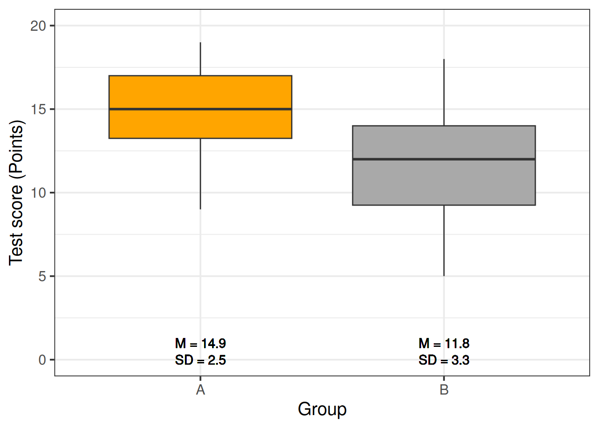
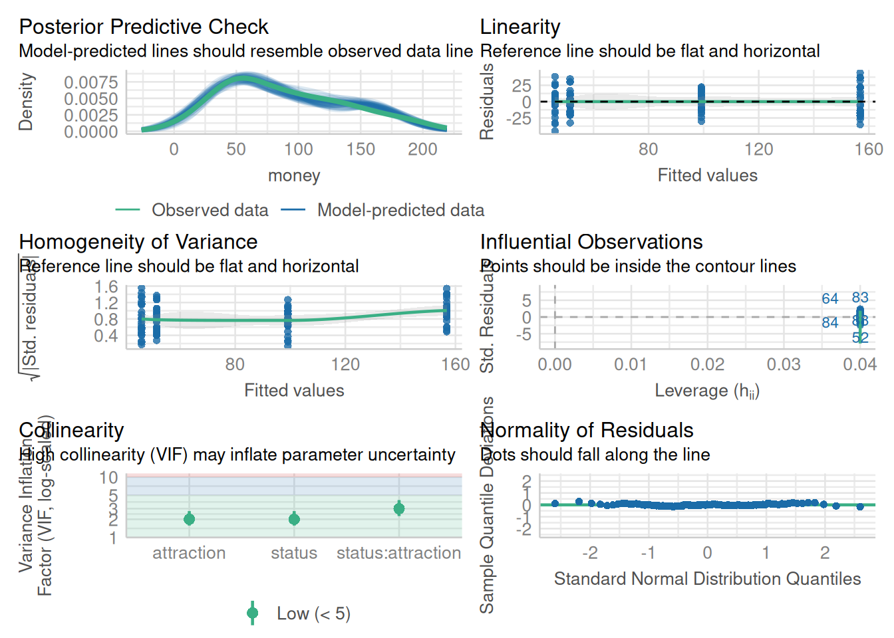
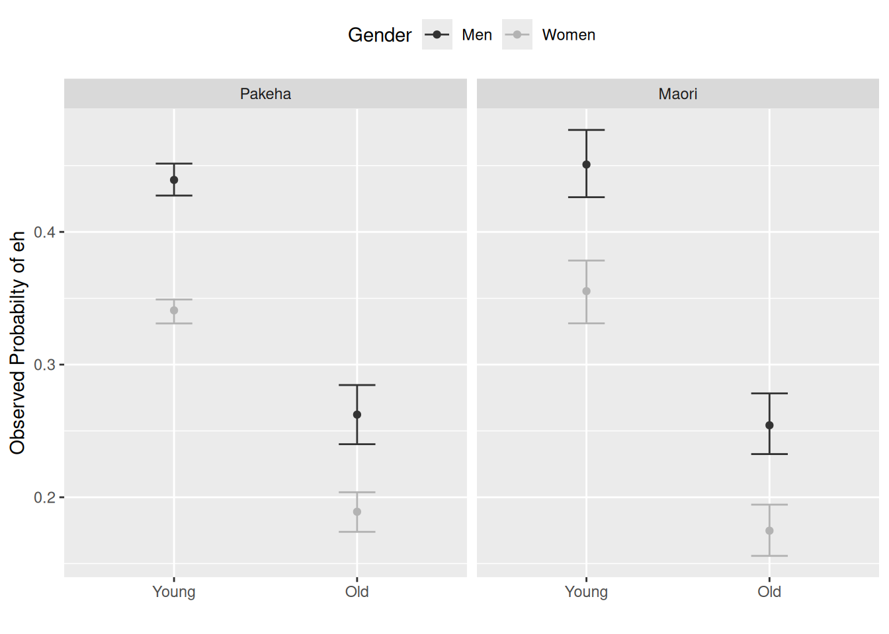
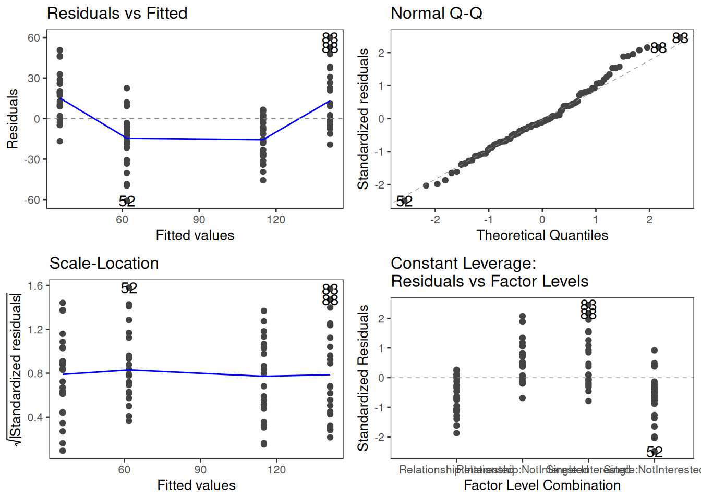
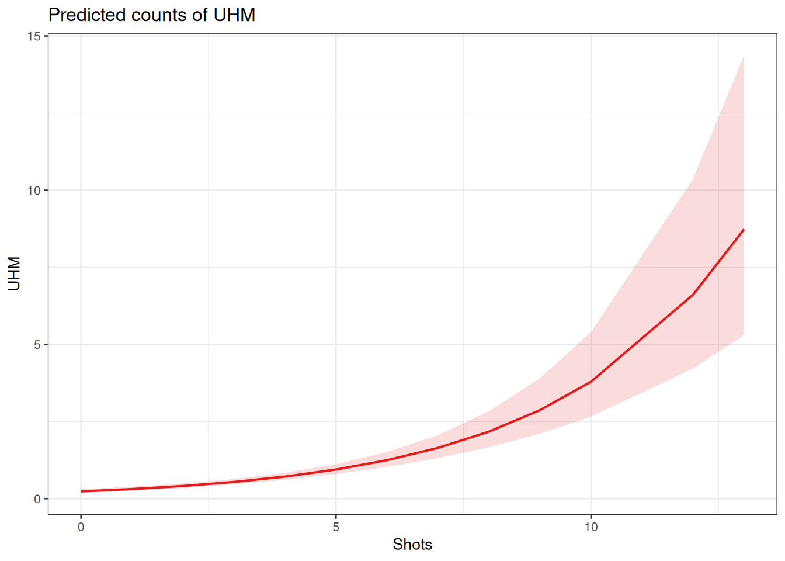
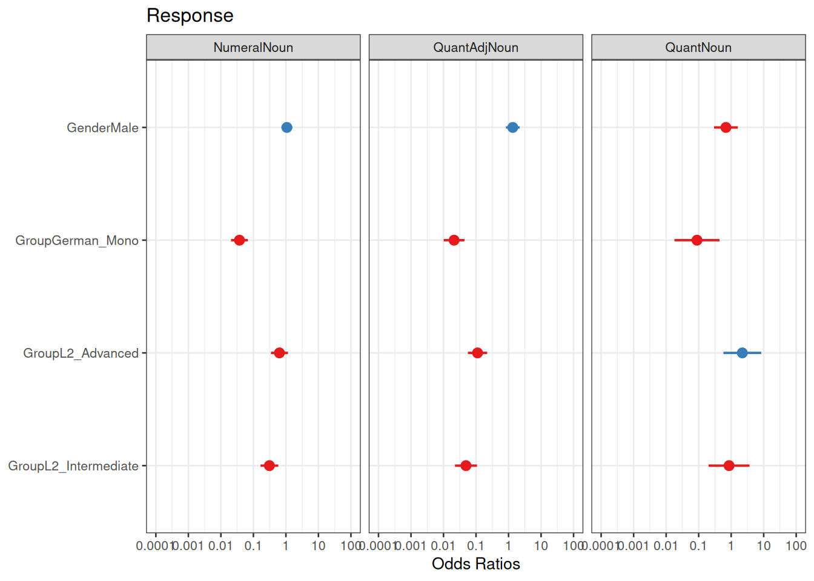
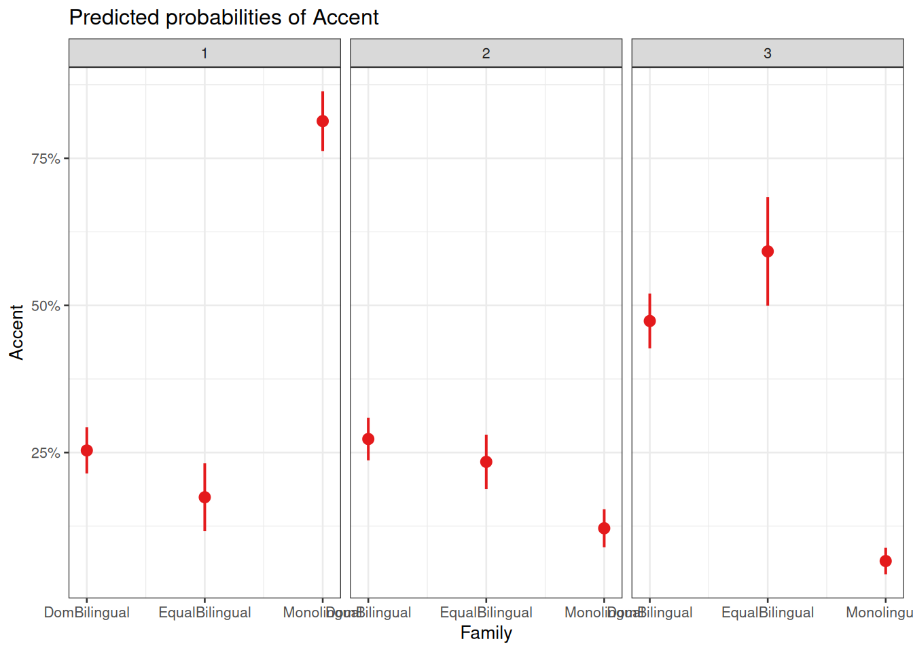

Regression Analysis in R

Introduction
This tutorial introduces regression analyses (also called regression modeling) using R.1 Regression models are among the most widely used quantitative methods in the language sciences to assess if and how predictors (variables or interactions between variables) correlate with a certain response.
This tutorial is aimed at intermediate and advanced users of R with the aim of showcasing how to perform regression analysis using R. The aim is not to provide a fully-fledged analysis but rather to show and exemplify common regression types, model diagnostics, and model fitting using R.
The entire R Notebook for the tutorial can be downloaded here. If you want to render the R Notebook on your machine, i.e. knitting the document to html or a pdf, you need to make sure that you have R and RStudio installed and you also need to download the bibliography file and store it in the same folder where you store the Rmd or the Rproj file.
Regression models are so popular because they can
incorporate many predictors in a single model (multivariate: allows to test the impact of one predictor while the impact of (all) other predictors is controlled for)
extremely flexible and and can be fitted to different types of predictors and dependent variables
provide output that can be easily interpreted
conceptually relative simple and not overly complex from a mathematical perspective
R offers various ready-made functions with which implementing different types of regression models is very easy.
The most widely use regression models are
linear regression (dependent variable is numeric, no outliers)
logistic regression (dependent variable is binary)
ordinal regression (dependent variable represents an ordered factor, e.g. Likert items)
multinomial regression (dependent variable is categorical)
The major difference between these types of models is that they take different types of dependent variables: linear regressions take numeric, logistic regressions take nominal variables, ordinal regressions take ordinal variables, and Poisson regressions take dependent variables that reflect counts of (rare) events. Robust regression, in contrast, is a simple multiple linear regression that is able to handle outliers due to a weighing procedure.
If regression models contain a random effect structure which is used to model nestedness or dependence among data points, the regression models are called mixed-effect models. regressions that do not have a random effect component to model nestedness or dependence are referred to as fixed-effect regressions (we will have a closer look at the difference between fixed and random effects below).
There are two basic types of regression models:
fixed-effects regression models
mixed-effects regression models (which are fitted using the
lme4package (Bates et al. 2015) in this tutorial).
Fixed-effects regression models are models that assume a non-hierarchical data structure, i.e. data where data points are not nested or grouped in higher order categories (e.g. students within classes). The first part of this tutorial focuses on fixed-effects regression models while the second part focuses on mixed-effects regression models.
There exists a wealth of literature focusing on regression analysis and the concepts it is based on. For instance, there are Achen, Bortz, Crawley, Faraway, Field, Miles, and Field (my personal favorite), Gries, Levshina, and Wilcox to name just a few. Introductions to regression modeling in R are Baayen, Crawley, Gries, or Levshina.
The basic principle
The idea behind regression analysis is expressed formally in the equation below where \(f_{(x)}\) is the \(y\)-value we want to predict, \(\alpha\) is the intercept (the point where the regression line crosses the \(y\)-axis), \(\beta\) is the coefficient (the slope of the regression line).
\[\begin{equation} f_{(x)} = \alpha + \beta_{i}x + \epsilon \end{equation}\]
To understand what this means, let us imagine that we have collected information about the how tall people are and what they weigh. Now we want to predict the weight of people of a certain height - let’s say 180cm.
Height | Weight |
|---|---|
173 | 80 |
169 | 68 |
176 | 72 |
166 | 75 |
161 | 70 |
164 | 65 |
160 | 62 |
158 | 60 |
180 | 85 |
187 | 92 |
We can run a simple linear regression on the data and we get the following output:
# model for upper panels
summary(glm(Weight ~ 1, data = df))
Call:
glm(formula = Weight ~ 1, data = df)
Coefficients:
Estimate Std. Error t value Pr(>|t|)
(Intercept) 72.900 3.244 22.48 3.24e-09 ***
---
Signif. codes: 0 '***' 0.001 '**' 0.01 '*' 0.05 '.' 0.1 ' ' 1
(Dispersion parameter for gaussian family taken to be 105.2111)
Null deviance: 946.9 on 9 degrees of freedom
Residual deviance: 946.9 on 9 degrees of freedom
AIC: 77.885
Number of Fisher Scoring iterations: 2To estimate how much some weights who is 180cm tall, we would multiply the coefficient (slope of the line) with 180 (\(x\)) and add the value of the intercept (point where line crosses the \(y\)-axis). If we plug in the numbers from the regression model below, we get
\[\begin{equation} -93.77 + 0.98 ∗ 180 = 83.33 (kg) \end{equation}\]
A person who is 180cm tall is predicted to weigh 83.33kg. Thus, the predictions of the weights are visualized as the red line in the figure below. Such lines are called regression lines. Regression lines are those lines where the sum of the red lines should be minimal. The slope of the regression line is called coefficient and the point where the regression line crosses the y-axis at x = 0 is called the intercept. Other important concepts in regression analysis are variance and residuals. Residuals are the distance between the line and the points (the red lines) and it is also called variance.
Some words about the plots in the figure above: the upper left panel shows the raw observed data (black dots). The upper right panel shows the mean weight (blue line) and the residuals (in red). residuals are the distances from the expected or predicted values to the observed values (in this case the mean is the most most basic model which we use to predict values while the observed values simply represent the actual data points). The lower left panel shows observed values and the regression line, i.e, that line which, when drawn through the data points, will have the lowest sum of residuals. The lower right panel shows the regression line and the residuals, i.e. the distances between the expected or predicted values to the actual observed values (in red). Note that the sum of residuals in the lower right panel is much smaller than the sum of residuals in the upper right panel. This suggest that considering Height is a good idea as it explains a substantive amount of residual error and reduces the sum of residuals (or variance).2
Now that we are familiar with the basic principle of regression modeling - i.e. finding the line through data that has the smallest sum of residuals, we will apply this to a linguistic example.
Preparation and session set up
This tutorial is based on R. If you have not installed R or are new to it, you will find an introduction to and more information how to use R here. For this tutorials, we need to install certain packages from an R library so that the scripts shown below are executed without errors. Before turning to the code below, please install the packages by running the code below this paragraph. If you have already installed the packages mentioned below, then you can skip ahead and ignore this section. To install the necessary packages, simply run the following code - it may take some time (between 1 and 5 minutes to install all of the libraries so you do not need to worry if it takes some time).
# install
install.packages("Boruta")
install.packages("car")
install.packages("emmeans")
install.packages("effects")
install.packages("flextable")
install.packages("glmulti")
install.packages("ggplot2")
install.packages("ggpubr")
install.packages("Hmisc")
install.packages("knitr")
install.packages("lme4")
install.packages("MASS")
install.packages("mclogit")
install.packages("MuMIn")
install.packages("nlme")
install.packages("ordinal")
install.packages("rms")
install.packages("robustbase")
install.packages("sjPlot")
install.packages("stringr")
install.packages("tibble")
install.packages("dplyr")
install.packages("vcd")
install.packages("vip")
install.packages("gridExtra")
install.packages("performance")
install.packages("see")
# install klippy for copy-to-clipboard button in code chunks
install.packages("remotes")
remotes::install_github("rlesur/klippy")Now that we have installed the packages, we activate them as shown below.
# set options
options(stringsAsFactors = F) # no automatic data transformation
options("scipen" = 100, "digits" = 12) # suppress math annotation
# load packages
library(Boruta)
library(car)
library(effects)
library(emmeans)
library(flextable)
library(glmulti)
library(ggfortify)
library(ggplot2)
library(ggpubr)
library(Hmisc)
library(knitr)
library(lme4)
library(MASS)
library(mclogit)
library(MuMIn)
library(nlme)
library(ordinal)
library(rms)
library(robustbase)
library(sjPlot)
library(stringr)
library(tibble)
library(vcd)
library(vip)
library(gridExtra)
library(performance)
library(see)
# activate klippy for copy-to-clipboard button
klippy::klippy()Once you have installed R and RStudio and initiated the session by executing the code shown above, you are good to go.
Fixed Effects Regression
Before turning to mixed-effects models which are able to represent hierarchical data structures, we will focus on traditional fixed effects regression models and begin with multiple linear regression.
Simple Linear Regression
This section focuses on a very widely used statistical method which is called regression. Regressions are used when we try to understand how independent variables correlate with a dependent or outcome variable. So, if you want to investigate how a certain factor affects an outcome, then a regression is the way to go. We will have a look at two simple examples to understand what the concepts underlying a regression mean and how a regression works. The R code, that we will use, is adapted from many highly recommendable introductions which also focus on regression (among other types of analyses), for example, Gries, Winter, Levshina, Winter or Wilcox. Baayen is also very good but probably not the first book one should read about statistics but it is highly recommendable for advanced learners.
Although the basic logic underlying regressions is identical to the conceptual underpinnings of analysis of variance (ANOVA), a related method, sociolinguists have traditionally favored regression analysis in their studies while ANOVAs have been the method of choice in psycholinguistics. The preference for either method is grounded in historical happenstances and the culture of these subdisciplines rather than in methodological reasoning. However, ANOVA are more restricted in that they can only take numeric dependent variables and they have stricter model assumptions that are violated more readily. In addition, a minor difference between regressions and ANOVA lies in the fact that regressions are based on the \(t\)-distribution while ANOVAs use the F-distribution (however, the F-value is simply the value of t squared or t2). Both t- and F-values report on the ratio between explained and unexplained variance.
The idea behind regression analysis is expressed formally in the equation below where\(f_{(x)}\) is the y-value we want to predict, \(\alpha\) is the intercept (the point where the regression line crosses the y-axis at x = 0), \(\beta\) is the coefficient (the slope of the regression line).
\[\begin{equation} f_{(x)} = \alpha + \beta_{i}x + \epsilon \end{equation}\]
In other words, to estimate how much some weights who is 180cm tall, we would multiply the coefficient (slope of the line) with 180 (x) and add the value of the intercept (point where line crosses the y-axis at x = 0).
However, the idea behind regressions can best be described graphically: imagine a cloud of points (like the points in the scatterplot in the upper left panel below). Regressions aim to find that line which has the minimal summed distance between points and the line (like the line in the lower panels). Technically speaking, the aim of a regression is to find the line with the minimal deviance (or the line with the minimal sum of residuals). Residuals are the distance between the line and the points (the red lines) and it is also called variance.
Thus, regression lines are those lines where the sum of the red lines should be minimal. The slope of the regression line is called coefficient and the point where the regression line crosses the y-axis at x = 0 is called the intercept.
A word about standard errors (SE) is in order here because most commonly used statistics programs will provide SE values when reporting regression models. The SE is a measure that tells us how much the coefficients were to vary if the same regression were applied to many samples from the same population. A relatively small SE value therefore indicates that the coefficients will remain very stable if the same regression model is fitted to many different samples with identical parameters. In contrast, a large SE tells you that the model is volatile and not very stable or reliable as the coefficients vary substantially if the model is applied to many samples.
Mathematically, the SE is the standard deviation (SD) divided by the square root of the sample size (N) (see below).The SD is the square root of the deviance (that is, the SD is the square root of the sum of the mean \(\bar{x}\) minus each data point (xi) squared divided by the sample size (N) minus 1).
\[\begin{equation} Standard Error (SE) = \frac{\sum (\bar{x}-x_{i})^2/N-1}{\sqrt{N}} = \frac{SD}{\sqrt{N}} \end{equation}\]
Example 1: Preposition Use across Real-Time
We will now turn to our first example. In this example, we will investigate whether the frequency of prepositions has changed from Middle English to Late Modern English. The reasoning behind this example is that Old English was highly synthetic compared with Present-Day English which comparatively analytic. In other words, while Old English speakers used case to indicate syntactic relations, speakers of Present-Day English use word order and prepositions to indicate syntactic relationships. This means that the loss of case had to be compensated by different strategies and maybe these strategies continued to develop and increase in frequency even after the change from synthetic to analytic had been mostly accomplished. And this prolonged change in compensatory strategies is what this example will focus on.
The analysis is based on data extracted from the Penn Corpora of Historical English (see http://www.ling.upenn.edu/hist-corpora/), that consists of 603 texts written between 1125 and 1900. In preparation of this example, all elements that were part-of-speech tagged as prepositions were extracted from the PennCorpora.
Then, the relative frequencies (per 1,000 words) of prepositions per text were calculated. This frequency of prepositions per 1,000 words represents our dependent variable. In a next step, the date when each letter had been written was extracted. The resulting two vectors were combined into a table which thus contained for each text, when it was written (independent variable) and its relative frequency of prepositions (dependent or outcome variable).
A regression analysis will follow the steps described below:
Extraction and processing of the data
Data visualization
Applying the regression analysis to the data
Diagnosing the regression model and checking whether or not basic model assumptions have been violated.
In a first step, we load functions that we may need (which in this case is a function that we will use to summarize the results of the analysis).
# load functions
source("rscripts/slrsummary.r")After preparing our session, we can now load and inspect the data to get a first impression of its properties.
# load data
slrdata <- base::readRDS("tutorials/regression/data/sld.rda", "rb")Date | Genre | Text | Prepositions | Region |
|---|---|---|---|---|
1,736 | Science | albin | 166.01 | North |
1,711 | Education | anon | 139.86 | North |
1,808 | PrivateLetter | austen | 130.78 | North |
1,878 | Education | bain | 151.29 | North |
1,743 | Education | barclay | 145.72 | North |
1,908 | Education | benson | 120.77 | North |
1,906 | Diary | benson | 119.17 | North |
1,897 | Philosophy | boethja | 132.96 | North |
1,785 | Philosophy | boethri | 130.49 | North |
1,776 | Diary | boswell | 135.94 | North |
1,905 | Travel | bradley | 154.20 | North |
1,711 | Education | brightland | 149.14 | North |
1,762 | Sermon | burton | 159.71 | North |
1,726 | Sermon | butler | 157.49 | North |
1,835 | PrivateLetter | carlyle | 124.16 | North |
Inspecting the data is very important because it can happen that a data set may not load completely or that variables which should be numeric have been converted to character variables. If unchecked, then such issues could go unnoticed and cause trouble.
We will now plot the data to get a better understanding of what the data looks like.
p1 <- ggplot(slrdata, aes(Date, Prepositions)) +
geom_point() +
theme_bw() +
labs(x = "Year") +
labs(y = "Prepositions per 1,000 words") +
geom_smooth()
p2 <- ggplot(slrdata, aes(Date, Prepositions)) +
geom_point() +
theme_bw() +
labs(x = "Year") +
labs(y = "Prepositions per 1,000 words") +
geom_smooth(method = "lm") # with linear model smoothing!
# display plots
ggpubr::ggarrange(p1, p2, ncol = 2, nrow = 1)Before beginning with the regression analysis, we will center the year. We center the values of year by subtracting each value from the mean of year. This can be useful when dealing with numeric variables because if we did not center year, we would get estimated values for year 0 (a year when English did not even exist yet). If a variable is centered, the regression provides estimates of the model refer to the mean of that numeric variable. In other words, centering can be very helpful, especially with respect to the interpretation of the results that regression models report.
# center date
slrdata$Date <- slrdata$Date - mean(slrdata$Date) We will now begin the regression analysis by generating a first regression model and inspect its results.
# create initial model
m1.lm <- lm(Prepositions ~ Date, data = slrdata)
# inspect results
summary(m1.lm)
Call:
lm(formula = Prepositions ~ Date, data = slrdata)
Residuals:
Min 1Q Median 3Q Max
-69.1012471 -13.8549421 0.5779091 13.3208913 62.8580401
Coefficients:
Estimate Std. Error t value Pr(>|t|)
(Intercept) 132.19009310987 0.83863748040 157.62483 < 0.0000000000000002 ***
Date 0.01732180307 0.00726746646 2.38347 0.017498 *
---
Signif. codes: 0 '***' 0.001 '**' 0.01 '*' 0.05 '.' 0.1 ' ' 1
Residual standard error: 19.4339648 on 535 degrees of freedom
Multiple R-squared: 0.010507008, Adjusted R-squared: 0.00865748837
F-statistic: 5.68093894 on 1 and 535 DF, p-value: 0.017498081The summary output starts by repeating the regression equation. Then, the model provides the distribution of the residuals. The residuals should be distributed normally with the absolute values of the Min and Max as well as the 1Q (first quartile) and 3Q (third quartile) being similar or ideally identical. In our case, the values are very similar which suggests that the residuals are distributed evenly and follow a normal distribution. The next part of the report is the coefficients table. The estimate for the intercept is the value of y at x = 0. The estimate for Date represents the slope of the regression line and tells us that with each year, the predicted frequency of prepositions increase by .01732 prepositions. The t-value is the Estimate divided by the standard error (Std. Error). Based on the t-value, the p-value can be calculated manually as shown below.
# use pt function (which uses t-values and the degrees of freedom)
2*pt(-2.383, nrow(slrdata)-1)[1] 0.0175196401501The R2-values tell us how much variance is explained by our model. The baseline value represents a model that uses merely the mean. 0.0105 means that our model explains only 1.05 percent of the variance (0.010 x 100) - which is a tiny amount. The problem of the multiple R2 is that it will increase even if we add variables that explain almost no variance. Hence, multiple R2 encourages the inclusion of junk variables.
\[\begin{equation} R^2 = R^2_{multiple} = 1 - \frac{\sum (y_i - \hat{y_i})^2}{\sum (y_i - \bar y)^2} \end{equation}\]
The adjusted R2-value takes the number of predictors into account and, thus, the adjusted R2 will always be lower than the multiple R2. This is so because the adjusted R2 penalizes models for having predictors. The equation for the adjusted R2 below shows that the amount of variance that is explained by all the variables in the model (the top part of the fraction) must outweigh the inclusion of the number of variables (k) (lower part of the fraction). Thus, the adjusted R2 will decrease when variables are added that explain little or even no variance while it will increase if variables are added that explain a lot of variance.
\[\begin{equation} R^2_{adjusted} = 1 - (\frac{(1 - R^2)(n - 1)}{n - k - 1}) \end{equation}\]
If there is a big difference between the two R2-values, then the model contains (many) predictors that do not explain much variance which is not good. The F-statistic and the associated p-value tell us that the model, despite explaining almost no variance, is still significantly better than an intercept-only base-line model (or using the overall mean to predict the frequency of prepositions per text).
We can test this and also see where the F-values comes from by comparing the
# create intercept-only base-line model
m0.lm <- lm(Prepositions ~ 1, data = slrdata)
# compare the base-line and the more saturated model
anova(m1.lm, m0.lm, test = "F")Analysis of Variance Table
Model 1: Prepositions ~ Date
Model 2: Prepositions ~ 1
Res.Df RSS Df Sum of Sq F Pr(>F)
1 535 202058.2576
2 536 204203.8289 -1 -2145.57126 5.68094 0.017498 *
---
Signif. codes: 0 '***' 0.001 '**' 0.01 '*' 0.05 '.' 0.1 ' ' 1The F- and p-values are exactly those reported by the summary which shows where the F-values comes from and what it means; namely it denote the difference between the base-line and the more saturated model.
The degrees of freedom associated with the residual standard error are the number of cases in the model minus the number of predictors (including the intercept). The residual standard error is square root of the sum of the squared residuals of the model divided by the degrees of freedom. Have a look at he following to clear this up:
# DF = N - number of predictors (including intercept)
DegreesOfFreedom <- nrow(slrdata)-length(coef(m1.lm))
# sum of the squared residuals
SumSquaredResiduals <- sum(resid(m1.lm)^2)
# Residual Standard Error
sqrt(SumSquaredResiduals/DegreesOfFreedom); DegreesOfFreedom[1] 19.4339647585[1] 535We will now check if mathematical assumptions have been violated (homogeneity of variance) or whether the data contains outliers. We check this using diagnostic plots.
# generate data
df2 <- data.frame(id = 1:length(resid(m1.lm)),
residuals = resid(m1.lm),
standard = rstandard(m1.lm),
studend = rstudent(m1.lm))
# generate plots
p1 <- ggplot(df2, aes(x = id, y = residuals)) +
theme(panel.grid.major = element_blank(), panel.grid.minor = element_blank()) +
geom_point() +
labs(y = "Residuals", x = "Index")
p2 <- ggplot(df2, aes(x = id, y = standard)) +
theme(panel.grid.major = element_blank(), panel.grid.minor = element_blank()) +
geom_point() +
labs(y = "Standardized Residuals", x = "Index")
p3 <- ggplot(df2, aes(x = id, y = studend)) +
theme(panel.grid.major = element_blank(), panel.grid.minor = element_blank()) +
geom_point() +
labs(y = "Studentized Residuals", x = "Index")
# display plots
ggpubr::ggarrange(p1, p2, p3, ncol = 3, nrow = 1)The left graph shows the residuals of the model (i.e., the differences between the observed and the values predicted by the regression model). The problem with this plot is that the residuals are not standardized and so they cannot be compared to the residuals of other models. To remedy this deficiency, residuals are normalized by dividing the residuals by their standard deviation. Then, the normalized residuals can be plotted against the observed values (center panel). In this way, not only are standardized residuals obtained, but the values of the residuals are transformed into z-values, and one can use the z-distribution to find problematic data points. There are three rules of thumb regarding finding problematic data points through standardized residuals (Field, Miles, and Field, 268–69):
Points with values higher than 3.29 should be removed from the data.
If more than 1% of the data points have values higher than 2.58, then the error rate of our model is too high.
If more than 5% of the data points have values greater than 1.96, then the error rate of our model is too high.
The right panel shows the * studentized residuals* (adjusted predicted values: each data point is divided by the standard error of the residuals). In this way, it is possible to use Student’s t-distribution to diagnose our model.
Adjusted predicted values are residuals of a special kind: the model is calculated without a data point and then used to predict this data point. The difference between the observed data point and its predicted value is then called the adjusted predicted value. In summary, studentized residuals are very useful because they allow us to identify influential data points.
The plots show that there are two potentially problematic data points (the top-most and bottom-most point). These two points are clearly different from the other data points and may therefore be outliers. We will test later if these points need to be removed.
We will now generate more diagnostic plots.
# generate plots
autoplot(m1.lm) +
theme(panel.grid.major = element_blank(), panel.grid.minor = element_blank()) The diagnostic plots are very positive and we will go through why this is so for each panel. The graph in the upper left panel is useful for finding outliers or for determining the correlation between residuals and predicted values: when a trend becomes visible in the line or points (e.g., a rising trend or a zigzag line), then this would indicate that the model would be problematic (in such cases, it can help to remove data points that are too influential (outliers)).
The graphic in the upper right panel indicates whether the residuals are normally distributed (which is desirable) or whether the residuals do not follow a normal distribution. If the points lie on the line, the residuals follow a normal distribution. For example, if the points are not on the line at the top and bottom, it shows that the model does not predict small and large values well and that it therefore does not have a good fit.
The graphic in the lower left panel provides information about homoscedasticity. Homoscedasticity means that the variance of the residuals remains constant and does not correlate with any independent variable. In unproblematic cases, the graphic shows a flat line. If there is a trend in the line, we are dealing with heteroscedasticity, that is, a correlation between independent variables and the residuals, which is very problematic for regressions.
The graph in the lower right panel shows problematic influential data points that disproportionately affect the regression (this would be problematic). If such influential data points are present, they should be either weighted (one could generate a robust rather than a simple linear regression) or they must be removed. The graph displays Cook’s distance, which shows how the regression changes when a model without this data point is calculated. The cook distance thus shows the influence a data point has on the regression as a whole. Data points that have a Cook’s distance value greater than 1 are problematic (Field, Miles, and Field, 269).
The so-called leverage is also a measure that indicates how strongly a data point affects the accuracy of the regression. Leverage values range between 0 (no influence) and 1 (strong influence: suboptimal!). To test whether a specific data point has a high leverage value, we calculate a cut-off point that indicates whether the leverage is too strong or still acceptable. The following two formulas are used for this:
\[\begin{equation} Leverage = \frac{3(k + 1)}{n} | \frac{2(k + 1)}{n} \end{equation}\]
We will look more closely at leverage in the context of multiple linear regression and will therefore end the current analysis by summarizing the results of the regression analysis in a table.
# create summary table
slrsummary(m1.lm) Parameters | Estimate | Pearson's r | Std. Error | t value | Pr(>|t|) | P-value sig. |
|---|---|---|---|---|---|---|
(Intercept) | 132.19 | 0.84 | 157.62 | 0 | p < .001*** | |
Date | 0.02 | 0.1 | 0.01 | 2.38 | 0.0175 | p < .05* |
Model statistics | Value | |||||
Number of cases in model | 537 | |||||
Residual standard error on 535 DF | 19.43 | |||||
Multiple R-squared | 0.0105 | |||||
Adjusted R-squared | 0.0087 | |||||
F-statistic (1, 535) | 5.68 | |||||
Model p-value | 0.0175 |
An alternative but less informative summary table of the results of a regression analysis can be generated using the tab_model function from the sjPlot package (Lüdecke) (as is shown below).
# generate summary table
sjPlot::tab_model(m1.lm) | Prepositions | |||
| Predictors | Estimates | CI | p |
| (Intercept) | 132.19 | 130.54 – 133.84 | <0.001 |
| Date | 0.02 | 0.00 – 0.03 | 0.017 |
| Observations | 537 | ||
| R2 / R2 adjusted | 0.011 / 0.009 | ||
Typically, the results of regression analyses are presented in such tables as they include all important measures of model quality and significance, as well as the magnitude of the effects.
In addition, the results of simple linear regressions should be summarized in writing.
We can use the reports package (Makowski et al. 2021) to summarize the analysis.
report::report(m1.lm)We fitted a linear model (estimated using OLS) to predict Prepositions with
Date (formula: Prepositions ~ Date). The model explains a statistically
significant and very weak proportion of variance (R2 = 0.01, F(1, 535) = 5.68,
p = 0.017, adj. R2 = 8.66e-03). The model's intercept, corresponding to Date =
0, is at 132.19 (95% CI [130.54, 133.84], t(535) = 157.62, p < .001). Within
this model:
- The effect of Date is statistically significant and positive (beta = 0.02,
95% CI [3.05e-03, 0.03], t(535) = 2.38, p = 0.017; Std. beta = 0.10, 95% CI
[0.02, 0.19])
Standardized parameters were obtained by fitting the model on a standardized
version of the dataset. 95% Confidence Intervals (CIs) and p-values were
computed using a Wald t-distribution approximation.We can use this output to write up a final report:
A simple linear regression has been fitted to the data. A visual assessment of the model diagnostic graphics did not indicate any problematic or disproportionately influential data points (outliers) and performed significantly better compared to an intercept-only base line model but only explained .87 percent of the variance (adjusted R2: .0087, F-statistic (1, 535): 5,68, p-value: 0.0175*). The final minimal adequate linear regression model is based on 537 data points and confirms a significant and positive correlation between the year in which the text was written and the relative frequency of prepositions (coefficient estimate: .02 (standardized : 0.10, 95% CI [0.02, 0.19]), SE: 0.01, t-value535: 2.38, p-value: .0175*). Standardized parameters were obtained by fitting the model on a standardized version of the dataset. 95% Confidence Intervals (CIs) and p-values were computed using the Wald approximation.
Example 2: Teaching Styles
In the previous example, we dealt with two numeric variables, while the following example deals with a categorical independent variable and a numeric dependent variable. The ability for regressions to handle very different types of variables makes regressions a widely used and robust method of analysis.
In this example, we are dealing with two groups of students that have been randomly assigned to be exposed to different teaching methods. Both groups undergo a language learning test after the lesson with a maximum score of 20 points.
The question that we will try to answer is whether the students in group A have performed significantly better than those in group B which would indicate that the teaching method to which group A was exposed works better than the teaching method to which group B was exposed.
Let’s move on to implementing the regression in R. In a first step, we load the data set and inspect its structure.
# load data
slrdata2 <- base::readRDS("tutorials/regression/data/sgd.rda", "rb")Group | Score |
|---|---|
A | 15 |
A | 12 |
A | 11 |
A | 18 |
A | 15 |
A | 15 |
A | 9 |
A | 19 |
A | 14 |
A | 13 |
A | 11 |
A | 12 |
A | 18 |
A | 15 |
A | 16 |
Now, we graphically display the data. In this case, a boxplot represents a good way to visualize the data.
# extract means
slrdata2 %>%
dplyr::group_by(Group) %>%
dplyr::mutate(Mean = round(mean(Score), 1), SD = round(sd(Score), 1)) %>%
ggplot(aes(Group, Score)) +
geom_boxplot(fill=c("orange", "darkgray")) +
geom_text(aes(label = paste("M = ", Mean, sep = ""), y = 1)) +
geom_text(aes(label = paste("SD = ", SD, sep = ""), y = 0)) +
theme_bw(base_size = 15) +
labs(x = "Group") +
labs(y = "Test score (Points)", cex = .75) +
coord_cartesian(ylim = c(0, 20)) +
guides(fill = FALSE) 
The data indicate that group A did significantly better than group B. We will test this impression by generating the regression model and creating the model and extracting the model summary.
# generate regression model
m2.lm <- lm(Score ~ Group, data = slrdata2)
# inspect results
summary(m2.lm)
Call:
lm(formula = Score ~ Group, data = slrdata2)
Residuals:
Min 1Q Median 3Q Max
-6.76666667 -1.93333333 0.15000000 2.06666667 6.23333333
Coefficients:
Estimate Std. Error t value Pr(>|t|)
(Intercept) 14.933333333 0.534571121 27.93517 < 0.000000000000000222 ***
GroupB -3.166666667 0.755997730 -4.18873 0.000096692 ***
---
Signif. codes: 0 '***' 0.001 '**' 0.01 '*' 0.05 '.' 0.1 ' ' 1
Residual standard error: 2.92796662 on 58 degrees of freedom
Multiple R-squared: 0.232249929, Adjusted R-squared: 0.219012859
F-statistic: 17.545418 on 1 and 58 DF, p-value: 0.0000966923559The model summary reports that Group A performed significantly better compared with Group B. This is shown by the fact that the p-value (the value in the column with the header (Pr(>|t|)) is smaller than .001 as indicated by the three * after the p-values). Also, the negative Estimate for Group B indicates that Group B has lower scores than Group A. We will now generate the diagnostic graphics.3
par(mfrow = c(1, 3)) # plot window: 1 plot/row, 3 plots/column
plot(resid(m2.lm)) # generate diagnostic plot
plot(rstandard(m2.lm)) # generate diagnostic plot
plot(rstudent(m2.lm)); par(mfrow = c(1, 1)) # restore normal plot windowThe graphics do not indicate outliers or other issues, so we can continue with more diagnostic graphics.
par(mfrow = c(2, 2)) # generate a plot window with 2x2 panels
plot(m2.lm); par(mfrow = c(1, 1)) # restore normal plot windowThese graphics also show no problems. In this case, the data can be summarized in the next step.
# tabulate results
slrsummary(m2.lm)Parameters | Estimate | Pearson's r | Std. Error | t value | Pr(>|t|) | P-value sig. |
|---|---|---|---|---|---|---|
(Intercept) | 14.93 | 0.53 | 27.94 | 0 | p < .001*** | |
GroupB | -3.17 | 0.48 | 0.76 | -4.19 | 0.0001 | p < .001*** |
Model statistics | Value | |||||
Number of cases in model | 60 | |||||
Residual standard error on 58 DF | 2.93 | |||||
Multiple R-squared | 0.2322 | |||||
Adjusted R-squared | 0.219 | |||||
F-statistic (1, 58) | 17.55 | |||||
Model p-value | 0.0001 |
We can use the reports package (Makowski et al. 2021) to summarize the analysis.
report::report(m2.lm)We fitted a linear model (estimated using OLS) to predict Score with Group
(formula: Score ~ Group). The model explains a statistically significant and
moderate proportion of variance (R2 = 0.23, F(1, 58) = 17.55, p < .001, adj. R2
= 0.22). The model's intercept, corresponding to Group = A, is at 14.93 (95% CI
[13.86, 16.00], t(58) = 27.94, p < .001). Within this model:
- The effect of Group [B] is statistically significant and negative (beta =
-3.17, 95% CI [-4.68, -1.65], t(58) = -4.19, p < .001; Std. beta = -0.96, 95%
CI [-1.41, -0.50])
Standardized parameters were obtained by fitting the model on a standardized
version of the dataset. 95% Confidence Intervals (CIs) and p-values were
computed using a Wald t-distribution approximation.We can use this output to write up a final report:
A simple linear regression was fitted to the data. A visual assessment of the model diagnostics did not indicate any problematic or disproportionately influential data points (outliers). The final linear regression model is based on 60 data points, performed significantly better than an intercept-only base line model (F (1, 58): 17.55, p-value <. 001\(***\)), and reported that the model explained 21.9 percent of variance which confirmed a good model fit. According to this final model, group A scored significantly better on the language learning test than group B (coefficient: -3.17, 95% CI [-4.68, -1.65], Std. : -0.96, 95% CI [-1.41, -0.50], SE: 0.48, t-value58: -4.19, p-value <. 001\(***\)). Standardized parameters were obtained by fitting the model on a standardized version of the dataset. 95% Confidence Intervals (CIs) and p-values were computed using the Wald approximation.
Multiple Linear Regression
In contrast to simple linear regression, which estimates the effect of a single predictor, multiple linear regression estimates the effect of various predictor (see the equation below). A multiple linear regression can thus test the effects of various predictors simultaneously.
\[\begin{equation} f_{(x)} = \alpha + \beta_{1}x_{i} + \beta_{2}x_{i+1} + \dots + \beta_{n}x_{i+n} + \epsilon \end{equation}\]
There exists a wealth of literature focusing on multiple linear regressions and the concepts it is based on. For instance, there are Achen, Bortz, Crawley, Faraway, Field, Miles, and Field, Gries, Levshina, Winter and Wilcox to name just a few. Introductions to regression modeling in R are Baayen, Crawley, Gries, or Levshina.
The model diagnostics we are dealing with here are partly identical to the diagnostic methods discussed in the section on simple linear regression. Because of this overlap, diagnostics will only be described in more detail if they have not been described in the section on simple linear regression.
EXCURSION
`
A note on sample size and power
A brief note on minimum necessary sample or data set size appears necessary here. Although there appears to be a general assumption that 25 data points per group are sufficient, this is not necessarily correct (it is merely a general rule of thumb that is actually often incorrect). Such rules of thumb are inadequate because the required sample size depends on the number of variables in a given model, the size of the effect and the variance of the effect - in other words, the minimum necessary sample size relates to statistical power (see here for a tutorial on power). If a model contains many variables, then this requires a larger sample size than a model which only uses very few predictors.
Also, to detect an effect with a very minor effect size, one needs a substantially larger sample compared to cases where the effect is very strong. In fact, when dealing with small effects, model require a minimum of 600 cases to reliably detect these effects. Finally, effects that are very robust and do not vary much require a much smaller sample size compared with effects that are spurious and vary substantially. Since the sample size depends on the effect size and variance as well as the number of variables, there is no final one-size-fits-all answer to what the best sample size is.
Another, slightly better but still incorrect, rule of thumb is that the more data, the better. This is not correct because models based on too many cases are prone for overfitting and thus report correlations as being significant that are not. However, given that there are procedures that can correct for overfitting, larger data sets are still preferable to data sets that are simply too small to warrant reliable results. In conclusion, it remains true that the sample size depends on the effect under investigation.`
Despite there being no ultimate rule of thumb, Field, Miles, and Field (273–75), based on Green, provide data-driven suggestions for the minimal size of data required for regression models that aim to find medium sized effects (k = number of predictors; categorical variables with more than two levels should be transformed into dummy variables):
If one is merely interested in the overall model fit (something I have not encountered), then the sample size should be at least 50 + k (k = number of predictors in model).
If one is only interested in the effect of specific variables, then the sample size should be at least 104 + k (k = number of predictors in model).
If one is only interested in both model fit and the effect of specific variables, then the sample size should be at least the higher value of 50 + k or 104 + k (k = number of predictors in model).
You will see in the R code below that there is already a function that tests whether the sample size is sufficient.
Example: Gifts and Availability
The example we will go through here is taken from Field, Miles, and Field. In this example, the research question is if the money that men spend on presents for women depends on the women’s attractiveness and their relationship status. To answer this research question, we will implement a multiple linear regression and start by loading the data and inspect its structure and properties.
# load data
mlrdata <- base::readRDS("tutorials/regression/data/mld.rda", "rb")status | attraction | money |
|---|---|---|
Relationship | NotInterested | 86.33 |
Relationship | NotInterested | 45.58 |
Relationship | NotInterested | 68.43 |
Relationship | NotInterested | 52.93 |
Relationship | NotInterested | 61.86 |
Relationship | NotInterested | 48.47 |
Relationship | NotInterested | 32.79 |
Relationship | NotInterested | 35.91 |
Relationship | NotInterested | 30.98 |
Relationship | NotInterested | 44.82 |
Relationship | NotInterested | 35.05 |
Relationship | NotInterested | 64.49 |
Relationship | NotInterested | 54.50 |
Relationship | NotInterested | 61.48 |
Relationship | NotInterested | 55.51 |
The data set consist of three variables stored in three columns. The first column contains the relationship status of the present giver (in this study this were men), the second whether the man is interested in the woman (the present receiver in this study), and the third column represents the money spend on the present. The data set represents 100 cases and the mean amount of money spend on a present is 88.38 dollars. In a next step, we visualize the data to get a more detailed impression of the relationships between variables.
# create plots
p1 <- ggplot(mlrdata, aes(status, money)) +
geom_boxplot() +
theme_bw()
# plot 2
p2 <- ggplot(mlrdata, aes(attraction, money)) +
geom_boxplot() +
theme_bw()
# plot 3
p3 <- ggplot(mlrdata, aes(x = money)) +
geom_histogram(aes(y=..density..)) +
theme_bw() +
geom_density(alpha=.2, fill = "gray50")
# plot 4
p4 <- ggplot(mlrdata, aes(status, money)) +
geom_boxplot(aes(fill = factor(status))) +
scale_fill_manual(values = c("grey30", "grey70")) +
facet_wrap(~ attraction) +
guides(fill = "none") +
theme_bw()
# show plots
gridExtra::grid.arrange(grobs = list(p1, p2, p3, p4), widths = c(1, 1), layout_matrix = rbind(c(1, 2), c(3, 4)))The upper left figure consists of a boxplot which shows how much money was spent by relationship status. The figure suggests that men spend more on women if they are not in a relationship. The next figure shows the relationship between the money spend on presents and whether or not the men were interested in the women.
The boxplot in the upper right panel suggests that men spend substantially more on women if the men are interested in them. The next figure depicts the distribution of the amounts of money spend on the presents for the women. In addition, the figure indicates the existence of two outliers (dots in the boxplot)
The histogram in the lower left panel shows that, although the mean amount of money spent on presents is 88.38 dollars, the distribution peaks around 50 dollars indicating that on average, men spend about 50 dollars on presents. Finally, we will plot the amount of money spend on presents against relationship status by attraction in order to check whether the money spent on presents is affected by an interaction between attraction and relationship status.
The boxplot in the lower right panel confirms the existence of an interaction (a non-additive term) as men only spend more money on women if the men single and they are interested in the women. If men are not interested in the women, then the relationship has no effect as they spend an equal amount of money on the women regardless of whether they are in a relationship or not.
We will now start to implement the regression model. In a first step, we create two saturated models that contain all possible predictors (main effects and interactions). The two models are identical but one is generated with the lm and the other with the glm function as these functions offer different model parameters in their output.
m1.mlr = lm( # generate lm regression object
money ~ 1 + attraction*status, # def. regression formula (1 = intercept)
data = mlrdata) # def. data
m1.glm = glm( # generate glm regression object
money ~ 1 + attraction*status, # def. regression formula (1 = intercept)
family = gaussian, # def. linkage function
data = mlrdata) # def. dataAfter generating the saturated models we can now start with the model fitting. Model fitting refers to a process that aims at find the model that explains a maximum of variance with a minimum of predictors (see Field, Miles, and Field, 318). Model fitting is therefore based on the principle of parsimony which is related to Occam’s razor according to which explanations that require fewer assumptions are more likely to be true.
Automatic Model Fitting and Why You Should Not Use It
In this section, we will use a step-wise step-down procedure that uses decreases in AIC (Akaike Information Criterion) as the criterion to minimize the model in a step-wise manner. This procedure aims at finding the model with the lowest AIC values by evaluating - step-by-step - whether the removal of a predictor (term) leads to a lower AIC value.
We use this method here just so that you know it exists and how to implement it but you should rather avoid using automated model fitting. The reason for avoiding automated model fitting is that the algorithm only checks if the AIC has decreased but not if the model is stable or reliable. Thus, automated model fitting has the problem that you can never be sure that the way that lead you to the final model is reliable and that all models were indeed stable. Imagine you want to climb down from a roof top and you have a ladder. The problem is that you do not know if and how many steps are broken. This is similar to using automated model fitting. In other sections, we will explore better methods to fit models (manual step-wise step-up and step-down procedures, for example).
The AIC is calculated using the equation below. The lower the AIC value, the better the balance between explained variance and the number of predictors. AIC values can and should only be compared for models that are fit on the same data set with the same (number of) cases (LL stands for logged likelihood or LogLikelihood and k represents the number of predictors in the model (including the intercept); the LL represents a measure of how good the model fits the data).
\[\begin{equation} Akaike Information Criterion (AIC) = -2LL + 2k \end{equation}\]
An alternative to the AIC is the BIC (Bayesian Information Criterion). Both AIC and BIC penalize models for including variables in a model. The penalty of the BIC is bigger than the penalty of the AIC and it includes the number of cases in the model (LL stands for logged likelihood or LogLikelihood, k represents the number of predictors in the model (including the intercept), and N represents the number of cases in the model).
\[\begin{equation} Bayesian Information Criterion (BIC) = -2LL + 2k * log(N) \end{equation}\]
Interactions are evaluated first and only if all insignificant interactions have been removed would the procedure start removing insignificant main effects (that are not part of significant interactions). Other model fitting procedures (forced entry, step-wise step up, hierarchical) are discussed during the implementation of other regression models. We cannot discuss all procedures here as model fitting is rather complex and a discussion of even the most common procedures would to lengthy and time consuming at this point. It is important to note though that there is not perfect model fitting procedure and automated approaches should be handled with care as they are likely to ignore violations of model parameters that can be detected during manual - but time consuming - model fitting procedures. As a general rule of thumb, it is advisable to fit models as carefully and deliberately as possible. We will now begin to fit the model.
# automated AIC based model fitting
step(m1.mlr, direction = "both")Start: AIC=592.52
money ~ 1 + attraction * status
Df Sum of Sq RSS AIC
<none> 34557.56428 592.5211556
- attraction:status 1 24947.25481 59504.81909 644.8642395
Call:
lm(formula = money ~ 1 + attraction * status, data = mlrdata)
Coefficients:
(Intercept) attractionNotInterested
99.1548 -47.6628
statusSingle attractionNotInterested:statusSingle
57.6928 -63.1788 The automated model fitting procedure informs us that removing predictors has not caused a decrease in the AIC. The saturated model is thus also the final minimal adequate model. We will now inspect the final minimal model and go over the model report.
m2.mlr = lm( # generate lm regression object
money ~ (status + attraction)^2, # def. regression formula
data = mlrdata) # def. data
m2.glm = glm( # generate glm regression object
money ~ (status + attraction)^2, # def. regression formula
family = gaussian, # def. linkage function
data = mlrdata) # def. data
# inspect final minimal model
summary(m2.mlr)
Call:
lm(formula = money ~ (status + attraction)^2, data = mlrdata)
Residuals:
Min 1Q Median 3Q Max
-45.0760 -14.2580 0.4596 11.9315 44.1424
Coefficients:
Estimate Std. Error t value
(Intercept) 99.15480000 3.79459947 26.13050
statusSingle 57.69280000 5.36637403 10.75080
attractionNotInterested -47.66280000 5.36637403 -8.88175
statusSingle:attractionNotInterested -63.17880000 7.58919893 -8.32483
Pr(>|t|)
(Intercept) < 0.000000000000000222 ***
statusSingle < 0.000000000000000222 ***
attractionNotInterested 0.00000000000003751 ***
statusSingle:attractionNotInterested 0.00000000000058085 ***
---
Signif. codes: 0 '***' 0.001 '**' 0.01 '*' 0.05 '.' 0.1 ' ' 1
Residual standard error: 18.9729973 on 96 degrees of freedom
Multiple R-squared: 0.852041334, Adjusted R-squared: 0.847417626
F-statistic: 184.276619 on 3 and 96 DF, p-value: < 0.0000000000000002220446The first element of the report is called Call and it reports the regression formula of the model. Then, the report provides the residual distribution (the range, median and quartiles of the residuals) which allows drawing inferences about the distribution of differences between observed and expected values. If the residuals are distributed non-normally, then this is a strong indicator that the model is unstable and unreliable because mathematical assumptions on which the model is based are violated.
Next, the model summary reports the most important part: a table with model statistics of the fixed-effects structure of the model. The table contains the estimates (coefficients of the predictors), standard errors, t-values, and the p-values which show whether a predictor significantly correlates with the dependent variable that the model investigates.
All main effects (status and attraction) as well as the interaction between status and attraction is reported as being significantly correlated with the dependent variable (money). An interaction occurs if a correlation between the dependent variable and a predictor is affected by another predictor.
The top most term is called intercept and has a value of 99.15 which represents the base estimate to which all other estimates refer. To exemplify what this means, let us consider what the model would predict that a man would spend on a present if he interested in the woman but he is also in a relationship. The amount he would spend (based on the model would be 99.15 dollars (which is the intercept). This means that the intercept represents the predicted value if all predictors take the base or reference level. And since being in relationship but being interested are the case, and because the interaction does not apply, the predicted value in our example is exactly the intercept (see below).
#intercept Single NotInterested Single:NotInterested
99.15 + 57.69 + 0 + 0 # 156.8 single + interested[1] 156.8499.15 + 57.69 - 47.66 - 63.18 # 46.00 single + not interested[1] 4699.15 - 0 + 0 - 0 # 99.15 relationship + interested[1] 99.1599.15 - 0 - 47.66 - 0 # 51.49 relationship + not interested[1] 51.49Now, let us consider what a man would spend if he is in a relationship and he is not attracted to the women. In that case, the model predicts that the man would spend only 51.49 dollars on a present: the intercept (99.15) minus 47.66 because the man is not interested (and no additional subtraction because the interaction does not apply).
We can derive the same results easier using the predict function.
# make prediction based on the model for original data
prediction <- predict(m2.mlr, newdata = mlrdata)
# inspect predictions
table(round(prediction,2))
46.01 51.49 99.15 156.85
25 25 25 25 Below the table of coefficients, the regression summary reports model statistics that provide information about how well the model performs. The difference between the values and the values in the coefficients table is that the model statistics refer to the model as a whole rather than focusing on individual predictors.
The multiple R2-value is a measure of how much variance the model explains. A multiple R2-value of 0 would inform us that the model does not explain any variance while a value of .852 mean that the model explains 85.2 percent of the variance. A value of 1 would inform us that the model explains 100 percent of the variance and that the predictions of the model match the observed values perfectly. Multiplying the multiple R2-value thus provides the percentage of explained variance. Models that have a multiple R2-value equal or higher than .05 are deemed substantially significant (see Szmrecsanyi, 55). It has been claimed that models should explain a minimum of 5 percent of variance but this is problematic as it is not uncommon for models to have very low explanatory power while still performing significantly and systematically better than chance. In addition, the total amount of variance is negligible in cases where one is interested in very weak but significant effects. It is much more important for model to perform significantly better than minimal base-line models because if this is not the case, then the model does not have any predictive and therefore no explanatory power.
The adjusted R2-value considers the amount of explained variance in light of the number of predictors in the model (it is thus somewhat similar to the AIC and BIC) and informs about how well the model would perform if it were applied to the population that the sample is drawn from. Ideally, the difference between multiple and adjusted R2-value should be very small as this means that the model is not overfitted. If, however, the difference between multiple and adjusted R2-value is substantial, then this would strongly suggest that the model is unstable and overfitted to the data while being inadequate for drawing inferences about the population. Differences between multiple and adjusted R2-values indicate that the data contains outliers that cause the distribution of the data on which the model is based to differ from the distributions that the model mathematically requires to provide reliable estimates. The difference between multiple and adjusted R2-value in our model is very small (85.2-84.7=.05) and should not cause concern.
Before continuing, we will calculate the confidence intervals of the coefficients.
# extract confidence intervals of the coefficients
confint(m2.mlr) 2.5 % 97.5 %
(Intercept) 91.6225795890 106.6870204110
statusSingle 47.0406317400 68.3449682600
attractionNotInterested -58.3149682600 -37.0106317400
statusSingle:attractionNotInterested -78.2432408219 -48.1143591781# create and compare baseline- and minimal adequate model
m0.mlr <- lm(money ~1, data = mlrdata)
anova(m0.mlr, m2.mlr)Analysis of Variance Table
Model 1: money ~ 1
Model 2: money ~ (status + attraction)^2
Res.Df RSS Df Sum of Sq F Pr(>F)
1 99 233562.28650
2 96 34557.56428 3 199004.7222 184.27662 < 0.000000000000000222 ***
---
Signif. codes: 0 '***' 0.001 '**' 0.01 '*' 0.05 '.' 0.1 ' ' 1Now, we compare the final minimal adequate model to the base-line model to test whether then final model significantly outperforms the baseline model.
# compare baseline- and minimal adequate model
Anova(m0.mlr, m2.mlr, type = "III")Anova Table (Type III tests)
Response: money
Sum Sq Df F value Pr(>F)
(Intercept) 781015.8300 1 2169.64133 < 0.000000000000000222 ***
Residuals 34557.5643 96
---
Signif. codes: 0 '***' 0.001 '**' 0.01 '*' 0.05 '.' 0.1 ' ' 1The comparison between the two model confirms that the minimal adequate model performs significantly better (makes significantly more accurate estimates of the outcome variable) compared with the baseline model.
Model diagnostics
We now check the model performance using the model_performance() function and to diagnose the model, we are using the check_model() function from the performance package (ludeke2021performance?).
We start by checking the performance of the null-model against the performance values of the final minimal adequate model. Ideally, the final minimal adequate model would show higher explanatory power (higher R2 values) and better parsimony (lower AIC and AICc as well as BIC values).
performance::model_performance(m0.mlr)# Indices of model performance
AIC | AICc | BIC | R2 | R2 (adj.) | RMSE | Sigma
--------------------------------------------------------------------
1063.391 | 1063.515 | 1068.601 | 0.000 | 0.000 | 48.328 | 48.572performance::model_performance(m2.mlr)# Indices of model performance
AIC | AICc | BIC | R2 | R2 (adj.) | RMSE | Sigma
-----------------------------------------------------------------
878.309 | 878.947 | 891.335 | 0.852 | 0.847 | 18.590 | 18.973The output confirms that the final minimal adequate model performs substantively better than the null model (higher explanatory power and better parsimony). We now diagnose the model using the check_model() function.
performance::check_model(m2.mlr)
Outlier Detection
In a next step, we now need to look for outliers check whether removing data points disproportionately decreases model fit. To begin with, we generate diagnostic plots.
# generate plots
autoplot(m2.mlr) +
theme(panel.grid.major = element_blank(), panel.grid.minor = element_blank()) +
theme_bw()The plots do not show severe problems such as funnel shaped patterns or drastic deviations from the diagonal line in Normal Q-Q plot (have a look at the explanation of what to look for and how to interpret these diagnostic plots in the section on simple linear regression) but data points 52, 64, and 83 are repeatedly indicated as potential outliers.
# determine a cutoff for data points that have D-values higher than 4/(n-k-1)
cutoff <- 4/((nrow(mlrdata)-length(m2.mlr$coefficients)-2))
# start plotting
par(mfrow = c(1, 2)) # display plots in 3 rows/2 columns
qqPlot(m2.mlr, main="QQ Plot") # create qq-plot[1] 52 83plot(m2.mlr, which=4, cook.levels = cutoff); par(mfrow = c(1, 1))The graphs indicate that data points 52, 64, and 83 may be problematic. We will therefore statistically evaluate whether these data points need to be removed. In order to find out which data points require removal, we extract the influence measure statistics and add them to out data set.
# extract influence statistics
infl <- influence.measures(m2.mlr)
# add infl. statistics to data
mlrdata <- data.frame(mlrdata, infl[[1]], infl[[2]])
# annotate too influential data points
remove <- apply(infl$is.inf, 1, function(x) {
ifelse(x == TRUE, return("remove"), return("keep")) } )
# add annotation to data
mlrdata <- data.frame(mlrdata, remove)
# number of rows before removing outliers
nrow(mlrdata)[1] 100# remove outliers
mlrdata <- mlrdata[mlrdata$remove == "keep", ]
# number of rows after removing outliers
nrow(mlrdata)[1] 98The difference in row in the data set before and after removing data points indicate that two data points which represented outliers have been removed.
NOTE
In general, outliers should not simply be removed unless there are good reasons for it (this could be that the outliers represent measurement errors). If a data set contains outliers, one should rather switch to methods that are better at handling outliers, e.g. by using weights to account for data points with high leverage. One alternative would be to switch to a robust regression (see here). However, here we show how to proceed by removing outliers as this is a common, though potentially problematic, method of dealing with outliers.
Rerun Regression
As we have decided to remove the outliers which means that we are now dealing with a different data set, we need to rerun the regression analysis. As the steps are identical to the regression analysis performed above, the steps will not be described in greater detail.
# recreate regression models on new data
m0.mlr = lm(money ~ 1, data = mlrdata)
m0.glm = glm(money ~ 1, family = gaussian, data = mlrdata)
m1.mlr = lm(money ~ (status + attraction)^2, data = mlrdata)
m1.glm = glm(money ~ status * attraction, family = gaussian,
data = mlrdata)
# automated AIC based model fitting
step(m1.mlr, direction = "both")Start: AIC=570.29
money ~ (status + attraction)^2
Df Sum of Sq RSS AIC
<none> 30411.31714 570.2850562
- status:attraction 1 21646.86199 52058.17914 620.9646729
Call:
lm(formula = money ~ (status + attraction)^2, data = mlrdata)
Coefficients:
(Intercept) statusSingle
99.1548000 55.8535333
attractionNotInterested statusSingle:attractionNotInterested
-47.6628000 -59.4613667 # create new final models
m2.mlr = lm(money ~ (status + attraction)^2, data = mlrdata)
m2.glm = glm(money ~ status * attraction, family = gaussian,
data = mlrdata)
# inspect final minimal model
summary(m2.mlr)
Call:
lm(formula = money ~ (status + attraction)^2, data = mlrdata)
Residuals:
Min 1Q Median 3Q Max
-35.76416667 -13.50520000 -0.98948333 10.59887500 38.77166667
Coefficients:
Estimate Std. Error t value
(Intercept) 99.15480000 3.59735820 27.56323
statusSingle 55.85353333 5.14015367 10.86612
attractionNotInterested -47.66280000 5.08743275 -9.36873
statusSingle:attractionNotInterested -59.46136667 7.26927504 -8.17982
Pr(>|t|)
(Intercept) < 0.000000000000000222 ***
statusSingle < 0.000000000000000222 ***
attractionNotInterested 0.0000000000000040429 ***
statusSingle:attractionNotInterested 0.0000000000013375166 ***
---
Signif. codes: 0 '***' 0.001 '**' 0.01 '*' 0.05 '.' 0.1 ' ' 1
Residual standard error: 17.986791 on 94 degrees of freedom
Multiple R-squared: 0.857375902, Adjusted R-squared: 0.852824069
F-statistic: 188.358387 on 3 and 94 DF, p-value: < 0.0000000000000002220446# extract confidence intervals of the coefficients
confint(m2.mlr) 2.5 % 97.5 %
(Intercept) 92.0121609656 106.2974390344
statusSingle 45.6476377202 66.0594289465
attractionNotInterested -57.7640169936 -37.5615830064
statusSingle:attractionNotInterested -73.8946826590 -45.0280506744# compare baseline with final model
anova(m0.mlr, m2.mlr)Analysis of Variance Table
Model 1: money ~ 1
Model 2: money ~ (status + attraction)^2
Res.Df RSS Df Sum of Sq F Pr(>F)
1 97 213227.06081
2 94 30411.31714 3 182815.7437 188.35839 < 0.000000000000000222 ***
---
Signif. codes: 0 '***' 0.001 '**' 0.01 '*' 0.05 '.' 0.1 ' ' 1# compare baseline with final model
Anova(m0.mlr, m2.mlr, type = "III")Anova Table (Type III tests)
Response: money
Sum Sq Df F value Pr(>F)
(Intercept) 760953.2107 1 2352.07181 < 0.000000000000000222 ***
Residuals 30411.3171 94
---
Signif. codes: 0 '***' 0.001 '**' 0.01 '*' 0.05 '.' 0.1 ' ' 1Additional Model Diagnostics
After rerunning the regression analysis on the updated data set, we again create diagnostic plots in order to check whether there are potentially problematic data points.
# generate plots
autoplot(m2.mlr) +
theme(panel.grid.major = element_blank(), panel.grid.minor = element_blank()) +
theme_bw()# determine a cutoff for data points that have
# D-values higher than 4/(n-k-1)
cutoff <- 4/((nrow(mlrdata)-length(m2.mlr$coefficients)-2))
# start plotting
par(mfrow = c(1, 2)) # display plots in 1 row/2 columns
qqPlot(m2.mlr, main="QQ Plot") # create qq-plot84 88
82 86 plot(m2.mlr, which=4, cook.levels = cutoff); par(mfrow = c(1, 1))Although the diagnostic plots indicate that additional points may be problematic, but these data points deviate substantially less from the trend than was the case with the data points that have already been removed. To make sure that retaining the data points that are deemed potentially problematic by the diagnostic plots, is acceptable, we extract diagnostic statistics and add them to the data.
# add model diagnostics to the data
mlrdata <- mlrdata %>%
dplyr::mutate(residuals = resid(m2.mlr),
standardized.residuals = rstandard(m2.mlr),
studentized.residuals = rstudent(m2.mlr),
cooks.distance = cooks.distance(m2.mlr),
dffit = dffits(m2.mlr),
leverage = hatvalues(m2.mlr),
covariance.ratios = covratio(m2.mlr),
fitted = m2.mlr$fitted.values)We can now use these diagnostic statistics to create more precise diagnostic plots.
# plot 5
p5 <- ggplot(mlrdata,
aes(studentized.residuals)) +
theme(legend.position = "none")+
geom_histogram(aes(y=..density..),
binwidth = .2,
colour="black",
fill="gray90") +
labs(x = "Studentized Residual", y = "Density") +
stat_function(fun = dnorm,
args = list(mean = mean(mlrdata$studentized.residuals, na.rm = TRUE),
sd = sd(mlrdata$studentized.residuals, na.rm = TRUE)),
colour = "red", size = 1) +
theme_bw(base_size = 8)
# plot 6
p6 <- ggplot(mlrdata, aes(fitted, studentized.residuals)) +
geom_point() +
geom_smooth(method = "lm", colour = "Red")+
theme_bw(base_size = 8)+
labs(x = "Fitted Values",
y = "Studentized Residual")
# plot 7
p7 <- qplot(sample = mlrdata$studentized.residuals) +
theme_bw(base_size = 8) +
labs(x = "Theoretical Values",
y = "Observed Values")
gridExtra::grid.arrange(p5, p6, p7, nrow = 1)The new diagnostic plots do not indicate outliers that require removal. With respect to such data points the following parameters should be considered:
Data points with standardized residuals > 3.29 should be removed (Field, Miles, and Field, 269)
If more than 1 percent of data points have standardized residuals exceeding values > 2.58, then the error rate of the model is unacceptable (Field, Miles, and Field, 269).
If more than 5 percent of data points have standardized residuals exceeding values > 1.96, then the error rate of the model is unacceptable (Field, Miles, and Field, 269)
In addition, data points with Cook’s D-values > 1 should be removed (Field, Miles, and Field, 269)
Also, data points with leverage values higher than \(3(k + 1)/N\) or \(2(k + 1)/N\) (k = Number of predictors, N = Number of cases in model) should be removed (Field, Miles, and Field, 270)
There should not be (any) autocorrelation among predictors. This means that independent variables cannot be correlated with itself (for instance, because data points come from the same subject). If there is autocorrelation among predictors, then a Repeated Measures Design or a (hierarchical) mixed-effects model should be implemented instead.
Predictors cannot substantially correlate with each other (multicollinearity) (see the subsection on (multi-)collinearity in the section of multiple binomial logistic regression for more details about (multi-)collinearity). If a model contains predictors that have variance inflation factors (VIF) > 10 the model is unreliable (Myers) and predictors causing such VIFs should be removed. Indeed, even VIFs of 2.5 can be problematic (Szmrecsanyi, 215) Indeed, Zuur, Ieno, and Elphick propose that variables with VIFs exceeding 3 should be removed!
NOTE
However, (multi-)collinearity is only an issue if one is interested in interpreting regression results! If the interpretation is irrelevant because what is relevant is prediction(!), then it does not matter if the model contains collinear predictors! See Gries for a more elaborate explanation.
- The mean value of VIFs should be ~ 1 (Bowerman and O’Connell).
The following code chunk evaluates these criteria.
# 1: optimal = 0
# (listed data points should be removed)
which(mlrdata$standardized.residuals > 3.29)named integer(0)# 2: optimal = 1
# (listed data points should be removed)
stdres_258 <- as.vector(sapply(mlrdata$standardized.residuals, function(x) {
ifelse(sqrt((x^2)) > 2.58, 1, 0) } ))
(sum(stdres_258) / length(stdres_258)) * 100[1] 0# 3: optimal = 5
# (listed data points should be removed)
stdres_196 <- as.vector(sapply(mlrdata$standardized.residuals, function(x) {
ifelse(sqrt((x^2)) > 1.96, 1, 0) } ))
(sum(stdres_196) / length(stdres_196)) * 100[1] 6.12244897959# 4: optimal = 0
# (listed data points should be removed)
which(mlrdata$cooks.distance > 1)named integer(0)# 5: optimal = 0
# (data points should be removed if cooks distance is close to 1)
which(mlrdata$leverage >= (3*mean(mlrdata$leverage)))named integer(0)# 6: checking autocorrelation:
# Durbin-Watson test (optimal: high p-value)
dwt(m2.mlr) lag Autocorrelation D-W Statistic p-value
1 -0.0143324675649 1.9680423527 0.602
Alternative hypothesis: rho != 0# 7: test multicollinearity 1
vif(m2.mlr) statusSingle attractionNotInterested
2.00 1.96
statusSingle:attractionNotInterested
2.96 # 8: test multicollinearity 2
1/vif(m2.mlr) statusSingle attractionNotInterested
0.500000000000 0.510204081633
statusSingle:attractionNotInterested
0.337837837838 # 9: mean vif should not exceed 1
mean(vif(m2.mlr))[1] 2.30666666667Except for the mean VIF value (2.307) which should not exceed 1, all diagnostics are acceptable. We will now test whether the sample size is sufficient for our model. With respect to the minimal sample size and based on Green, Field, Miles, and Field (273–74) offer the following rules of thumb for an adequate sample size (k = number of predictors; categorical predictors with more than two levels should be recoded as dummy variables):
if you are interested in the overall model: 50 + 8k (k = number of predictors)
if you are interested in individual predictors: 104 + k
if you are interested in both: take the higher value!
Evaluation of Sample Size
After performing the diagnostics, we will now test whether the sample size is adequate and what the values of R would be based on a random distribution in order to be able to estimate how likely a \(\beta\)-error is given the present sample size (see Field, Miles, and Field, 274). Beta errors (or \(\beta\)-errors) refer to the erroneous assumption that a predictor is not significant (based on the analysis and given the sample) although it does have an effect in the population. In other words, \(\beta\)-error means to overlook a significant effect because of weaknesses of the analysis. The test statistics ranges between 0 and 1 where lower values are better. If the values approximate 1, then there is serious concern as the model is not reliable given the sample size. In such cases, unfortunately, the best option is to increase the sample size.
# load functions
source("rscripts/SampleSizeMLR.r")
source("rscripts/ExpR.r")
# check if sample size is sufficient
smplesz(m2.mlr)[1] "Sample too small: please increase your sample by 9 data points"# check beta-error likelihood
expR(m2.mlr)[1] "Based on the sample size expect a false positive correlation of 0.0309 between the predictors and the predicted"The function smplesz reports that the sample size is insufficient by 9 data points according to Green. The likelihood of \(\beta\)-errors, however, is very small (0.0309). As a last step, we summarize the results of the regression analysis.
# tabulate model results
sjPlot::tab_model(m0.glm, m2.glm)| money | money | |||||
| Predictors | Estimates | CI | p | Estimates | CI | p |
| (Intercept) | 88.12 | 78.72 – 97.52 | <0.001 | 99.15 | 92.10 – 106.21 | <0.001 |
| status [Single] | 55.85 | 45.78 – 65.93 | <0.001 | |||
| attraction [NotInterested] |
-47.66 | -57.63 – -37.69 | <0.001 | |||
| status [Single] × attraction [NotInterested] |
-59.46 | -73.71 – -45.21 | <0.001 | |||
| Observations | 98 | 98 | ||||
| R2 | 0.000 | 0.857 | ||||
NOTE
The R2 values in this report is incorrect! As we have seen above, and is also shown in the table below, the correct R2 values are: multiple R2 0.8574, adjusted R2 0.8528.
Additionally, we can inspect the summary of the regression model as shown below to extract additional information.
summary(m2.mlr)
Call:
lm(formula = money ~ (status + attraction)^2, data = mlrdata)
Residuals:
Min 1Q Median 3Q Max
-35.76416667 -13.50520000 -0.98948333 10.59887500 38.77166667
Coefficients:
Estimate Std. Error t value
(Intercept) 99.15480000 3.59735820 27.56323
statusSingle 55.85353333 5.14015367 10.86612
attractionNotInterested -47.66280000 5.08743275 -9.36873
statusSingle:attractionNotInterested -59.46136667 7.26927504 -8.17982
Pr(>|t|)
(Intercept) < 0.000000000000000222 ***
statusSingle < 0.000000000000000222 ***
attractionNotInterested 0.0000000000000040429 ***
statusSingle:attractionNotInterested 0.0000000000013375166 ***
---
Signif. codes: 0 '***' 0.001 '**' 0.01 '*' 0.05 '.' 0.1 ' ' 1
Residual standard error: 17.986791 on 94 degrees of freedom
Multiple R-squared: 0.857375902, Adjusted R-squared: 0.852824069
F-statistic: 188.358387 on 3 and 94 DF, p-value: < 0.0000000000000002220446Although Field, Miles, and Field suggest that the main effects of the predictors involved in the interaction should not be interpreted, they are interpreted here to illustrate how the results of a multiple linear regression can be reported.
We can use the reports package (Makowski et al. 2021) to summarize the analysis.
report::report(m2.mlr)We fitted a linear model (estimated using OLS) to predict money with status and
attraction (formula: money ~ (status + attraction)^2). The model explains a
statistically significant and substantial proportion of variance (R2 = 0.86,
F(3, 94) = 188.36, p < .001, adj. R2 = 0.85). The model's intercept,
corresponding to status = Relationship and attraction = Interested, is at 99.15
(95% CI [92.01, 106.30], t(94) = 27.56, p < .001). Within this model:
- The effect of status [Single] is statistically significant and positive (beta
= 55.85, 95% CI [45.65, 66.06], t(94) = 10.87, p < .001; Std. beta = 1.19, 95%
CI [0.97, 1.41])
- The effect of attraction [NotInterested] is statistically significant and
negative (beta = -47.66, 95% CI [-57.76, -37.56], t(94) = -9.37, p < .001; Std.
beta = -1.02, 95% CI [-1.23, -0.80])
- The effect of status [Single] × attraction [NotInterested] is statistically
significant and negative (beta = -59.46, 95% CI [-73.89, -45.03], t(94) =
-8.18, p < .001; Std. beta = -1.27, 95% CI [-1.58, -0.96])
Standardized parameters were obtained by fitting the model on a standardized
version of the dataset. 95% Confidence Intervals (CIs) and p-values were
computed using a Wald t-distribution approximation.We can use this output to write up a final report:
A multiple linear regression was fitted to the data using an automated, step-wise, AIC-based (Akaike’s Information Criterion) procedure. The model fitting arrived at a final minimal model. During the model diagnostics, two outliers were detected and removed. Further diagnostics did not find other issues after the removal.
The final minimal adequate regression model is based on 98 data points and performs highly significantly better than a minimal baseline model (multiple R2: .857, adjusted R2: .853, F-statistic (3, 94): 154.4, AIC: 850.4, BIC: 863.32, p<.001\(***\)). The final minimal adequate regression model reports attraction and status as significant main effects. The relationship status of men correlates highly significantly and positively with the amount of money spend on the women’s presents (SE: 5.14, t-value: 10.87, p<.001\(***\)). This shows that men spend 156.8 dollars on presents if they are single while they spend 99,15 dollars if they are in a relationship. Whether men are attracted to women also correlates highly significantly and positively with the money they spend on women (SE: 5.09, t-values: -9.37, p<.001\(***\)). If men are not interested in women, they spend 47.66 dollar less on a present for women compared with women the men are interested in.
Furthermore, the final minimal adequate regression model reports a highly significant interaction between relationship status and attraction (SE: 7.27, t-value: -8.18, p<.001\(***\)): If men are single but they are not interested in a women, a man would spend only 59.46 dollars on a present compared to all other constellations.
Multiple Binomial Logistic Regression
Logistic regression is a multivariate analysis technique that builds on and is very similar in terms of its implementation to linear regression but logistic regressions take dependent variables that represent nominal rather than numeric scaling (Harrell Jr). The difference requires that the linear regression must be modified in certain ways to avoid producing non-sensical outcomes. The most fundamental difference between logistic and linear regressions is that logistic regression work on the probabilities of an outcome (the likelihood), rather than the outcome itself. In addition, the likelihoods on which the logistic regression works must be logged (logarithmized) in order to avoid produce predictions that produce values greater than 1 (instance occurs) and 0 (instance does not occur). You can check this by logging the values from -10 to 10 using the plogis function as shown below.
round(plogis(-10:10), 5) [1] 0.00005 0.00012 0.00034 0.00091 0.00247 0.00669 0.01799 0.04743 0.11920
[10] 0.26894 0.50000 0.73106 0.88080 0.95257 0.98201 0.99331 0.99753 0.99909
[19] 0.99966 0.99988 0.99995If we visualize these logged values, we get an S-shaped curve which reflects the logistic function.

To understand what this mean, we will use a very simple example. In this example, we want to see whether the height of men affect their likelihood of being in a relationship. The data we use represents a data set consisting of two variables: height and relationship.
The left panel of the Figure above shows that a linear model would predict values for the relationship status, which represents a factor (0 = Single and 1 = In a Relationship), that are nonsensical because values above 1 or below 0 do not make sense. In contrast to a linear regression, which predicts actual values, such as the frequencies of prepositions in a certain text, a logistic regression predicts probabilities of events (for example, being in a relationship) rather than actual values. The center panel shows the predictions of a logistic regression and we see that a logistic regression also has an intercept and a (very steep) slope but that the regression line also predicts values that are above 1 and below 0. However, when we log the predicted values we these predicted values are transformed into probabilities with values between 0 and 1. And the logged regression line has a S-shape which reflects the logistic function. Furthermore, we can then find the optimal line (the line with the lowest residual deviance) by comparing the sum of residuals - just as we did for a simple linear model and that way, we find the regression line for a logistic regression.
Example 1: EH in Kiwi English
To exemplify how to implement a logistic regression in R (see Agresti; Agresti and Kateri) for very good and thorough introductions to this topic], we will analyze the use of the discourse particle eh in New Zealand English and test which factors correlate with its occurrence. The data set represents speech units in a corpus that were coded for the speaker who uttered a given speech unit, the gender, ethnicity, and age of that speaker and whether or not the speech unit contained an eh. To begin with, we clean the current work space, set option, install and activate relevant packages, load customized functions, and load the example data set.
# load data
blrdata <- base::readRDS("tutorials/regression/data/bld.rda", "rb")ID | Gender | Age | Ethnicity | EH |
|---|---|---|---|---|
<S1A-001#M> | Men | Young | Pakeha | 0 |
<S1A-001#M> | Men | Young | Pakeha | 1 |
<S1A-001#M> | Men | Young | Pakeha | 0 |
<S1A-001#M> | Men | Young | Pakeha | 0 |
<S1A-001#M> | Men | Young | Pakeha | 1 |
<S1A-001#M> | Men | Young | Pakeha | 1 |
<S1A-001#M> | Men | Young | Pakeha | 0 |
<S1A-001#M> | Men | Young | Pakeha | 0 |
<S1A-001#M> | Men | Young | Pakeha | 0 |
<S1A-001#M> | Men | Young | Pakeha | 1 |
<S1A-001#M> | Men | Young | Pakeha | 0 |
<S1A-001#M> | Men | Young | Pakeha | 0 |
<S1A-001#M> | Men | Young | Pakeha | 1 |
<S1A-001#M> | Men | Young | Pakeha | 1 |
<S1A-001#M> | Men | Young | Pakeha | 0 |
The summary of the data show that the data set contains 25,821 observations of five variables. The variable ID contains strings that represent a combination file and speaker of a speech unit. The second variable represents the gender, the third the age, and the fourth the ethnicity of speakers. The fifth variable represents whether or not a speech unit contained the discourse particle eh.
Next, we factorize the variables in our data set. In other words, we specify that the strings represent variable levels and define new reference levels because as a default R will use the variable level which first occurs in alphabet ordering as the reference level for each variable, we redefine the variable levels for Age and Ethnicity.
blrdata <- blrdata %>%
# factorize variables
dplyr::mutate(Age = factor(Age),
Gender = factor(Gender),
Ethnicity = factor(Ethnicity),
ID = factor(ID),
EH = factor(EH)) %>%
# relevel Age (Reference = Young) and Ethnicity (Reference= Pakeha))
dplyr::mutate(Age = relevel(Age, "Young"),
Ethnicity = relevel(Ethnicity, "Pakeha"))After preparing the data, we will now plot the data to get an overview of potential relationships between variables.
blrdata %>%
dplyr::mutate(EH = ifelse(EH == "0", 0, 1)) %>%
ggplot(aes(Age, EH, color = Gender)) +
facet_wrap(~Ethnicity) +
stat_summary(fun = mean, geom = "point") +
stat_summary(fun.data = mean_cl_boot, geom = "errorbar", width = 0.2) +
theme_set(theme_bw(base_size = 10)) +
theme(legend.position = "top") +
labs(x = "", y = "Observed Probabilty of eh") +
scale_color_manual(values = c("gray20", "gray70"))
With respect to main effects, the Figure above indicates that men use eh more frequently than women, that young speakers use it more frequently compared with old speakers, and that speakers that are descendants of European settlers (Pakeha) use eh more frequently compared with Maori (the native inhabitants of New Zealand).
The plots in the lower panels do not indicate significant interactions between use of eh and the Age, Gender, and Ethnicity of speakers. In a next step, we will start building the logistic regression model.
Model Building
As a first step, we need to define contrasts and use the datadist function to store aspects of our variables that can be accessed later when plotting and summarizing the model. Contrasts define what and how variable levels should be compared and therefore influences how the results of the regression analysis are presented. In this case, we use treatment contrasts which are in-built. Treatment contrasts mean that we assess the significance of levels of a predictor against a baseline which is the reference level of a predictor. Field, Miles, and Field (414–27) and Gries provide very good and accessible explanations of contrasts and how to manually define contrasts if you would like to know more.
# set contrasts
options(contrasts =c("contr.treatment", "contr.poly"))
# extract distribution summaries for all potential variables
blrdata.dist <- datadist(blrdata)
# store distribution summaries for all potential variables
options(datadist = "blrdata.dist")Next, we generate a minimal model that predicts the use of eh solely based on the intercept.
# baseline glm model
m0.blr = glm(EH ~ 1, family = binomial, data = blrdata)Model fitting
We will now start with the model fitting procedure. In the present case, we will use a manual step-wise step-up procedure during which predictors are added to the model if they significantly improve the model fit. In addition, we will perform diagnostics as we fit the model at each step of the model fitting process rather than after the fitting.
We will test two things in particular: whether the data has incomplete information or complete separation and if the model suffers from (multi-)collinearity.
Incomplete information or complete separation means that the data does not contain all combinations of the predictor or the dependent variable. This is important because if the data does not contain cases of all combinations, the model will assume that it has found a perfect predictor. In such cases the model overestimates the effect of that that predictor and the results of that model are no longer reliable. For example, if eh was only used by young speakers in the data, the model would jump on that fact and say Ha! If there is an old speaker, that means that that speaker will never ever and under no circumstances say eh* - I can therefore ignore all other factors!*
Multicollinearity means that predictors correlate and have shared variance. This means that whichever predictor is included first will take all the variance that it can explain and the remaining part of the variable that is shared will not be attributed to the other predictor. This may lead to reporting that a factor is not significant because all of the variance it can explain is already accounted for. However, if the other predictor were included first, then the original predictor would be returned as insignificant. This means that- depending on the order in which predictors are added - the results of the regression can differ dramatically and the model is therefore not reliable. Multicollinearity is actually a very common problem and there are various ways to deal with it but it cannot be ignored (at least in regression analyses).
We will start by adding Age to the minimal adequate model.
# check incomplete information
ifelse(min(ftable(blrdata$Age, blrdata$EH)) == 0, "not possible", "possible")[1] "possible"# add age to the model
m1.blr = glm(EH ~ Age, family = binomial, data = blrdata)
# check multicollinearity (vifs should have values of 3 or lower for main effects)
ifelse(max(vif(m1.blr)) <= 3, "vifs ok", "WARNING: high vifs!") # VIFs ok[1] "vifs ok"# check if adding Age significantly improves model fit
anova(m1.blr, m0.blr, test = "Chi")Analysis of Deviance Table
Model 1: EH ~ Age
Model 2: EH ~ 1
Resid. Df Resid. Dev Df Deviance Pr(>Chi)
1 25819 32376.86081
2 25820 33007.75469 -1 -630.8938871 < 0.000000000000000222 ***
---
Signif. codes: 0 '***' 0.001 '**' 0.01 '*' 0.05 '.' 0.1 ' ' 1As the data does not contain incomplete information, the vif values are below 3, and adding Age has significantly improved the model fit (the p-value of the ANOVA is lower than .05). We therefore proceed with Age included.
We continue by adding Gender. We add a second ANOVA test to see if including Gender affects the significance of other predictors in the model. If this were the case - if adding Gender would cause Age to become insignificant - then we could change the ordering in which we include predictors into our model.
ifelse(min(ftable(blrdata$Gender, blrdata$EH)) == 0, "not possible", "possible")[1] "possible"m2.blr <- update(m1.blr, . ~ . +Gender)
ifelse(max(vif(m2.blr)) <= 3, "vifs ok", "WARNING: high vifs!") # VIFs ok[1] "vifs ok"anova(m2.blr, m1.blr, test = "Chi")Analysis of Deviance Table
Model 1: EH ~ Age + Gender
Model 2: EH ~ Age
Resid. Df Resid. Dev Df Deviance Pr(>Chi)
1 25818 32139.54089
2 25819 32376.86081 -1 -237.319914 < 0.000000000000000222 ***
---
Signif. codes: 0 '***' 0.001 '**' 0.01 '*' 0.05 '.' 0.1 ' ' 1Anova(m2.blr, test = "LR")Analysis of Deviance Table (Type II tests)
Response: EH
LR Chisq Df Pr(>Chisq)
Age 668.6350712 1 < 0.000000000000000222 ***
Gender 237.3199140 1 < 0.000000000000000222 ***
---
Signif. codes: 0 '***' 0.001 '**' 0.01 '*' 0.05 '.' 0.1 ' ' 1Again, including Gender significantly improves model fit and the data does not contain incomplete information or complete separation. Also, including Gender does not affect the significance of Age. Now, we include Ethnicity.
ifelse(min(ftable(blrdata$Ethnicity, blrdata$EH)) == 0, "not possible", "possible")[1] "possible"m3.blr <- update(m2.blr, . ~ . +Ethnicity)
ifelse(max(vif(m3.blr)) <= 3, "vifs ok", "WARNING: high vifs!") # VIFs ok[1] "vifs ok"anova(m3.blr, m2.blr, test = "Chi")Analysis of Deviance Table
Model 1: EH ~ Age + Gender + Ethnicity
Model 2: EH ~ Age + Gender
Resid. Df Resid. Dev Df Deviance Pr(>Chi)
1 25817 32139.27988
2 25818 32139.54089 -1 -0.2610145387 0.60942Since adding Ethnicity does not significantly improve the model fit, we do not need to test if its inclusion affects the significance of other predictors. We continue without Ethnicity and include the interaction between Age and Gender.
ifelse(min(ftable(blrdata$Age, blrdata$Gender, blrdata$EH)) == 0, "not possible", "possible")[1] "possible"m4.blr <- update(m2.blr, . ~ . +Age*Gender)
ifelse(max(vif(m4.blr)) <= 3, "vifs ok", "WARNING: high vifs!") # VIFs ok[1] "vifs ok"anova(m4.blr, m2.blr, test = "Chi")Analysis of Deviance Table
Model 1: EH ~ Age + Gender + Age:Gender
Model 2: EH ~ Age + Gender
Resid. Df Resid. Dev Df Deviance Pr(>Chi)
1 25817 32139.41665
2 25818 32139.54089 -1 -0.124239923 0.72448The interaction between Age and Gender is not significant which means that men and women do not behave differently with respect to their use of EH as they age. Also, the data does not contain incomplete information and the model does not suffer from multicollinearity - the predictors are not collinear. We can now include if there is a significant interaction between Age and Ethnicity.
ifelse(min(ftable(blrdata$Age, blrdata$Ethnicity, blrdata$EH)) == 0, "not possible", "possible")[1] "possible"m5.blr <- update(m2.blr, . ~ . +Age*Ethnicity)
ifelse(max(vif(m5.blr)) <= 3, "vifs ok", "WARNING: high vifs!") # VIFs ok[1] "vifs ok"anova(m5.blr, m2.blr, test = "Chi")Analysis of Deviance Table
Model 1: EH ~ Age + Gender + Ethnicity + Age:Ethnicity
Model 2: EH ~ Age + Gender
Resid. Df Resid. Dev Df Deviance Pr(>Chi)
1 25816 32136.47224
2 25818 32139.54089 -2 -3.068654514 0.2156Again, no incomplete information or multicollinearity and no significant interaction. Now, we test if there exists a significant interaction between Gender and Ethnicity.
ifelse(min(ftable(blrdata$Gender, blrdata$Ethnicity, blrdata$EH)) == 0, "not possible", "possible")[1] "possible"m6.blr <- update(m2.blr, . ~ . +Gender*Ethnicity)
ifelse(max(vif(m6.blr)) <= 3, "vifs ok", "WARNING: high vifs!") # VIFs ok[1] "vifs ok"anova(m6.blr, m2.blr, test = "Chi")Analysis of Deviance Table
Model 1: EH ~ Age + Gender + Ethnicity + Gender:Ethnicity
Model 2: EH ~ Age + Gender
Resid. Df Resid. Dev Df Deviance Pr(>Chi)
1 25816 32139.26864
2 25818 32139.54089 -2 -0.2722521835 0.87273As the interaction between Gender and Ethnicity is not significant, we continue without it. In a final step, we include the three-way interaction between Age, Gender, and Ethnicity.
ifelse(min(ftable(blrdata$Age, blrdata$Gender, blrdata$Ethnicity, blrdata$EH)) == 0, "not possible", "possible")[1] "possible"m7.blr <- update(m2.blr, . ~ . +Gender*Ethnicity)
ifelse(max(vif(m7.blr)) <= 3, "vifs ok", "WARNING: high vifs!") # VIFs ok[1] "vifs ok"anova(m7.blr, m2.blr, test = "Chi")Analysis of Deviance Table
Model 1: EH ~ Age + Gender + Ethnicity + Gender:Ethnicity
Model 2: EH ~ Age + Gender
Resid. Df Resid. Dev Df Deviance Pr(>Chi)
1 25816 32139.26864
2 25818 32139.54089 -2 -0.2722521835 0.87273We have found our final minimal adequate model because the 3-way interaction is also insignificant. As we have now arrived at the final minimal adequate model (m2.blr), we generate a final minimal model using the lrm function.
m2.lrm <- lrm(EH ~ Age+Gender, data = blrdata, x = T, y = T, linear.predictors = T)
m2.lrmLogistic Regression Model
lrm(formula = EH ~ Age + Gender, data = blrdata, x = T, y = T,
linear.predictors = T)
Model Likelihood Discrimination Rank Discrim.
Ratio Test Indexes Indexes
Obs 25821 LR chi2 868.21 R2 0.046 C 0.602
0 17114 d.f. 2 R2(2,25821)0.033 Dxy 0.145
1 8707 Pr(> chi2) <0.0001 R2(2,17312.8)0.049 gamma 0.302
max |deriv| 2e-09 Brier 0.216 tau-a 0.091
Coef S.E. Wald Z Pr(>|Z|)
Intercept -0.2324 0.0223 -10.44 <0.0001
Age=Old -0.8305 0.0335 -24.78 <0.0001
Gender=Women -0.4201 0.0273 -15.42 <0.0001 anova(m2.lrm) Wald Statistics Response: EH
Factor Chi-Square d.f. P
Age 614.04 1 <.0001
Gender 237.65 1 <.0001
TOTAL 802.65 2 <.0001After fitting the model, we validate the model to avoid arriving at a final minimal model that is overfitted to the data at hand.
Model Validation
To validate a model, you can apply the validate function and apply it to a saturated model. The output of the validate function shows how often predictors are retained if the sample is re-selected with the same size but with placing back drawn data points. The execution of the function requires some patience as it is rather computationally expensive and it is, therefore, commented out below.
# model validation (remove # to activate: output too long for website)
m7.lrm <- lrm(EH ~ (Age+Gender+Ethnicity)^3, data = blrdata, x = T, y = T, linear.predictors = T)
#validate(m7.lrm, bw = T, B = 200)The validate function shows that retaining two predictors (Age and Gender) is the best option and thereby confirms our final minimal adequate model as the best minimal model. In addition, we check whether we need to include a penalty for data points because they have too strong of an impact of the model fit. To see whether a penalty is warranted, we apply the pentrace function to the final minimal adequate model.
pentrace(m2.lrm, seq(0, 0.8, by = 0.05)) # determine penalty
Best penalty:
penalty df
0.8 1.99925395138
penalty df aic bic aic.c
0.00 2.00000000000 864.213801106 847.895914320 864.213336314
0.05 1.99995335085 864.213893817 847.896387638 864.213429043
0.10 1.99990670452 864.213985334 847.896859740 864.213520579
0.15 1.99986006100 864.214075643 847.897330611 864.213610906
0.20 1.99981342030 864.214164765 847.897800272 864.213700045
0.25 1.99976678241 864.214252703 847.898268725 864.213788001
0.30 1.99972014734 864.214339446 847.898735961 864.213874762
0.35 1.99967351509 864.214424993 847.899201978 864.213960327
0.40 1.99962688564 864.214509361 847.899666793 864.214044713
0.45 1.99958025902 864.214592526 847.900130382 864.214127896
0.50 1.99953363520 864.214674491 847.900592748 864.214209880
0.55 1.99948701420 864.214755276 847.901053911 864.214290683
0.60 1.99944039601 864.214834875 847.901513866 864.214370300
0.65 1.99939378063 864.214913275 847.901972598 864.214448717
0.70 1.99934716807 864.214990480 847.902430112 864.214525941
0.75 1.99930055832 864.215066505 847.902886423 864.214601983
0.80 1.99925395138 864.215141352 847.903341534 864.214676849The values are so similar that a penalty is unnecessary. In a next step, we rename the final models.
lr.glm <- m2.blr # rename final minimal adequate glm model
lr.lrm <- m2.lrm # rename final minimal adequate lrm modelNow, we calculate a Model Likelihood Ratio Test to check if the final model performs significantly better than the initial minimal base-line model. The result of this test is provided as a default if we call a summary of the lrm object.
modelChi <- lr.glm$null.deviance - lr.glm$deviance
chidf <- lr.glm$df.null - lr.glm$df.residual
chisq.prob <- 1 - pchisq(modelChi, chidf)
modelChi; chidf; chisq.prob[1] 868.21380111[1] 2[1] 0The code above provides three values: a \(\chi\)2, the degrees of freedom, and a p-value. The p-value is lower than .05 and the results of the Model Likelihood Ratio Test therefore confirm that the final minimal adequate model performs significantly better than the initial minimal base-line model. Another way to extract the model likelihood test statistics is to use an ANOVA to compare the final minimal adequate model to the minimal base-line model.
A handier way to get these statistics is by performing an ANOVA on the final minimal model which, if used this way, is identical to a Model Likelihood Ratio test.
anova(m0.glm, lr.glm, test = "Chi") # Model Likelihood Ratio TestWarning in anova.glmlist(c(list(object), dotargs), dispersion = dispersion, :
models with response '"EH"' removed because response differs from model 1Analysis of Deviance Table
Model: gaussian, link: identity
Response: money
Terms added sequentially (first to last)
Df Deviance Resid. Df Resid. Dev Pr(>Chi)
NULL 97 213227.0608 In a next step, we calculate pseudo-R2 values which represent the amount of residual variance that is explained by the final minimal adequate model. We cannot use the ordinary R2 because the model works on the logged probabilities rather than the values of the dependent variable.
# calculate pseudo R^2
# number of cases
ncases <- length(fitted(lr.glm))
R2.hl <- modelChi/lr.glm$null.deviance
R.cs <- 1 - exp ((lr.glm$deviance - lr.glm$null.deviance)/ncases)
R.n <- R.cs /( 1- ( exp (-(lr.glm$null.deviance/ ncases))))
# function for extracting pseudo-R^2
logisticPseudoR2s <- function(LogModel) {
dev <- LogModel$deviance
nullDev <- LogModel$null.deviance
modelN <- length(LogModel$fitted.values)
R.l <- 1 - dev / nullDev
R.cs <- 1- exp ( -(nullDev - dev) / modelN)
R.n <- R.cs / ( 1 - ( exp (-(nullDev / modelN))))
cat("Pseudo R^2 for logistic regression\n")
cat("Hosmer and Lemeshow R^2 ", round(R.l, 3), "\n")
cat("Cox and Snell R^2 ", round(R.cs, 3), "\n")
cat("Nagelkerke R^2 ", round(R.n, 3), "\n") }
logisticPseudoR2s(lr.glm)Pseudo R^2 for logistic regression
Hosmer and Lemeshow R^2 0.026
Cox and Snell R^2 0.033
Nagelkerke R^2 0.046 The low pseudo-R2 values show that our model has very low explanatory power. For instance, the value of Hosmer and Lemeshow R2 (0.026) “is the proportional reduction in the absolute value of the log-likelihood measure and as such it is a measure of how much the badness of fit improves as a result of the inclusion of the predictor variables” (Field, Miles, and Field, 317). In essence, all the pseudo-R2 values are measures of how substantive the model is (how much better it is compared to a baseline model). Next, we extract the confidence intervals for the coefficients of the model.
# extract the confidence intervals for the coefficients
confint(lr.glm) 2.5 % 97.5 %
(Intercept) -0.276050866670 -0.188778707810
AgeOld -0.896486392279 -0.765095825382
GenderWomen -0.473530977637 -0.366703827307Despite having low explanatory and predictive power, the age of speakers and their gender are significant as the confidence intervals of the coefficients do not overlap with 0.
Effect Size
In a next step, we compute odds ratios and their confidence intervals. Odds Ratios represent a common measure of effect size and can be used to compare effect sizes across models. Odds ratios rang between 0 and infinity. Values of 1 indicate that there is no effect. The further away the values are from 1, the stronger the effect. If the values are lower than 1, then the variable level correlates negatively with the occurrence of the outcome (the probability decreases) while values above 1 indicate a positive correlation and show that the variable level causes an increase in the probability of the outcome (the occurrence of EH).
exp(lr.glm$coefficients) # odds ratios (Intercept) AgeOld GenderWomen
0.792642499264 0.435815384592 0.656972294902 exp(confint(lr.glm)) # confidence intervals of the odds ratiosWaiting for profiling to be done... 2.5 % 97.5 %
(Intercept) 0.758774333456 0.827969709653
AgeOld 0.408000698619 0.465289342309
GenderWomen 0.622799290871 0.693014866732The odds ratios confirm that older speakers use eh significantly less often compared with younger speakers and that women use eh less frequently than men as the confidence intervals of the odds rations do not overlap with 1. In a next step, we calculate the prediction accuracy of the model.
Prediction Accuracy
In order to calculate the prediction accuracy of the model, we generate a variable called Prediction that contains the predictions of pour model and which we add to the data. Then, we use the confusionMatrix function from the caret package (Kuhn 2021) to extract the prediction accuracy.
# create variable with contains the prediction of the model
blrdata <- blrdata %>%
dplyr::mutate(Prediction = predict(lr.glm, type = "response"),
Prediction = ifelse(Prediction > .5, 1, 0),
Prediction = factor(Prediction, levels = c("0", "1")),
EH = factor(EH, levels = c("0", "1")))
# create a confusion matrix with compares observed against predicted values
caret::confusionMatrix(blrdata$Prediction, blrdata$EH)Confusion Matrix and Statistics
Reference
Prediction 0 1
0 17114 8707
1 0 0
Accuracy : 0.66279385
95% CI : (0.656990096, 0.668560948)
No Information Rate : 0.66279385
P-Value [Acc > NIR] : 0.5029107
Kappa : 0
Mcnemar's Test P-Value : < 0.00000000000000022
Sensitivity : 1.00000000
Specificity : 0.00000000
Pos Pred Value : 0.66279385
Neg Pred Value : NaN
Prevalence : 0.66279385
Detection Rate : 0.66279385
Detection Prevalence : 1.00000000
Balanced Accuracy : 0.50000000
'Positive' Class : 0
We can see that out model has never predicted the use of eh which is common when dealing with rare phenomena. This is expected as the event s so rare that the probability of it not occurring substantively outweighs the probability of it occurring. As such, the prediction accuracy of our model is not significantly better compared to the prediction accuracy of the baseline model which is the no-information rate (NIR)) (p = 0.5029).
We can use the plot_model function from the sjPlot package (Lüdecke) to visualize the effects.
# predicted probability
efp1 <- plot_model(lr.glm, type = "pred", terms = c("Age"), axis.lim = c(0, 1))
# predicted percentage
efp2 <- plot_model(lr.glm, type = "pred", terms = c("Gender"), axis.lim = c(0, 1))
gridExtra::grid.arrange(efp1, efp2, nrow = 1)And we can also combine the visualization of the effects in a single plot as shown below.
sjPlot::plot_model(lr.glm, type = "pred", terms = c("Age", "Gender"), axis.lim = c(0, 1)) +
theme(legend.position = "top") +
labs(x = "", y = "Predicted Probabilty of eh", title = "") +
scale_color_manual(values = c("gray20", "gray70"))Model Diagnostics
We are now in a position to perform model diagnostics and test if the model violates distributional requirements. In a first step, we test for the existence of multicollinearity.
Multicollinearity
Multicollinearity means that predictors in a model can be predicted by other predictors in the model (this means that they share variance with other predictors). If this is the case, the model results are unreliable because the presence of absence of one predictor has substantive effects on at least one other predictor.
To check whether the final minimal model contains predictors that correlate with each other, we extract variance inflation factors (VIF). If a model contains predictors that have variance inflation factors (VIF) > 10 the model is unreliable (Myers). Gries shows that a VIF of 10 means that that predictor is explainable (predictable) from the other predictors in the model with an R2 of .9 (a VIF of 5 means that predictor is explainable (predictable) from the other predictors in the model with an R2 of .8).Indeed, predictors with VIF values greater than 4 are usually already problematic but, for large data sets, even VIFs greater than 2 can lead inflated standard errors (Jaeger 2013). Also, VIFs of 2.5 can be problematic (Szmrecsanyi, 215) and (Zuur, Ieno, and Elphick) proposes that variables with VIFs exceeding 3 should be removed.
NOTE
However, (multi-)collinearity is only an issue if one is interested in interpreting regression results! If the interpretation is irrelevant because what is relevant is prediction(!), then it does not matter if the model contains collinear predictors! See Gries or the excursion below for a more elaborate explanation.
EXCURSION
`
What is multicollinearity?
Answer
During the workshop on mixed-effects modeling, we talked about (multi-)collinearity and someone asked if collinearity reflected shared variance (what I thought) or predictability of variables (what the other person thought). Both answers are correct! We will see below why…
(Multi-)collinearity reflects the predictability of predictors based on the values of other predictors!
To test this, I generate a data set with 4 independent variables a, b, c, and d as well as two potential response variables r1 (which is random) and r2 (where the first 50 data points are the same as in r1 but for the second 50 data points I have added a value of 50 to the data points 51 to 100 from r1). This means that the predictors a and d should both strongly correlate with r2.
# load packages
library(dplyr)
library(rms)
# create data set
# responses
# 100 random numbers
r1 <- rnorm(100, 50, 10)
# 50 smaller + 50 larger numbers
r2 <- c(r1[1:50], r1[51:100] + 50)
# predictors
a <- c(rep("1", 50), rep ("0", 50))
b <- rep(c(rep("1", 25), rep ("0", 25)), 2)
c <- rep(c(rep("1", 10), rep("0", 10)), 5)
d <- c(rep("1", 47), rep ("0", 3), rep ("0", 47), rep ("1", 3))
# create data set
df <- data.frame(r1, r2, a, b, c, d):::
::: {.cell} ::: {.cell-output-display}
| r1 | r2 | a | b | c | d |
|---|---|---|---|---|---|
| 55.3805120133 | 55.3805120133 | 1 | 1 | 1 | 1 |
| 50.5169933942 | 50.5169933942 | 1 | 1 | 1 | 1 |
| 67.5135734932 | 67.5135734932 | 1 | 1 | 1 | 1 |
| 60.1733973728 | 60.1733973728 | 1 | 1 | 1 | 1 |
| 72.3678161278 | 72.3678161278 | 1 | 1 | 1 | 1 |
| 52.4309002788 | 52.4309002788 | 1 | 1 | 1 | 1 |
| 55.6904236277 | 55.6904236277 | 1 | 1 | 1 | 1 |
| 44.2366484882 | 44.2366484882 | 1 | 1 | 1 | 1 |
| 55.5987335816 | 55.5987335816 | 1 | 1 | 1 | 1 |
| 58.3120761737 | 58.3120761737 | 1 | 1 | 1 | 1 |
::: :::
Here are the visualizations of r1 and r2
::: {.cell} ::: {.cell-output-display} :::
::: {.cell-output-display} ::: :::
Fit first model
Now, I fit a first model. As the response is random, we do not expect any of the predictors to have a significant effect and we expect the R2 to be rather low.
::: {.cell}
m1 <- lm(r1 ~ a + b + c + d, data = df)
# inspect model
summary(m1)::: {.cell-output .cell-output-stdout}
Call:
lm(formula = r1 ~ a + b + c + d, data = df)
Residuals:
Min 1Q Median 3Q Max
-25.076373713 -7.774694324 0.933388851 6.630369791 22.021652947
Coefficients:
Estimate Std. Error t value Pr(>|t|)
(Intercept) 46.077236782 2.059313248 22.37505 < 0.0000000000000002 ***
a1 5.957479586 4.593681927 1.29689 0.197812
b1 5.148440925 2.098541787 2.45334 0.015977 *
c1 -0.213502165 2.188893729 -0.09754 0.922504
d1 -5.232737413 4.515342995 -1.15888 0.249410
---
Signif. codes: 0 '***' 0.001 '**' 0.01 '*' 0.05 '.' 0.1 ' ' 1
Residual standard error: 10.4927089 on 95 degrees of freedom
Multiple R-squared: 0.075627922, Adjusted R-squared: 0.0367069924
F-statistic: 1.94311705 on 4 and 95 DF, p-value: 0.109586389::: :::
We now check for (multi-)collinearity using the vif function from the rms package (Harrell Jr 2021). Variables a and d should have high variance inflation factor values (vif-values) because they overlap very much!
::: {.cell}
# extract vifs
rms::vif(m1)::: {.cell-output .cell-output-stdout}
a1 b1 c1 d1
4.79166666667 1.00000000000 1.08796296296 4.62962962963 ::: :::
Variables a and d do indeed have high vif-values.
Fit second model
We now fit a second model to the response which has higher values for the latter part of the response. Both a and d strongly correlate with the response. But because a and d are collinear, d should not be reported as being significant by the model. The R2 of the model should be rather high (given the correlation between the response r2 and a and d).
::: {.cell}
m2 <- lm(r2 ~ a + b + c + d, data = df)
# inspect model
summary(m2)::: {.cell-output .cell-output-stdout}
Call:
lm(formula = r2 ~ a + b + c + d, data = df)
Residuals:
Min 1Q Median 3Q Max
-25.076373713 -7.774694324 0.933388851 6.630369791 22.021652947
Coefficients:
Estimate Std. Error t value Pr(>|t|)
(Intercept) 96.077236782 2.059313248 46.65499 < 0.000000000000000222 ***
a1 -44.042520414 4.593681927 -9.58763 0.0000000000000012574 ***
b1 5.148440925 2.098541787 2.45334 0.015977 *
c1 -0.213502165 2.188893729 -0.09754 0.922504
d1 -5.232737413 4.515342995 -1.15888 0.249410
---
Signif. codes: 0 '***' 0.001 '**' 0.01 '*' 0.05 '.' 0.1 ' ' 1
Residual standard error: 10.4927089 on 95 degrees of freedom
Multiple R-squared: 0.851726565, Adjusted R-squared: 0.845483473
F-statistic: 136.427041 on 4 and 95 DF, p-value: < 0.0000000000000002220446::: :::
Again, we extract the vif-values.
::: {.cell}
# extract vifs
rms::vif(m2)::: {.cell-output .cell-output-stdout}
a1 b1 c1 d1
4.79166666667 1.00000000000 1.08796296296 4.62962962963 ::: :::
The vif-values are identical which shows that what matters is if the variables are predictable. To understand how we arrive at vif-values, we inspect the model matrix.
::: {.cell}
# inspect model matrix
mm <- model.matrix(m2):::
::: {.cell} ::: {.cell-output-display}
| (Intercept) | a1 | b1 | c1 | d1 |
|---|---|---|---|---|
| 1 | 1 | 1 | 1 | 1 |
| 1 | 1 | 1 | 1 | 1 |
| 1 | 1 | 1 | 1 | 1 |
| 1 | 1 | 1 | 1 | 1 |
| 1 | 1 | 1 | 1 | 1 |
| 1 | 1 | 1 | 1 | 1 |
| 1 | 1 | 1 | 1 | 1 |
| 1 | 1 | 1 | 1 | 1 |
| 1 | 1 | 1 | 1 | 1 |
| 1 | 1 | 1 | 1 | 1 |
| 1 | 1 | 1 | 0 | 1 |
| 1 | 1 | 1 | 0 | 1 |
| 1 | 1 | 1 | 0 | 1 |
| 1 | 1 | 1 | 0 | 1 |
| 1 | 1 | 1 | 0 | 1 |
::: :::
We now fit a linear model in which we predict d from the other predictors in the model matrix.
::: {.cell}
mt <- lm(mm[,5] ~ mm[,1:4])
summary(mt)$r.squared::: {.cell-output .cell-output-stdout}
[1] 0.784::: :::
The R2 shows that the values of d are explained to 78.4 percent by the values of the other predictors in the model.
Now, we can write a function (taken from Gries) that converts this R2 value
::: {.cell}
R2.to.VIF <- function(some.modelmatrix.r2) {
return(1/(1-some.modelmatrix.r2)) }
R2.to.VIF(0.784)::: {.cell-output .cell-output-stdout}
[1] 4.62962962963::: :::
The function outputs the vif-value of d. This shows that the vif-value of d represents its predictability from the other predictors in the model matrix which represents the amount of shared variance between d and the other predictors in the model.
`
We now extract and check the VIFs of the model.
vif(lr.glm) AgeOld GenderWomen
1.00481494539 1.00481494539 In addition, predictors with 1/VIF values \(<\) .1 must be removed (data points with values above .2 are considered problematic) (Menard) and the mean value of VIFs should be \(~\) 1 (Bowerman and O’Connell).
mean(vif(lr.glm))[1] 1.00481494539Outlier detection
In order to detect potential outliers, we will calculate diagnostic parameters and add these to our data set.
infl <- influence.measures(lr.glm) # calculate influence statistics
blrdata <- data.frame(blrdata, infl[[1]], infl[[2]]) # add influence statisticsIn a next step, we use these diagnostic parameters to check if there are data points which should be removed as they unduly affect the model fit.
Sample Size
We now check whether the sample size is sufficient for our analysis (Green).
if you are interested in the overall model: 50 + 8k (k = number of predictors)
if you are interested in individual predictors: 104 + k
if you are interested in both: take the higher value!
# function to evaluate sample size
smplesz <- function(x) {
ifelse((length(x$fitted) < (104 + ncol(summary(x)$coefficients)-1)) == TRUE,
return(
paste("Sample too small: please increase your sample by ",
104 + ncol(summary(x)$coefficients)-1 - length(x$fitted),
" data points", collapse = "")),
return("Sample size sufficient")) }
# apply unction to model
smplesz(lr.glm)[1] "Sample size sufficient"According to rule of thumb provided in Green, the sample size is sufficient for our analysis.
Summarizing Results
As a final step, we summarize our findings in tabulated form.
sjPlot::tab_model(lr.glm)| EH | |||
| Predictors | Odds Ratios | CI | p |
| (Intercept) | 0.79 | 0.76 – 0.83 | <0.001 |
| Age [Old] | 0.44 | 0.41 – 0.47 | <0.001 |
| Gender [Women] | 0.66 | 0.62 – 0.69 | <0.001 |
| Observations | 25821 | ||
| R2 Tjur | 0.032 | ||
R2 (Hosmer & Lemeshow)
Hosmer and Lemeshow’s R2 “is the proportional reduction in the absolute value of the log-likelihood measure and as such it is a measure of how much the badness of fit improves as a result of the inclusion of the predictor variables. It can vary between 0 (indicating that the predictors are useless at predicting the outcome variable) and 1 (indicating that the model predicts the outcome variable perfectly)” (Field, Miles, and Field, 317).
R2 (Cox & Snell)
“Cox and Snell’s R2 (1989) is based on the deviance of the model (-2LL(new») and the deviance of the baseline model (-2LL(baseline), and the sample size, n […]. However, this statistic never reaches its theoretical maximum of 1.
R2 (Nagelkerke)
Since R2 (Cox & Snell) never reaches its theoretical maximum of 1, Nagelkerke (1991) suggested Nagelkerke’s R2 (Field, Miles, and Field, 317–18).
Somers’ Dxy
Somers’ Dxy is a rank correlation between predicted probabilities and observed responses ranges between 0 (randomness) and 1 (perfect prediction). Somers’ Dxy should have a value higher than .5 for the model to be meaningful (Baayen, 204).
C
C is an index of concordance between the predicted probability and the observed response. When C takes the value 0.5, the predictions are random, when it is 1, prediction is perfect. A value above 0.8 indicates that the model may have some real predictive capacity (Baayen, 204).
Akaike information criteria (AIC)
Akaike information criteria (AlC = -2LL + 2k) provide a value that reflects a ratio between the number of predictors in the model and the variance that is explained by these predictors. Changes in AIC can serve as a measure of whether the inclusion of a variable leads to a significant increase in the amount of variance that is explained by the model. “You can think of this as the price you pay for something: you get a better value of R2, but you pay a higher price, and was that higher price worth it? These information criteria help you to decide. The BIC is the same as the AIC but adjusts the penalty included in the AlC (i.e., 2k) by the number of cases: BlC = -2LL + 2k x log(n) in which n is the number of cases in the model” (Field, Miles, and Field, 318).
We can use the reports package (Makowski et al. 2021) to summarize the analysis.
report::report(lr.glm)We fitted a logistic model (estimated using ML) to predict EH with Age and
Gender (formula: EH ~ Age + Gender). The model's explanatory power is weak
(Tjur's R2 = 0.03). The model's intercept, corresponding to Age = Young and
Gender = Men, is at -0.23 (95% CI [-0.28, -0.19], p < .001). Within this model:
- The effect of Age [Old] is statistically significant and negative (beta =
-0.83, 95% CI [-0.90, -0.77], p < .001; Std. beta = -0.83, 95% CI [-0.90,
-0.77])
- The effect of Gender [Women] is statistically significant and negative (beta
= -0.42, 95% CI [-0.47, -0.37], p < .001; Std. beta = -0.42, 95% CI [-0.47,
-0.37])
Standardized parameters were obtained by fitting the model on a standardized
version of the dataset. 95% Confidence Intervals (CIs) and p-values were
computed using a Wald z-distribution approximation.We can use this output to write up a final report:
We fitted a logistic model (estimated using ML) to predict the use of the utterance-final discourse particle eh with Age and Gender (formula: EH ~ Age + Gender). The model’s explanatory power is weak (Tjur’s R2 = 0.03). The model’s intercept, corresponding to Age = Young and Gender = Men, is at -0.23 (95% CI [-0.28, -0.19], p < .001). Within this model:
The effect of Age [Old] is statistically significant and negative (beta = -0.83, 95% CI [-0.90, -0.77], p < .001; Std. beta = -0.83, 95% CI [-0.90, -0.77])
The effect of Gender [Women] is statistically significant and negative (beta = -0.42, 95% CI [-0.47, -0.37], p < .001; Std. beta = -0.42, 95% CI [-0.47, -0.37])
Standardized parameters were obtained by fitting the model on a standardized version of the dataset. 95% Confidence Intervals (CIs) and p-values were computed using
Ordinal Regression
Ordinal regression is very similar to multiple linear regression but takes an ordinal dependent variable (Agresti). For this reason, ordinal regression is one of the key methods in analysing Likert data.
To see how an ordinal regression is implemented in R, we load and inspect the ´ordinaldata´ data set. The data set consists of 400 observations of students that were either educated at this school (Internal = 1) or not (Internal = 0). Some of the students have been abroad (Exchange = 1) while other have not (Exchange = 0). In addition, the data set contains the students’ final score of a language test (FinalScore) and the dependent variable which the recommendation of a committee for an additional, very prestigious program. The recommendation has three levels (very likely, somewhat likely, and unlikely) and reflects the committees’ assessment of whether the student is likely to succeed in the program.
# load data
ordata <- base::readRDS("tutorials/regression/data/ord.rda", "rb") %>%
dplyr::rename(Recommend = 1,
Internal = 2,
Exchange = 3,
FinalScore = 4) %>%
dplyr::mutate(FinalScore = round(FinalScore, 2))Recommend | Internal | Exchange | FinalScore |
|---|---|---|---|
very likely | 0 | 0 | 3.26 |
somewhat likely | 1 | 0 | 3.21 |
unlikely | 1 | 1 | 3.94 |
somewhat likely | 0 | 0 | 2.81 |
somewhat likely | 0 | 0 | 2.53 |
unlikely | 0 | 1 | 2.59 |
somewhat likely | 0 | 0 | 2.56 |
somewhat likely | 0 | 0 | 2.73 |
unlikely | 0 | 0 | 3.00 |
somewhat likely | 1 | 0 | 3.50 |
unlikely | 1 | 1 | 3.65 |
somewhat likely | 0 | 0 | 2.84 |
very likely | 0 | 1 | 3.90 |
somewhat likely | 0 | 0 | 2.68 |
unlikely | 1 | 0 | 3.57 |
In a first step, we need to relevel the ordinal variable to represent an ordinal factor (or a progression from “unlikely” over “somewhat likely” to “very likely”. And we will also factorize Internal and Exchange to make it easier to interpret the output later on.
# relevel data
ordata <- ordata %>%
dplyr::mutate(Recommend = factor(Recommend,
levels=c("unlikely", "somewhat likely", "very likely"),
labels=c("unlikely", "somewhat likely", "very likely"))) %>%
dplyr::mutate(Exchange = ifelse(Exchange == 1, "Exchange", "NoExchange")) %>%
dplyr::mutate(Internal = ifelse(Internal == 1, "Internal", "External"))Now that the dependent variable is releveled, we check the distribution of the variable levels by tabulating the data. To get a better understanding of the data we create frequency tables across variables rather than viewing the variables in isolation.
## three way cross tabs (xtabs) and flatten the table
ftable(xtabs(~ Exchange + Recommend + Internal, data = ordata)) Internal External Internal
Exchange Recommend
Exchange unlikely 25 6
somewhat likely 12 4
very likely 7 3
NoExchange unlikely 175 14
somewhat likely 98 26
very likely 20 10We also check the mean and standard deviation of the final score as final score is a numeric variable and cannot be tabulated (unless we convert it to a factor).
summary(ordata$FinalScore); sd(ordata$FinalScore) Min. 1st Qu. Median Mean 3rd Qu. Max.
1.900000 2.720000 2.990000 2.998925 3.270000 4.000000 [1] 0.397940933861The lowest score is 1.9 and the highest score is a 4.0 with a mean of approximately 3. Finally, we inspect the distributions graphically.
# visualize data
ggplot(ordata, aes(x = Recommend, y = FinalScore)) +
geom_boxplot(size = .75) +
geom_jitter(alpha = .5) +
facet_grid(Exchange ~ Internal, margins = TRUE) +
theme(axis.text.x = element_text(angle = 45, hjust = 1, vjust = 1))We see that we have only few students that have taken part in an exchange program and there are also only few internal students overall. With respect to recommendations, only few students are considered to very likely succeed in the program. We can now start with the modeling by using the polr function. To make things easier for us, we will only consider the main effects here as this tutorial only aims to how to implement an ordinal regression but not how it should be done in a proper study - then, the model fitting and diagnostic procedures would have to be performed accurately, of course.
# fit ordered logit model and store results 'm'
m.or <- polr(Recommend ~ Internal + Exchange + FinalScore, data = ordata, Hess=TRUE)
# summarize model
summary(m.or)Call:
polr(formula = Recommend ~ Internal + Exchange + FinalScore,
data = ordata, Hess = TRUE)
Coefficients:
Value Std. Error t value
InternalInternal 1.0476639460 0.265789134 3.941710973
ExchangeNoExchange 0.0586810767 0.297858822 0.197009698
FinalScore 0.6157435926 0.260631275 2.362508462
Intercepts:
Value Std. Error t value
unlikely|somewhat likely 2.261997623 0.882173604 2.564118460
somewhat likely|very likely 4.357441880 0.904467838 4.817685824
Residual Deviance: 717.024871356
AIC: 727.024871356 The results show that having studied here at this school increases the chances of receiving a positive recommendation but that having been on an exchange has a negative but insignificant effect on the recommendation. The final score also correlates positively with a positive recommendation but not as much as having studied here.
## store table
(ctable <- coef(summary(m.or))) Value Std. Error t value
InternalInternal 1.0476639460469 0.265789134041 3.941710972596
ExchangeNoExchange 0.0586810766831 0.297858821982 0.197009698396
FinalScore 0.6157435925546 0.260631274948 2.362508462104
unlikely|somewhat likely 2.2619976233665 0.882173604268 2.564118459704
somewhat likely|very likely 4.3574418799106 0.904467837679 4.817685824069As the regression report does not provide p-values, we have to calculate them separately (after having calculated them, we add them to the coefficient table).
## calculate and store p values
p <- pnorm(abs(ctable[, "t value"]), lower.tail = FALSE) * 2
## combined table
(ctable <- cbind(ctable, "p value" = p)) Value Std. Error t value
InternalInternal 1.0476639460469 0.265789134041 3.941710972596
ExchangeNoExchange 0.0586810766831 0.297858821982 0.197009698396
FinalScore 0.6157435925546 0.260631274948 2.362508462104
unlikely|somewhat likely 2.2619976233665 0.882173604268 2.564118459704
somewhat likely|very likely 4.3574418799106 0.904467837679 4.817685824069
p value
InternalInternal 0.00008090242989074
ExchangeNoExchange 0.84381994829785212
FinalScore 0.01815172703306602
unlikely|somewhat likely 0.01034382345525986
somewhat likely|very likely 0.00000145232812832As predicted, Exchange does not have a significant effect but FinalScore and Internal both correlate significantly with the likelihood of receiving a positive recommendation.
# extract profiled confidence intervals
ci <- confint(m.or)
# calculate odds ratios and combine them with profiled CIs
exp(cbind(OR = coef(m.or), ci)) OR 2.5 % 97.5 %
InternalInternal 2.85098328212 1.695837799597 4.81711408266
ExchangeNoExchange 1.06043698872 0.595033205649 1.91977108408
FinalScore 1.85103250193 1.113625249822 3.09849059342The odds ratios show that internal students are 2.85 times or 285 percent as likely as non-internal students to receive positive evaluations and that a 1-point increase in the test score lead to a 1.85 times or 185 percent increase in the chances of receiving a positive recommendation. The effect of an exchange is slightly negative but, as we have seen above, not significant.
Poisson Regression
This section is based on this tutorials on how to perform a Poisson regression in R.
NOTE
Poisson regressions are used to analyze data where the dependent variable represents counts.
This applied particularly to counts that are based on observations of something that is measured in set intervals. For instances the number of pauses in two-minute-long conversations. Poisson regressions are particularly appealing when dealing with rare events, i.e. when something only occurs very infrequently. In such cases, normal linear regressions do not work because the instances that do occur are automatically considered outliers. Therefore, it is useful to check if the data conform to a Poisson distribution.
However, the tricky thing about Poisson regressions is that the data has to conform to the Poisson distribution which is, according to my experience, rarely the case, unfortunately. The Gaussian Normal Distribution is very flexible because it is defined by two parameters, the mean (mu, i.e. \(\mu\)) and the standard deviation (sigma, i.e. \(\sigma\)). This allows the normal distribution to take very different shapes (for example, very high and slim (compressed) or very wide and flat). In contrast, the Poisson is defined by only one parameter (lambda, i.e. \(\lambda\)) which mean that if we have a mean of 2, then the standard deviation is also 2 (actually we would have to say that the mean is \(\lambda\) and the standard deviation is also \(\lambda\) or \(\lambda\) = \(\mu\) = \(\sigma\)). This is much trickier for natural data as this means that the Poisson distribution is very rigid.
As we can see, as \(\lambda\) takes on higher values, the distribution becomes wider and flatter - a compressed distribution with a high mean can therefore not be Poisson-distributed. We will now start by loading the data.
# load data
poissondata <- base::readRDS("tutorials/regression/data/prd.rda", "rb")Id | Pauses | Language | Alcohol |
|---|---|---|---|
45 | 0 | German | 41 |
108 | 0 | Russian | 41 |
15 | 0 | German | 44 |
67 | 0 | German | 42 |
153 | 0 | German | 40 |
51 | 0 | Russian | 42 |
164 | 0 | German | 46 |
133 | 0 | German | 40 |
2 | 0 | German | 33 |
53 | 0 | German | 46 |
1 | 0 | German | 40 |
128 | 0 | English | 38 |
16 | 0 | German | 44 |
106 | 0 | German | 37 |
89 | 0 | German | 40 |
We will clean the data by factorizing Id which is currently considered a numeric variable rather than a factor.
# process data
poissondata <- poissondata %>%
mutate(Id = factor(Id, levels = 1:200, labels = 1:200))
# inspect data
str(poissondata)'data.frame': 200 obs. of 4 variables:
$ Id : Factor w/ 200 levels "1","2","3","4",..: 45 108 15 67 153 51 164 133 2 53 ...
$ Pauses : int 0 0 0 0 0 0 0 0 0 0 ...
$ Language: chr "German" "Russian" "German" "German" ...
$ Alcohol : int 41 41 44 42 40 42 46 40 33 46 ...First, we check if the conditions for a Poisson regression are met.
# output the results
gf = vcd::goodfit(poissondata$Pauses,
type= "poisson",
method= "ML")
# inspect results
summary(gf)
Goodness-of-fit test for poisson distribution
X^2 df P(> X^2)
Likelihood Ratio 33.0122916717 5 0.00000374234139957If the p-values is smaller than .05, then data is not Poisson distributed which means that it differs significantly from a Poisson distribution and is very likely over-dispersed. We will check the divergence from a Poisson distribution visually by plotting the observed counts against the expected counts if the data were Poisson distributed.
plot(gf,main="Count data vs Poisson distribution")Although the goodfit function reported that the data differs significantly from the Poisson distribution, the fit is rather good. We can use an additional Levene’s test to check if variance homogeneity is given.
NOTE
The use of Levene’s test to check if the model is heteroscedastic is generally not recommended as it is too lax when dealing with few observations (because in such cases it does not have the power to identify heteroscedasticity) while it is too harsh when dealing with many observations (when heteroscedasticity typically is not a severe problem).
# check homogeneity
leveneTest(poissondata$Pauses, poissondata$Language, center = mean)Levene's Test for Homogeneity of Variance (center = mean)
Df F value Pr(>F)
group 2 17.15274 0.00000013571 ***
197
---
Signif. codes: 0 '***' 0.001 '**' 0.01 '*' 0.05 '.' 0.1 ' ' 1The Levene’s test indicates that variance homogeneity is also violated. Since both the approximation to a Poisson distribution and variance homogeneity are violated, we should switch either to a quasi-Poisson model or a negative binomial model. However, as we are only interested in how to implement a Poisson model here, we continue despite the fact that this could not be recommended if we were actually interested in accurate results based on a reliable model.
In a next step, we summarize Progression by inspecting the means and standard deviations of the individual variable levels.
# extract mean and standard deviation
with(poissondata, tapply(Pauses, Language, function(x) {
sprintf("M (SD) = %1.2f (%1.2f)", mean(x), sd(x))
})) English German Russian
"M (SD) = 1.00 (1.28)" "M (SD) = 0.24 (0.52)" "M (SD) = 0.20 (0.40)" Now, we visualize the data.
# plot data
ggplot(poissondata, aes(Pauses, fill = Language)) +
geom_histogram(binwidth=.5, position="dodge") +
scale_fill_manual(values=c("gray30", "gray50", "gray70"))# calculate Poisson regression
m1.poisson <- glm(Pauses ~ Language + Alcohol, family="poisson", data=poissondata)
# inspect model
summary(m1.poisson)
Call:
glm(formula = Pauses ~ Language + Alcohol, family = "poisson",
data = poissondata)
Coefficients:
Estimate Std. Error z value Pr(>|z|)
(Intercept) -4.1632652529 0.6628774832 -6.28060 0.00000000033728 ***
LanguageGerman -0.7140499158 0.3200148750 -2.23130 0.025661 *
LanguageRussian -1.0838591456 0.3582529824 -3.02540 0.002483 **
Alcohol 0.0701523975 0.0105992050 6.61865 0.00000000003625 ***
---
Signif. codes: 0 '***' 0.001 '**' 0.01 '*' 0.05 '.' 0.1 ' ' 1
(Dispersion parameter for poisson family taken to be 1)
Null deviance: 287.6722345 on 199 degrees of freedom
Residual deviance: 189.4496199 on 196 degrees of freedom
AIC: 373.5045031
Number of Fisher Scoring iterations: 6In addition to the Estimates for the coefficients, we could also calculate the confidence intervals for the coefficients (LL stands for lower limit and UL for upper limit in the table below).
# calculate model
cov.m1 <- sandwich::vcovHC(m1.poisson, type="HC0")
# extract standard error
std.err <- sqrt(diag(cov.m1))
# extract robust estimates
r.est <- cbind(Estimate= coef(m1.poisson),
"Robust SE" = std.err,
"Pr(>|z|)" = 2 * pnorm(abs(coef(m1.poisson)/std.err),
lower.tail=FALSE),
LL = coef(m1.poisson) - 1.96 * std.err,
UL = coef(m1.poisson) + 1.96 * std.err)
# inspect data
r.est Estimate Robust SE Pr(>|z|)
(Intercept) -4.1632652529178 0.6480942940026 0.0000000001328637743948
LanguageGerman -0.7140499157783 0.2986422497410 0.0168031204011183932234
LanguageRussian -1.0838591456208 0.3210481575684 0.0007354744824167306532
Alcohol 0.0701523974937 0.0104351647012 0.0000000000178397516955
LL UL
(Intercept) -5.4335300691629 -2.8930004366727
LanguageGerman -1.2993887252708 -0.1287111062859
LanguageRussian -1.7131135344549 -0.4546047567867
Alcohol 0.0496994746793 0.0906053203082We can now calculate the p-value of the model.
with(m1.poisson, cbind(res.deviance = deviance, df = df.residual,
p = pchisq(deviance, df.residual, lower.tail=FALSE))) res.deviance df p
[1,] 189.44961991 196 0.618227445717Now, we check, if removing Language leads to a significant decrease in model fit.
# remove Language from the model
m2.poisson <- update(m1.poisson, . ~ . -Language)
# check if dropping Language causes a significant decrease in model fit
anova(m2.poisson, m1.poisson, test="Chisq")Analysis of Deviance Table
Model 1: Pauses ~ Alcohol
Model 2: Pauses ~ Language + Alcohol
Resid. Df Resid. Dev Df Deviance Pr(>Chi)
1 198 204.0213018
2 196 189.4496199 2 14.5716819 0.00068517 ***
---
Signif. codes: 0 '***' 0.001 '**' 0.01 '*' 0.05 '.' 0.1 ' ' 1We now calculate robust coefficients using the msm package (Jackson 2011).
# get estimates
s <- msm::deltamethod(list(~ exp(x1), ~ exp(x2), ~ exp(x3), ~ exp(x4)),
coef(m1.poisson), cov.m1)
# exponentiate old estimates dropping the p values
rexp.est <- exp(r.est[, -3])
# replace SEs with estimates for exponentiated coefficients
rexp.est[, "Robust SE"] <- s
# display results
rexp.est Estimate Robust SE LL
(Intercept) 0.0155566784084 0.0100821945101 0.00436765044896
LanguageGerman 0.4896571063601 0.1462322998451 0.27269843575906
LanguageRussian 0.3382875026084 0.1086065794408 0.18030353649622
Alcohol 1.0726716412682 0.0111935052470 1.05095521026088
UL
(Intercept) 0.0554097096208
LanguageGerman 0.8792279322820
LanguageRussian 0.6346987787641
Alcohol 1.0948368101199# extract predicted values
(s1 <- data.frame(Alcohol = mean(poissondata$Alcohol),
Language = factor(1:3, levels = 1:3, labels = names(table(poissondata$Language))))) Alcohol Language
1 52.645 English
2 52.645 German
3 52.645 Russian# show results
predict(m1.poisson, s1, type="response", se.fit=TRUE)$fit
1 2 3
0.624944591447 0.306008560283 0.211410945109
$se.fit
1 2 3
0.0862811728183 0.0883370633684 0.0705010813453
$residual.scale
[1] 1## calculate and store predicted values
poissondata$Predicted <- predict(m1.poisson, type="response")
## order by program and then by math
poissondata <- poissondata[with(poissondata, order(Language, Alcohol)), ]## create the plot
ggplot(poissondata, aes(x = Alcohol, y = Predicted, colour = Language)) +
geom_point(aes(y = Pauses), alpha=.5,
position=position_jitter(h=.2)) +
geom_line(size = 1) +
labs(x = "Alcohol (ml)", y = "Expected number of pauses") +
scale_color_manual(values=c("gray30", "gray50", "gray70"))Robust Regression
Robust regression represent an alternative to simple linear models which can handle overly influential data points (outliers). Robust regressions allow us to retain outliers in the data rather than having to remove them from the data by adding weights (Rousseeuw and Leroy). Thus, robust regressions are used when there are outliers present in the data and we can thus not use traditional models but we have no good argument to remove these data points.
NOTE
Robust regressions allow us to handle overly influential data points (outliers) by using weights. Thus, robust regressions enable us to retain all data points.
We begin by loading a data set (the mlrdata set which have used for multiple linear regression).
# load data
robustdata <- base::readRDS("tutorials/regression/data/mld.rda", "rb")status | attraction | money |
|---|---|---|
Relationship | NotInterested | 86.33 |
Relationship | NotInterested | 45.58 |
Relationship | NotInterested | 68.43 |
Relationship | NotInterested | 52.93 |
Relationship | NotInterested | 61.86 |
Relationship | NotInterested | 48.47 |
Relationship | NotInterested | 32.79 |
Relationship | NotInterested | 35.91 |
Relationship | NotInterested | 30.98 |
Relationship | NotInterested | 44.82 |
Relationship | NotInterested | 35.05 |
Relationship | NotInterested | 64.49 |
Relationship | NotInterested | 54.50 |
Relationship | NotInterested | 61.48 |
Relationship | NotInterested | 55.51 |
We first fit an ordinary linear model (and although we know from the section on multiple regression that the interaction between status and attraction is significant, we will disregard this for now as this will help to explain the weighing procedure which is the focus of this section).
# create model
slm <- lm(money ~ status+attraction, data = robustdata)
# inspect model
summary(slm)
Call:
lm(formula = money ~ status + attraction, data = robustdata)
Residuals:
Min 1Q Median 3Q Max
-60.87070 -15.78645 -2.61010 13.88770 59.93710
Coefficients:
Estimate Std. Error t value
(Intercept) 114.94950000 4.28993616 26.79515
statusSingle 26.10340000 4.95359160 5.26959
attractionNotInterested -79.25220000 4.95359160 -15.99894
Pr(>|t|)
(Intercept) < 0.000000000000000222 ***
statusSingle 0.00000082576 ***
attractionNotInterested < 0.000000000000000222 ***
---
Signif. codes: 0 '***' 0.001 '**' 0.01 '*' 0.05 '.' 0.1 ' ' 1
Residual standard error: 24.767958 on 97 degrees of freedom
Multiple R-squared: 0.745229335, Adjusted R-squared: 0.739976331
F-statistic: 141.867286 on 2 and 97 DF, p-value: < 0.0000000000000002220446We now check whether the model is well fitted using diagnostic plots.
# generate plots
autoplot(slm) +
theme(panel.grid.major = element_blank(), panel.grid.minor = element_blank()) 
The diagnostic plots indicate that there are three outliers in the data (data points 52, 83 and possibly 64). Therefore, we need to evaluate if the outliers severely affect the fit of the model.
robustdata[c(52, 64, 83),] status attraction money
52 Single NotInterested 0.93
64 Single NotInterested 84.28
83 Single Interested 200.99We can now calculate Cook’s distance and standardized residuals check if the values of the potentially problematic points have unacceptably high values (-2 < ok < 2).
CooksDistance <- cooks.distance(slm)
StandardizedResiduals <- stdres(slm)
a <- cbind(robustdata, CooksDistance, StandardizedResiduals)
a[CooksDistance > 4/100, ] status attraction money CooksDistance StandardizedResiduals
1 Relationship NotInterested 86.33 0.0444158829857 2.07565427025
52 Single NotInterested 0.93 0.0641937458854 -2.49535435377
65 Single NotInterested 12.12 0.0427613629698 -2.03662765573
67 Single NotInterested 13.28 0.0407877963315 -1.98907421786
83 Single Interested 200.99 0.0622397126545 2.45708203516
84 Single Interested 193.69 0.0480020776213 2.15782333134
88 Single Interested 193.78 0.0481663678409 2.16151282221We will calculate the absolute value and reorder the table so that it is easier to check the values.
AbsoluteStandardizedResiduals <- abs(StandardizedResiduals)
a <- cbind(robustdata, CooksDistance, StandardizedResiduals, AbsoluteStandardizedResiduals)
asorted <- a[order(-AbsoluteStandardizedResiduals), ]
asorted[1:10, ] status attraction money CooksDistance StandardizedResiduals
52 Single NotInterested 0.93 0.0641937458854 -2.49535435377
83 Single Interested 200.99 0.0622397126545 2.45708203516
88 Single Interested 193.78 0.0481663678409 2.16151282221
84 Single Interested 193.69 0.0480020776213 2.15782333134
1 Relationship NotInterested 86.33 0.0444158829857 2.07565427025
65 Single NotInterested 12.12 0.0427613629698 -2.03662765573
67 Single NotInterested 13.28 0.0407877963315 -1.98907421786
78 Single Interested 188.76 0.0394313968241 1.95572122040
21 Relationship NotInterested 81.90 0.0369837409025 1.89404933081
24 Relationship NotInterested 81.56 0.0364414260634 1.88011125419
AbsoluteStandardizedResiduals
52 2.49535435377
83 2.45708203516
88 2.16151282221
84 2.15782333134
1 2.07565427025
65 2.03662765573
67 1.98907421786
78 1.95572122040
21 1.89404933081
24 1.88011125419As Cook’s distance and the standardized residuals do have unacceptable values, we re-calculate the linear model as a robust regression and inspect the results
# create robust regression model
rmodel <- robustbase::lmrob(money ~ status + attraction, data = robustdata)
# inspect model
summary(rmodel)
Call:
robustbase::lmrob(formula = money ~ status + attraction, data = robustdata)
\--> method = "MM"
Residuals:
Min 1Q Median 3Q Max
-61.14269796 -15.20405781 -1.48712081 14.43502508 62.42342804
Coefficients:
Estimate Std. Error t value
(Intercept) 113.18405781 3.89777692 29.03811
statusSingle 25.38251415 5.08841106 4.98830
attractionNotInterested -76.49387400 5.06626449 -15.09867
Pr(>|t|)
(Intercept) < 0.000000000000000222 ***
statusSingle 0.0000026725 ***
attractionNotInterested < 0.000000000000000222 ***
---
Signif. codes: 0 '***' 0.001 '**' 0.01 '*' 0.05 '.' 0.1 ' ' 1
Robust residual standard error: 22.3497532
Multiple R-squared: 0.740716949, Adjusted R-squared: 0.735370907
Convergence in 11 IRWLS iterations
Robustness weights:
10 weights are ~= 1. The remaining 90 ones are summarized as
Min. 1st Qu. Median Mean 3rd Qu. Max.
0.415507215 0.856134403 0.947485769 0.889078657 0.986192099 0.998890516
Algorithmic parameters:
tuning.chi bb tuning.psi
1.5476399999999999046 0.5000000000000000000 4.6850610000000001421
refine.tol rel.tol scale.tol
0.0000001000000000000 0.0000001000000000000 0.0000000001000000000
solve.tol zero.tol eps.outlier
0.0000001000000000000 0.0000000001000000000 0.0010000000000000000
eps.x warn.limit.reject warn.limit.meanrw
0.0000000000018189894 0.5000000000000000000 0.5000000000000000000
nResample max.it best.r.s k.fast.s k.max
500 50 2 1 200
maxit.scale trace.lev mts compute.rd fast.s.large.n
200 0 1000 0 2000
psi subsampling cov
"bisquare" "nonsingular" ".vcov.avar1"
compute.outlier.stats
"SM"
seed : int(0) The output shows that both status and attraction are significant but, as we have seen above, the effect that really matters is the interaction between status and attraction.
We will briefly check the weights to understand the process of weighing better. The idea of weighing is to downgrade data points that are too influential while not punishing data points that have a good fit and are thus less influential. This means that the problematic data points should have lower weights than other data points (the maximum is 1 - so points can only be made “lighter”).
hweights <- data.frame(status = robustdata$status, resid = rmodel$resid, weight = rmodel$rweights)
hweights2 <- hweights[order(rmodel$rweights), ]
hweights2[1:15, ] status resid weight
83 Single 62.4234280426 0.415507214894
52 Single -61.1426979566 0.434323578289
88 Single 55.2134280426 0.521220526760
84 Single 55.1234280426 0.522529106622
78 Single 50.1934280426 0.593234343069
65 Single -49.9526979566 0.596626306571
1 Relationship 49.6398161925 0.601024865582
67 Single -48.7926979566 0.612874578464
21 Relationship 45.2098161925 0.661914499988
24 Relationship 44.8698161925 0.666467581490
39 Relationship -43.8940578083 0.679427975993
79 Single 40.8234280426 0.719104361372
58 Single -40.5226979566 0.722893449575
89 Single 39.9734280426 0.729766992775
95 Single 39.8234280426 0.731633375015The values of the weights support our assumption that those data points that were deemed too influential are made lighter as they now only have weights of 0.4155072 and 0.4343236 respectively. This was, however, not the focus of this sections as this section merely served to introduce the concept of weights and how they can be used in the context of a robust linear regression.
Mixed-Effects Regression
In contrast to fixed-effects regression models, mixed-effects models assume a hierarchical data structure in which data points are grouped or nested in higher order categories (e.g. students within classes). Mixed-effects models are rapidly increasing in use in data analysis because they allow us to incorporate hierarchical or nested data structures. Mixed-effects models are, of course, an extension of fixed-effects regression models and also multivariate and come in different types.
In the following, we will go over the most relevant and frequently used types of mixed-effect regression models, mixed-effects linear regression models and mixed-effects binomial logistic regression models.
The major difference between these types of models is that they take different types of dependent variables. While linear models take numeric dependent variables, logistic models take nominal variables.
Linear Mixed-Effects Regression
The following focuses on an extension of ordinary multiple linear regressions: mixed-effects regression linear regression. Mixed-effects models have the following advantages over simpler statistical tests:
Mixed-effects models are multivariate, i.e. they test the effect of several predictors simultaneously while controlling for the effect of all other predictors.
Mixed models allow to statistically incorporate within-speaker variability and are thus fit to model hierarchical or nested data structures. This applies if several observations are produced by an individual speaker, for instance.
Mixed-models provide a wealth of diagnostic statistics which enables us to control e.g. (multi-)collinearity, i.e. correlations between predictors, and to test whether conditions or requirements are violated (e.g. homogeneity of variance, etc.).
Major disadvantages of mixed-effects regression modeling are that they are prone to producing high \(\beta\)-errors (see Johnson) and that they require rather large data sets.
Introduction
So far, the regression models that we have used only had fixed-effects. Having only fixed-effects means that all data points are treated as if they are completely independent and thus on the same hierarchical level. However, it is very common that the data is nested in the sense that data points are not independent because they are, for instance produced by the same speaker or are grouped by some other characteristic. In such cases, the data is considered hierarchical and statistical models should incorporate such structural features of the data they work upon. Fortunately, modeling hierarchical or nested data structures is very easy thanks to the lme4 package (Bates et al. 2015).
With respect to regression modeling, hierarchical structures are incorporated by what is called random effects. When models only have a fixed-effects structure, then they make use of only a single intercept and/or slope (as in the left panel in the figure below), while mixed effects models have intercepts for each level of a random effect. If the random effect structure represents speakers then this would mean that a mixed-model would have a separate intercept and/or slope for each speaker (in addition to the overall intercept that is shown as an orange line in the figure below).
The idea behind regression analysis is expressed formally in the equation below where\(f_{(x)}\) is the y-value we want to predict, \(\alpha\) is the intercept (the point where the regression line crosses the y-axis at x = 0), \(\beta\) is the coefficient (the slope of the regression line), and x is the value of a predictor (e.g. 180cm - if we would like to predict the weight of a person based on their height). The \(\epsilon\) is an error term that reflects the difference between the predicted value and the (actually) observed value (\(\epsilon\) is thus a residual that is important as regressions assume that residuals are, e.g., normally distributed).
\[\begin{equation} f_{(x)} = \alpha + \beta x + \epsilon \end{equation}\]
In other words, to estimate how much some weights who is 180cm tall, we would multiply the coefficient (slope of the line) with 180 (\(x\)) and add the value of the intercept (point where line crosses the y-axis at x = 0).
The equation below represents a formal representation of a mixed-effects regression with varying intercepts (see Winter, 235).
\[\begin{equation} f_{(x)} = \alpha_{i} + \beta x + \epsilon \end{equation}\]
In this random intercept model, each level of a random variable has a different intercept. To predict the value of a data point, we would thus take the appropriate intercept value (the model intercept + the intercept of the random effect) and add the product of the predictor coefficient and the value of x.
Finally, the equation below represents a formal representation of a mixed-effects regression with varying intercepts and varying slopes (see Winter, 235).
\[\begin{equation} f_{(x)} = \alpha_{i} + \beta_{i}x + \epsilon \end{equation}\]
In this last model, each level of a random variable has a different intercept and a different slope. To predict the value of a data point, we would thus take the appropriate intercept value (the model intercept + the intercept of the random effect) and add the coefficient of that random effect level multiplied by the value of x.
Random Effects
Random Effects can be visualized using two parameters: the intercept (the point where the regression line crosses the y-axis at x = 0) and the slope (the acclivity of the regression line). In contrast to fixed-effects models, that have only 1 intercept and one slope (left panel in the figure above), mixed-effects models can therefore have various random intercepts (center panel) or various random slopes, or both, various random intercepts and various random slopes (right panel).
What features do distinguish random and fixed effects?
Random effects represent a higher level variable under which data points are grouped. This implies that random effects must be categorical (or nominal but they a´cannot be continuous!) (see Winter, 236).
Random effects represent a sample of an infinite number of possible levels. For instance, speakers, trials, items, subjects, or words represent a potentially infinite pool of elements from which many different samples can be drawn. Thus, random effects represent a random sample sample. Fixed effects, on the other hand, typically do not represent a random sample but a fixed set of variable levels (e.g. Age groups, or parts-of-speech).
Random effects typically represent many different levels while fixed effects typically have only a few. Zuur, Hilbe, and Ieno propose that a variable may be used as a fixed effect if it has less than 5 levels while it should be treated as a random effect if it has more than 10 levels. Variables with 5 to 10 levels can be used as both. However, this is a rule of thumb and ignores the theoretical reasons (random sample and nestedness) for considering something as a random effect and it also is at odds with the way that repeated measures are models (namely as mixed effects) although they typically only have very few levels.
Fixed effects represent an effect that if we draw many samples, the effect would be consistent across samples (Winter) while random effects should vary for each new sample that is drawn.
In the following, we will only focus on models with random intercepts because this is the more common method and because including both random intercepts and random slopes requires larger data sets (but have a better fit because intercepts are not forced to be parallel and the lines therefore have a better fit). You should, however, always think about what random effects structure is appropriate for your model - a very recommendable explanation of how to chose which random effects structure is best (and about what the determining factors for this decision are) is give in Winter (241–44). Also, consider the center and the right plots above to understand what is meant by random intercepts and random slopes.
After adding random intercepts, predictors (or fixed effects) are added to the model (just like with multiple regression). So mixed-effects are called mixed-effects because they contain both random and fixed effects.
In terms of general procedure, random effects are added first, and only after we have ascertained that including random effects is warranted, we test whether including fixed-effects is warranted (Field, Miles, and Field). We test whether including random effects is warranted by comparing a model, that bases its estimates of the depended variable solely on the base intercept (the mean), with a model, that bases its estimates of the dependent variable solely on the intercepts of the random effect. If the random-effect model explains significantly more variance than the simple model without random effect structure, then we continue with the mixed-effects model. In other words, including random effects is justified if they reduce residual deviance.
Example: Preposition Use across Time by Genre
To explore how to implement a mixed-effects model in R we revisit the preposition data that contains relative frequencies of prepositions in English texts written between 1150 and 1913. As a first step, and to prepare our analysis, we load necessary R packages, specify options, and load as well as provide an overview of the data.
# load data
lmmdata <- base::readRDS("tutorials/regression/data/lmd.rda", "rb") %>%
# convert date into a numeric variable
dplyr::mutate(Date = as.numeric(Date))Date | Genre | Text | Prepositions | Region |
|---|---|---|---|---|
1,736 | Science | albin | 166.01 | North |
1,711 | Education | anon | 139.86 | North |
1,808 | PrivateLetter | austen | 130.78 | North |
1,878 | Education | bain | 151.29 | North |
1,743 | Education | barclay | 145.72 | North |
1,908 | Education | benson | 120.77 | North |
1,906 | Diary | benson | 119.17 | North |
1,897 | Philosophy | boethja | 132.96 | North |
1,785 | Philosophy | boethri | 130.49 | North |
1,776 | Diary | boswell | 135.94 | North |
1,905 | Travel | bradley | 154.20 | North |
1,711 | Education | brightland | 149.14 | North |
1,762 | Sermon | burton | 159.71 | North |
1,726 | Sermon | butler | 157.49 | North |
1,835 | PrivateLetter | carlyle | 124.16 | North |
The data set contains the date when the text was written (Date), the genre of the text (Genre), the name of the text (Text), the relative frequency of prepositions in the text (Prepositions), and the region in which the text was written (Region). We now plot the data to get a first impression of its structure.
p1 <- ggplot(lmmdata, aes(x = Date, y = Prepositions)) +
geom_point() +
geom_smooth(method = "lm", se = F, color = "red", linetype = "dashed") +
theme_bw() +
labs(y = "Frequency\n(Prepositions)")
p2 <- ggplot(lmmdata, aes(x = reorder(Genre, -Prepositions), y = Prepositions)) +
geom_boxplot() +
theme_bw() +
theme(axis.text.x = element_text(angle=90)) +
labs(x = "Genre", y = "Frequency\n(Prepositions)")
p3 <- ggplot(lmmdata, aes(Prepositions)) +
geom_histogram() +
theme_bw() +
labs(y = "Count", x = "Frequency (Prepositions)")
gridExtra::grid.arrange(grobs = list(p1, p2, p3), widths = c(1, 1), layout_matrix = rbind(c(1, 1), c(2, 3)))The scatter plot in the upper panel indicates that the use of prepositions has moderately increased over time while the boxplots in the lower left panel show that the genres differ quite substantially with respect to their median frequencies of prepositions per text. Finally, the histogram in the lower right panel show that preposition use is distributed normally with a mean of 132.2 prepositions per text.
p4 <- ggplot(lmmdata, aes(Date, Prepositions)) +
geom_point() +
labs(x = "Year", y = "Prepositions per 1,000 words") +
geom_smooth(method = "lm") +
theme_bw()
p5 <- ggplot(lmmdata, aes(Region, Prepositions)) +
geom_boxplot() +
labs(x = "Region", y = "Prepositions per 1,000 words") +
geom_smooth(method = "lm") +
theme_bw()
gridExtra::grid.arrange(p4, p5, nrow = 1)ggplot(lmmdata, aes(Date, Prepositions)) +
geom_point() +
facet_wrap(~ Genre, nrow = 4) +
geom_smooth(method = "lm") +
theme_bw() +
labs(x = "Date of composition", y = "Prepositions per 1,000 words") +
coord_cartesian(ylim = c(0, 220))
Centering or even scaling numeric variables is useful for later interpretation of regression models: if the date variable were not centered, the regression would show the effects of variables at year 0(!). If numeric variables are centered, other variables are variables are considered relative not to 0 but to the mean of that variable (in this case the mean of years in our data). Centering simply means that the mean of the numeric variable is subtracted from each value.
lmmdata$DateUnscaled <- lmmdata$Date
lmmdata$Date <- scale(lmmdata$Date, scale = F)Date | Genre | Text | Prepositions | Region | DateUnscaled |
|---|---|---|---|---|---|
109.8696461825 | Science | albin | 166.01 | North | 1,736 |
84.8696461825 | Education | anon | 139.86 | North | 1,711 |
181.8696461825 | PrivateLetter | austen | 130.78 | North | 1,808 |
251.8696461825 | Education | bain | 151.29 | North | 1,878 |
116.8696461825 | Education | barclay | 145.72 | North | 1,743 |
281.8696461825 | Education | benson | 120.77 | North | 1,908 |
279.8696461825 | Diary | benson | 119.17 | North | 1,906 |
270.8696461825 | Philosophy | boethja | 132.96 | North | 1,897 |
158.8696461825 | Philosophy | boethri | 130.49 | North | 1,785 |
149.8696461825 | Diary | boswell | 135.94 | North | 1,776 |
278.8696461825 | Travel | bradley | 154.20 | North | 1,905 |
84.8696461825 | Education | brightland | 149.14 | North | 1,711 |
135.8696461825 | Sermon | burton | 159.71 | North | 1,762 |
99.8696461825 | Sermon | butler | 157.49 | North | 1,726 |
208.8696461825 | PrivateLetter | carlyle | 124.16 | North | 1,835 |
We now set up a fixed-effects model with the glm function and a mixed-effects model using the glmer function from the lme4 package (Bates et al. 2015) with Genre as a random effect.
# generate models
m0.glm <- glm(Prepositions ~ 1, family = gaussian, data = lmmdata)
m0.lmer = lmer(Prepositions ~ 1 + (1|Genre), REML = T, data = lmmdata)Now that we have created the base-line models, we will test whether including a random effect structure is mathematically justified. It is important to note here that we are not going to test if including a random effect structure is theoretically motivated but simply if it causes a decrease in variance.
Testing Random Effects
As a first step in the modeling process, we now need to determine whether or not including a random effect structure is justified. We do so by comparing the AIC of the base-line model without random intercepts to the AIC of the model with random intercepts.
AIC(logLik(m0.glm))[1] 4718.19031114AIC(logLik(m0.lmer))[1] 4497.77554693The inclusion of a random effect structure with random intercepts is justified as the AIC of the model with random intercepts is substantially lower than the AIC of the model without random intercepts.
While I do not how how to test if including a random effect is justified, there are often situations, which require to test exactly which random effect structure is best. When doing this, it is important to use restricted maximum likelihood (REML = TRUE or method = REML) rather than maximum likelihood (see Pinheiro and Bates; Winter, 226).
# generate models with 2 different random effect structures
ma.lmer = lmer(Prepositions ~ Date + (1|Genre), REML = T, data = lmmdata)
mb.lmer = lmer(Prepositions ~ Date + (1 + Date | Genre), REML = T, data = lmmdata)
# compare models
anova(ma.lmer, mb.lmer, test = "Chisq", refit = F)Data: lmmdata
Models:
ma.lmer: Prepositions ~ Date + (1 | Genre)
mb.lmer: Prepositions ~ Date + (1 + Date | Genre)
npar AIC BIC logLik deviance Chisq Df
ma.lmer 4 4499.148092 4516.292084 -2245.574046 4491.148092
mb.lmer 6 4486.699509 4512.415498 -2237.349755 4474.699509 16.44858 2
Pr(>Chisq)
ma.lmer
mb.lmer 0.00026806 ***
---
Signif. codes: 0 '***' 0.001 '**' 0.01 '*' 0.05 '.' 0.1 ' ' 1The model comparison shows that the model with the more complex random effect structure has a significantly better fit to the data compared with the model with the simpler random effect structure. However, we will continue with the model with the simpler structure because this is just an example.
NOTE
In a real analysis, we would switch to a model with random intercepts and random slopes for Genre because it has a significantly better fit to the data.
Model Fitting
After having determined that including a random effect structure is justified, we can continue by fitting the model and including diagnostics as we go. Including diagnostics in the model fitting process can save time and prevent relying on models which only turn out to be unstable if we would perform the diagnostics after the fact.
We begin fitting our model by adding Date as a fixed effect and compare this model to our mixed-effects base-line model to see if Date improved the model fit by explaining variance and if Date significantly correlates with our dependent variable (this means that the difference between the models is the effect (size) of Date!)
m1.lmer <- lmer(Prepositions ~ (1|Genre) + Date, REML = T, data = lmmdata)
anova(m1.lmer, m0.lmer, test = "Chi")refitting model(s) with ML (instead of REML)Data: lmmdata
Models:
m0.lmer: Prepositions ~ 1 + (1 | Genre)
m1.lmer: Prepositions ~ (1 | Genre) + Date
npar AIC BIC logLik deviance Chisq Df
m0.lmer 3 4501.947337 4514.805331 -2247.973668 4495.947337
m1.lmer 4 4495.017736 4512.161728 -2243.508868 4487.017736 8.9296 1
Pr(>Chisq)
m0.lmer
m1.lmer 0.0028059 **
---
Signif. codes: 0 '***' 0.001 '**' 0.01 '*' 0.05 '.' 0.1 ' ' 1refitting model(s) with ML (instead of REML)The model with Date is the better model (significant p-value and lower AIC). The significant p-value shows that Date correlates significantly with Prepositions (\(\chi\)2(1): 8.9296009, p = 0.00281) . The \(\chi\)2 value here is labeled Chisq and the degrees of freedom are calculated by subtracting the smaller number of DFs from the larger number of DFs.
We now test whether Region should also be part of the final minimal adequate model. The easiest way to add predictors is by using the update function (it saves time and typing).
# generate model
m2.lmer <- update(m1.lmer, .~.+ Region)
# test vifs
car::vif(m2.lmer) Date Region
1.20287667936 1.20287667936 # compare models
anova(m2.lmer, m1.lmer, test = "Chi")refitting model(s) with ML (instead of REML)Data: lmmdata
Models:
m1.lmer: Prepositions ~ (1 | Genre) + Date
m2.lmer: Prepositions ~ (1 | Genre) + Date + Region
npar AIC BIC logLik deviance Chisq Df
m1.lmer 4 4495.017736 4512.161728 -2243.508868 4487.017736
m2.lmer 5 4494.624343 4516.054333 -2242.312171 4484.624343 2.39339 1
Pr(>Chisq)
m1.lmer
m2.lmer 0.12185Three things tell us that Region should not be included:
the AIC does not decrease,
the BIC increases(!), and
the p-value is higher than .05.
This means, that we will continue fitting the model without having Region included. Well… not quite - just as a note on including variables: while Region is not significant as a main effect, it must still be included in a model if it were part of a significant interaction. To test if this is indeed the case, we fit another model with the interaction between Date and Region as predictor.
# generate model
m3.lmer <- update(m1.lmer, .~.+ Region*Date)
# extract vifs
car::vif(m3.lmer) Date Region Date:Region
1.96923042276 1.20324697637 1.78000887977 # compare models
anova(m3.lmer, m1.lmer, test = "Chi")refitting model(s) with ML (instead of REML)Data: lmmdata
Models:
m1.lmer: Prepositions ~ (1 | Genre) + Date
m3.lmer: Prepositions ~ (1 | Genre) + Date + Region + Date:Region
npar AIC BIC logLik deviance Chisq Df
m1.lmer 4 4495.017736 4512.161728 -2243.508868 4487.017736
m3.lmer 6 4496.124872 4521.840861 -2242.062436 4484.124872 2.89286 2
Pr(>Chisq)
m1.lmer
m3.lmer 0.23541Again, the high p-value and the increase in AIC and BIC show that we have found our minimal adequate model with only contains Date as a main effect. In a next step, we can inspect the final minimal adequate model, i.e. the most parsimonious (the model that explains a maximum of variance with a minimum of predictors).
# inspect results
summary(m1.lmer)Linear mixed model fit by REML ['lmerMod']
Formula: Prepositions ~ (1 | Genre) + Date
Data: lmmdata
REML criterion at convergence: 4491.1
Scaled residuals:
Min 1Q Median 3Q Max
-3.734915441 -0.657038004 0.005865025 0.661298615 3.596659863
Random effects:
Groups Name Variance Std.Dev.
Genre (Intercept) 159.021120 12.6103576
Residual 228.764179 15.1249522
Number of obs: 537, groups: Genre, 16
Fixed effects:
Estimate Std. Error t value
(Intercept) 133.88516211469 3.24749296248 41.22724
Date 0.01894493515 0.00632363682 2.99589
Correlation of Fixed Effects:
(Intr)
Date 0.005 Model Diagnostics
We can now evaluate the goodness of fit of the model and check if mathematical requirements and assumptions have been violated. In a first step, we generate diagnostic plots that focus on the random effect structure.
plot(m1.lmer, Genre ~ resid(.), abline = 0 ) # generate diagnostic plotsThe plot shows that there are some outliers (points outside the boxes) and that the variability within letters is greater than in other genres we therefore examine the genres in isolation standardized residuals versus fitted values (Pinheiro and Bates, 175).
plot(m1.lmer, resid(., type = "pearson") ~ fitted(.) | Genre, id = 0.05,
adj = -0.3, pch = 20, col = "gray40")The plot shows the standardized residuals (or Pearson’s residuals) versus fitted values and suggests that there are outliers in the data (the names elements in the plots). To check if these outliers are a cause for concern, we will now use a Levene’s test to check if the variance is distributed homogeneously (homoscedasticity) or whether the assumption of variance homogeneity is violated (due to the outliers).
NOTE
The use of Levene’s test to check if the model is heteroscedastic is generally not recommended as it is too lax when dealing with few observations (because in such cases it does not have the power to identify heteroscedasticity) while it is too harsh when dealing with many observations (when heteroscedasticity typically is not a severe problem).
We use Levene’s test here merely to check if it substantiates the impressions we got from the visual inspection.
# check homogeneity
leveneTest(lmmdata$Prepositions, lmmdata$Genre, center = mean)Warning in leveneTest.default(lmmdata$Prepositions, lmmdata$Genre, center =
mean): lmmdata$Genre coerced to factor.Levene's Test for Homogeneity of Variance (center = mean)
Df F value Pr(>F)
group 15 1.74289 0.039906 *
521
---
Signif. codes: 0 '***' 0.001 '**' 0.01 '*' 0.05 '.' 0.1 ' ' 1The Levene’s test shows that the variance is distributed unevenly across genres which means that we do not simply continue but should either remove problematic data points (outliers) or use a weighing method.
In this case, we create a new model which uses weights to compensate for heterogeneity of variance and thus the influence of outliers - which is an alternative to removing the data points and rerunning the analysis (Pinheiro and Bates, 177). However, to do so, we need to use a different function (the lme function) which means that we have to create two models: the old minimal adequate model and the new minimal adequate model with added weights. After we have created these models, we will compare them to see if including weights has improved the fit.
# generate models
m4.lme = lme(Prepositions ~ Date, random = ~1|Genre, data = lmmdata, method = "ML")
m5.lme <- update(m4.lme, weights = varIdent(form = ~ 1 | Genre))
# compare models
anova(m5.lme, m4.lme) Model df AIC BIC logLik Test L.Ratio
m5.lme 1 19 4485.84955689 4567.28352069 -2223.92477845
m4.lme 2 4 4495.01773596 4512.16172834 -2243.50886798 1 vs 2 39.1681790667
p-value
m5.lme
m4.lme 0.0006The weight model (m5.lme) that uses weights to account for unequal variance is performing significantly better than the model without weights (m4.lme) and we therefore switch to the weight model and inspect its parameters.
# inspect results
summary(m5.lme) Linear mixed-effects model fit by maximum likelihood
Data: lmmdata
AIC BIC logLik
4485.84955689 4567.28352069 -2223.92477845
Random effects:
Formula: ~1 | Genre
(Intercept) Residual
StdDev: 12.2631808124 14.3420265787
Variance function:
Structure: Different standard deviations per stratum
Formula: ~1 | Genre
Parameter estimates:
Bible Biography Diary Education Fiction
1.000000000000 0.340719922131 0.869529591941 0.788861415446 0.911718858006
Handbook History Law Philosophy PrivateLetter
1.096586432734 0.978750069335 0.784977716011 0.736988751895 1.190652740883
PublicLetter Religion Science Sermon Travel
1.218929184394 0.974646323962 0.848611735175 0.970873365315 1.086235097365
TrialProceeding
1.260207123026
Fixed effects: Prepositions ~ Date
Value Std.Error DF t-value p-value
(Intercept) 133.9640139919 3.144348306618 520 42.6046992663 0.0000
Date 0.0217418124 0.005454714153 520 3.9858756695 0.0001
Correlation:
(Intr)
Date 0.004
Standardized Within-Group Residuals:
Min Q1 Med Q3
-3.3190657058362 -0.6797224358638 0.0146860053179 0.6987149873619
Max
3.1039114834876
Number of Observations: 537
Number of Groups: 16 We can also use an ANOVA display which is more to the point.
anova(m5.lme) numDF denDF F-value p-value
(Intercept) 1 520 1813.907203146 <.0001
Date 1 520 15.887204853 0.0001As we did before, we now check, whether the final minimal model (with weights) outperforms an intercept-only base-line model.
# generate base-line model
m0.lme = lme(Prepositions ~ 1, random = ~1|Genre, data = lmmdata, method = "ML", weights = varIdent(form = ~ 1 | Genre))
anova(m0.lme, m5.lme) # test if date is significant Model df AIC BIC logLik Test L.Ratio
m0.lme 1 18 4496.28563020 4573.43359590 -2230.14281510
m5.lme 2 19 4485.84955689 4567.28352069 -2223.92477845 1 vs 2 12.4360733078
p-value
m0.lme
m5.lme 0.0004Our final minimal adequate model with weights performs significantly better than an intercept only base-line model. Before doing the final diagnostics, we well inspect the estimates for the random effect structure to check if there are values which require further inspection (e.g. because they are drastically different from all other values).
# extract estimates and sd for fixed and random effects
intervals(m5.lme, which="fixed") Approximate 95% confidence intervals
Fixed effects:
lower est. upper
(Intercept) 127.7983408437279 133.9640139919199 140.1296871401120
Date 0.0110458012653 0.0217418124276 0.0324378235899The random effect estimates do not show any outliers or drastically increased or decreased values which means that the random effect structure is fine.
Effect Sizes
We will now extract effect sizes (in the example: the effect size of Date) and calculate normalized effect size measures (this effect size measure works for all fixed effects). When you have factorial design, you can take the square root of the squared t-value divided by the t-value squared plus the degrees of freedom to calculate the effect size:
\[\begin{equation} r = \sqrt{ \frac{ t^2}{(t^2 + df) } } = \sqrt{ \frac{ 3.99^2}{(3.99^2 + 520) } } = 0.172 \end{equation}\]
NOTE
Two words of warning though:
br>1. In our case, the effect we are interested in is not factorial but continuous which means that we should not use this effect size measure. We only show this here as an example for how you can calculate the effect size measure r.
2. Only apply this function to main effects that are not involved in interactions as they are meaningless because the amount of variance explained by main effects involved in interactions is unclear (Field, Miles, and Field, 641).
sjPlot::tab_model(m5.lme)| Prepositions | |||
|---|---|---|---|
| Predictors | Estimates | CI | p |
| (Intercept) | 133.96 | 127.80 – 140.13 | <0.001 |
| Date | 0.02 | 0.01 – 0.03 | <0.001 |
| Random Effects | |||
| σ2 | 205.69 | ||
| τ00 Genre | 150.39 | ||
| ICC | 0.42 | ||
| N Genre | 16 | ||
| Observations | 537 | ||
| Marginal R2 / Conditional R2 | 0.017 / 0.432 | ||
NOTE
The R2 values of the summary table are incorrect (as indicated by the missing conditional R2 value). The more appropriate conditional and marginal coefficient of determination for generalized mixed-effect models can be extracted using the r.squaredGLMM function from the MuMIn package (Barton 2020).
The marginal R2 (marginal coefficient of determination) represents the variance explained by the fixed effects while the conditional R2 is interpreted as a variance explained by the entire model, including both fixed and random effects (Bartoń).
The respective call for the model is:
# extract R2s
r.squaredGLMM(m1.lmer) R2m R2c
[1,] 0.0121971160211 0.417270545308The effects can be visualized using the plot_model function from the sjPlot package (Lüdecke).
sjPlot::plot_model(m5.lme, type = "pred", terms = c("Date")) +
# show uncentered date rather than centered date
scale_x_continuous(name = "Date",
breaks = seq(-500, 300, 100),
labels = seq(1150, 1950, 100))While we have already shown that the effect of Date is significant, it is small which means that the number of prepositions per text does not correlate very strongly with time. This suggests that other factors that are not included in the model also impact the frequency of prepositions (and probably more meaningfully, too).
Before turning to the diagnostics, we will use the fitted (or predicted) and the observed values with a regression line for the predicted values. This will not only show how good the model fit the data but also the direction and magnitude of the effect.
# extract predicted values
lmmdata$Predicted <- predict(m5.lme, lmmdata)
# plot predicted values
ggplot(lmmdata, aes(DateUnscaled, Predicted)) +
facet_wrap(~Genre) +
geom_point(aes(x = DateUnscaled, y = Prepositions), color = "gray80", size = .5) +
geom_smooth(aes(y = Predicted), color = "gray20", linetype = "solid",
se = T, method = "lm") +
guides(color=guide_legend(override.aes=list(fill=NA))) +
theme_set(theme_bw(base_size = 10)) +
theme(legend.position="top", legend.title = element_blank(),
panel.grid.major = element_blank(),
panel.grid.minor = element_blank()) +
xlab("Date of composition")Model Diagnostics
In addition, we generate diagnostic plots. What we wish to see in the diagnostic plots is a cloud of dots in the middle of the window without any structure. What we do not want to see is a funnel-shaped cloud because this indicates an increase of the errors/residuals with an increase of the predictor(s) (because this would indicate heteroscedasticity) (Pinheiro and Bates, 182).
# start plotting
par(mfrow = c(2, 2)) # display plots in 2 rows and 2 columns
plot(m5.lme, pch = 20, col = "black", lty = "dotted"); par(mfrow = c(1, 1))What a wonderful unstructured cloud - the lack of structure tells us that the model is “healthy” and does not suffer from heteroscedasticity. We will now create more diagnostic plots to find potential problems (Pinheiro and Bates, 21).
# fitted values by Genre
plot(m5.lme, form = resid(., type = "p") ~ fitted(.) | Genre, abline = 0,
cex = .5, pch = 20, col = "black")In contrast to the unweight model, no data points are named which indicates that the outliers do no longer have unwarranted influence on the model. Now, we check the residuals of fitted values against observed values (Pinheiro and Bates, 179). What we would like to see is a straight, upwards going line.
# residuals of fitted values against observed
qqnorm(m5.lme, pch = 20, col = "black")A beautiful, straight line! The qqplot does not indicate any problems. It is, unfortunately, rather common that the dots deviate from the straight line at the very bottom or the very top which means that the model is good at estimating values around the middle of the dependent variable but rather bad at estimating lower or higher values. Next, we check the residuals by “Genre” (Pinheiro and Bates, 179).
# residuals by genre
qqnorm(m5.lme, ~resid(.) | Genre, pch = 20, col = "black" )Beautiful straight lines - perfection! Now, we inspect the observed responses versus the within-group fitted values (Pinheiro and Bates, 178).
# observed responses versus the within-group fitted values
plot(m5.lme, Prepositions ~ fitted(.), id = 0.05, adj = -0.3,
xlim = c(80, 220), cex = .8, pch = 20, col = "blue")Although some data points are named, the plot does not show any structure, like a funnel, which would have been problematic.
Reporting Results
Before we do the write-up, we have a look at the model summary as this will provide us with at least some of the parameters that we want to report.
summary(m5.lme)Linear mixed-effects model fit by maximum likelihood
Data: lmmdata
AIC BIC logLik
4485.84955689 4567.28352069 -2223.92477845
Random effects:
Formula: ~1 | Genre
(Intercept) Residual
StdDev: 12.2631808124 14.3420265787
Variance function:
Structure: Different standard deviations per stratum
Formula: ~1 | Genre
Parameter estimates:
Bible Biography Diary Education Fiction
1.000000000000 0.340719922131 0.869529591941 0.788861415446 0.911718858006
Handbook History Law Philosophy PrivateLetter
1.096586432734 0.978750069335 0.784977716011 0.736988751895 1.190652740883
PublicLetter Religion Science Sermon Travel
1.218929184394 0.974646323962 0.848611735175 0.970873365315 1.086235097365
TrialProceeding
1.260207123026
Fixed effects: Prepositions ~ Date
Value Std.Error DF t-value p-value
(Intercept) 133.9640139919 3.144348306618 520 42.6046992663 0.0000
Date 0.0217418124 0.005454714153 520 3.9858756695 0.0001
Correlation:
(Intr)
Date 0.004
Standardized Within-Group Residuals:
Min Q1 Med Q3
-3.3190657058362 -0.6797224358638 0.0146860053179 0.6987149873619
Max
3.1039114834876
Number of Observations: 537
Number of Groups: 16 sjPlot::tab_model(m5.lme)| Prepositions | |||
|---|---|---|---|
| Predictors | Estimates | CI | p |
| (Intercept) | 133.96 | 127.80 – 140.13 | <0.001 |
| Date | 0.02 | 0.01 – 0.03 | <0.001 |
| Random Effects | |||
| σ2 | 205.69 | ||
| τ00 Genre | 150.39 | ||
| ICC | 0.42 | ||
| N Genre | 16 | ||
| Observations | 537 | ||
| Marginal R2 / Conditional R2 | 0.017 / 0.432 | ||
We can now use the information extracted above to write up a final report:
A mixed-effect linear regression model which contained the genre of texts as random effect was fit to the data in a step-wise-step up procedure. Due to the presence of outliers in the data, weights were included into the model which led to a significantly improved model fit compared to an un-weight model (\(\chi\)2(2): 39.17, p: 0.0006). The final minimal adequate model performed significantly better than an intercept-only base-line model (\(\chi\)2(1): 12.44, p =.0004) and showed that the frequency of prepositions increases significantly but only marginally with the date of composition (Estimate: 0.02, CI: 0.01-0.03, p < .001, marginal R2 = 0.0174, conditional R2 = 0.4324). Neither the region where the text was composed nor a higher order interaction between genre and region significantly correlated with the use of prepositions in the data.
Remarks on Prediction
While the number of intercepts, the model reports, and the way how mixed- and fixed-effects arrive at predictions differ, their predictions are extremely similar and almost identical (at least when dealing with a simple random effect structure). Consider the following example where we create analogous fixed and mixed effect models and plot their predicted frequencies of prepositions per genre across the un-centered date of composition. The predictions of the mixed-effects model are plotted as a solid red line, while the predictions of the fixed-effects model are plotted as dashed blue lines.
# create lm model
m5.lmeunweight <- lm(Prepositions ~ DateUnscaled + Genre, data = lmmdata)
lmmdata$lmePredictions <- fitted(m5.lmeunweight, lmmdata)
m5.lm <- lm(Prepositions ~ DateUnscaled + Genre, data = lmmdata)
lmmdata$lmPredictions <- fitted(m5.lm, lmmdata)
# plot predictions
ggplot(lmmdata, aes(x = DateUnscaled, y = lmePredictions, group = Genre)) +
geom_line(aes(y = lmmdata$lmePredictions), linetype = "solid", color = "red") +
geom_line(aes(y = lmmdata$lmPredictions), linetype = "dashed", color = "blue") +
facet_wrap(~ Genre, nrow = 4) +
theme_bw() +
labs(x = "Date of composition") +
labs(y = "Prepositions per 1,000 words") +
coord_cartesian(ylim = c(0, 220))The predictions overlap almost perfectly which means that the predictions of both are almost identical - irrespective of whether genre is part of the mixed or the fixed effects structure.
Mixed-Effects Binomial Logistic Regression
We now turn to an extension of binomial logistic regression: mixed-effects binomial logistic regression. As is the case with linear mixed-effects models logistic mixed effects models have the following advantages over simpler statistical tests:
Mixed-effects models are multivariate, i.e. they test the effect of several predictors simultaneously while controlling for the effect of all other predictors.
Mixed models allow to statistically incorporate within-speaker variability and are thus fit to model hierarchical or nested data structures. This applies if several observations are produced by an individual speaker, for instance.
Mixed-models provide a wealth of diagnostic statistics which enables us to control e.g. multicollinearity, i.e. correlations between predictors, and to test whether conditions or requirements are violated (e.g. homogeneity of variance, etc.).
Major disadvantages of regression modeling are that they are prone to producing high \(\beta\)-errors (see Johnson) and that they require rather large data sets.
Introduction
As is the case with linear mixed-effects models, binomial logistic mixed-effect models are multivariate analyses that treat data points as hierarchical or grouped in some way. In other words, they take into account that the data is nested in the sense that data points are produced by the same speaker or are grouped by some other characteristics. In mixed-models, hierarchical structures are modelled as random effects. If the random effect structure represents speakers then this means that a mixed-model would have a separate intercept and/or slope for each speaker.
Random Effects in linear models can be visualized using two parameters: the intercept (the point where the regression line crosses the y-axis at x = 0) and the slope (the acclivity of the regression line). In contrast to linear mixed-effects models, random effects differ in the position and the slope of the logistic function that is applied to the likelihood of the dependent variable. Random intercepts (upper right panel) or various random slopes (lower left panel), or both, various random intercepts and various random slopes (lower right panel). In the following, we will only focus on models with random intercepts because this is the by far more common method and because including both random intercepts and random slopes requires huge amounts of data. Consider the Figure below to understand what is meant by random intercepts.
The upper left panel merely shows the logistic curve representing the predictions of a fixed-effects logistic regression with a single intercept and slope. The upper right panel shows the logistic curves representing the predictions of a of a mixed-effects logistic regression with random intercepts for each level of a grouping variable. The lower left panel shows the logistic curves representing the predictions of a mixed-effects logistic regression with one intercept but random slopes for each level of a grouping variable. The lower right panel shows the logistic curves representing the predictions of a mixed-effects logistic regression with random intercepts and random slopes for each level of a grouping variable.
After adding random intercepts, predictors (or fixed effects) are added to the model (just like with multiple regression). So mixed-effects are called mixed-effects because they contain both random and fixed effects.
In terms of general procedure, random effects are added first, and only after we have ascertained that including random effects is warranted, we test whether including fixed-effects is warranted (Field, Miles, and Field). We test whether including random effects is warranted by comparing a model, that bases its estimates of the dependent variable solely on the base intercept, with a model that bases its estimates of the dependent variable solely on the intercepts of the random effect. If the mixed-effects model explains significantly more variance than the fixed-effects model without random effect structure, then we continue with the mixed-effects model. In other words, including random effects is justified.
Example: Discourse LIKE in Irish English
In this example we will investigate which factors correlate with the use of final discourse like (e.g. “The weather is shite, like!”) in Irish English. The data set represents speech units in a corpus that were coded for the speaker who uttered a given speech unit, the gender (Gender: Men versus Women) and age of that speaker (Age: Old versus Young), whether the interlocutors were of the same or a different gender (ConversationType: SameGender versus MixedGender), and whether another final discourse like had been used up to three speech units before (Priming: NoPrime versus Prime), whether or not the speech unit contained an final discourse like (SUFLike: 1 = yes, 0 = no. To begin with, we load the data and inspect the structure of the data set,
# load data
mblrdata <- base::readRDS("tutorials/regression/data/mbd.rda", "rb")ID | Gender | Age | ConversationType | Priming | SUFlike |
|---|---|---|---|---|---|
S1A-061$C | Women | Young | MixedGender | NoPrime | 0 |
S1A-023$B | Women | Young | MixedGender | NoPrime | 0 |
S1A-054$A | Women | Young | SameGender | NoPrime | 0 |
S1A-090$B | Women | Young | MixedGender | NoPrime | 0 |
S1A-009$B | Women | Old | SameGender | Prime | 0 |
S1A-085$E | Men | Young | MixedGender | Prime | 1 |
S1A-003$C | Women | Young | MixedGender | NoPrime | 1 |
S1A-084$C | Women | Young | SameGender | NoPrime | 0 |
S1A-076$A | Women | Young | SameGender | NoPrime | 0 |
S1A-083$D | Men | Old | MixedGender | NoPrime | 1 |
S1A-068$A | Women | Young | SameGender | NoPrime | 0 |
S1A-066$B | Women | Young | SameGender | NoPrime | 0 |
S1A-061$A | Men | Old | MixedGender | NoPrime | 1 |
S1A-049$A | Women | Young | SameGender | NoPrime | 0 |
S1A-022$B | Women | Young | MixedGender | NoPrime | 0 |
As all variables except for the dependent variable (SUFlike) are character strings, we factorize the independent variables.
# def. variables to be factorized
vrs <- c("ID", "Age", "Gender", "ConversationType", "Priming")
# def. vector with variables
fctr <- which(colnames(mblrdata) %in% vrs)
# factorize variables
mblrdata[,fctr] <- lapply(mblrdata[,fctr], factor)
# relevel Age (Young = Reference)
mblrdata$Age <- relevel(mblrdata$Age, "Young")
# order data by ID
mblrdata <- mblrdata %>%
dplyr::arrange(ID)ID | Gender | Age | ConversationType | Priming | SUFlike |
|---|---|---|---|---|---|
S1A-001$A | Men | Old | SameGender | NoPrime | 0 |
S1A-001$A | Men | Old | SameGender | NoPrime | 0 |
S1A-001$A | Men | Old | SameGender | NoPrime | 0 |
S1A-001$A | Men | Old | SameGender | NoPrime | 0 |
S1A-001$A | Men | Old | SameGender | NoPrime | 0 |
S1A-001$A | Men | Old | SameGender | NoPrime | 0 |
S1A-001$A | Men | Old | SameGender | NoPrime | 0 |
S1A-001$A | Men | Old | SameGender | NoPrime | 0 |
S1A-001$B | Women | Old | MixedGender | NoPrime | 0 |
S1A-001$B | Women | Old | MixedGender | NoPrime | 0 |
S1A-001$B | Women | Old | MixedGender | NoPrime | 0 |
S1A-001$B | Women | Old | MixedGender | Prime | 0 |
S1A-001$B | Women | Old | MixedGender | NoPrime | 1 |
S1A-001$B | Women | Old | MixedGender | NoPrime | 0 |
S1A-001$B | Women | Old | MixedGender | NoPrime | 0 |
Before continuing, a few words about the minimum number of random effect levels and the minimum number of observations per random effect level are in order.
While many data points per random variable level increases statistical power and thus to more robust estimates of the random effects (Austin and Leckie), it has been shown that small numbers of observations per random effect variable level do not cause serious bias and it does not negatively affect the estimates of the fixed-effects coefficients (Bell, Ferron, and Kromrey; Clarke; Clarke and Wheaton; Maas and Hox). The minimum number of observations per random effect variable level is therefore 1.
In simulation study, (Bell, Ferron, and Kromrey) tested the impact of random variable levels with only a single observation ranging from 0 to 70 percent. As long as there was a relatively high number of random effect variable levels (500 or more), small numbers of observations had almost no impact on bias and Type 1 error control.
We now plot the data to inspect the relationships within the data set.
ggplot(mblrdata, aes(Gender, SUFlike, color = Priming)) +
facet_wrap(Age~ConversationType) +
stat_summary(fun = mean, geom = "point") +
stat_summary(fun.data = mean_cl_boot, geom = "errorbar", width = 0.2) +
theme_set(theme_bw(base_size = 10)) +
theme(legend.position = "top") +
labs(x = "", y = "Observed Probabilty of discourse like") +
scale_color_manual(values = c("gray20", "gray70"))The upper left panel in the Figure above indicates that men use discourse like more frequently than women. The center right panel suggests that priming significantly increases the likelihood of discourse like being used. The center left panel suggests that speakers use discourse like more frequently in mixed-gender conversations. However, the lower right panel indicates an interaction between gender and conversation type as women appear to use discourse like less frequently in same gender conversations while the conversation type does not seem to have an effect on men. After visualizing the data, we will now turn to the model building process.
Model Building
As a first step, we need to define contrasts and use the datadist function to store aspects of our variables that can be accessed later when plotting and summarizing the model. Contrasts define what and how variable levels should be compared and therefore influences how the results of the regression analysis are presented. In this case, we use treatment contrasts which are in-built. Treatment contrasts mean that we assess the significance of levels of a predictor against a baseline which is the reference level of a predictor. Field, Miles, and Field (414–27) and Gries provide very good and accessible explanations of contrasts and how to manually define contrasts if you would like to know more.
# set options
options(contrasts =c("contr.treatment", "contr.poly"))
mblrdata.dist <- datadist(mblrdata)
options(datadist = "mblrdata.dist")In a next step, we generate fixed-effects minimal base-line models and a base-line mixed-model using the glmer function with a random intercept for ID (a lmer-object of the final minimal adequate model will be created later).
# baseline model glm
m0.glm = glm(SUFlike ~ 1, family = binomial, data = mblrdata)
# base-line mixed-model
m0.glmer = glmer(SUFlike ~ (1|ID), data = mblrdata, family = binomial) Testing the Random Effect
Now, we check if including the random effect is permitted by comparing the AICs from the glm to AIC from the glmer model. If the AIC of the glmer object is smaller than the AIC of the glm object, then this indicates that including random intercepts is justified.
aic.glmer <- AIC(logLik(m0.glmer))
aic.glm <- AIC(logLik(m0.glm))
aic.glmer; aic.glm[1] 1828.49227105[1] 1838.17334856The AIC of the glmer object is smaller which shows that including the random intercepts is justified. To confirm whether the AIC reduction is sufficient for justifying the inclusion of a random-effect structure, we also test whether the mixed-effects minimal base-line model explains significantly more variance by applying a Model Likelihood Ratio Test to the fixed- and the mixed effects minimal base-line models.
# test random effects
null.id = -2 * logLik(m0.glm) + 2 * logLik(m0.glmer)
pchisq(as.numeric(null.id), df=1, lower.tail=F) [1] 0.000631389565877# sig m0.glmer better than m0.glmThe p-value of the Model Likelihood Ratio Test is lower than .05 which shows that the inclusion of the random-effects structure is warranted. We can now continue with the model fitting process.
Model Fitting
The next step is to fit the model which means that we aim to find the best model, i.e. the minimal adequate model. In this case, we will use the glmulti package to find the model with the lowest Bayesian Information Criterion (BIC) of all possible models. We add ´control = glmerControl(optimizer = “bobyqa”)´ to avoid unnecessary failures to converge.
# wrapper function for linear mixed-models
glmer.glmulti <- function(formula,data, random="",...){
glmer(paste(deparse(formula),random),
family = binomial,
data=data,
control=glmerControl(optimizer="bobyqa"), ...)
}
# define formula
form_glmulti = as.formula(paste("SUFlike ~ Gender + Age + ConversationType + Priming"))
# multi selection for glmer
mfit <- glmulti(form_glmulti,random="+(1 | ID)",
data = mblrdata, method = "h", fitfunc = glmer.glmulti,
crit = "bic", intercept = TRUE, marginality = FALSE, level = 2)Initialization...
TASK: Exhaustive screening of candidate set.
Fitting...
After 50 models:
Best model: SUFlike~1+Gender+ConversationType+Priming
Crit= 1696.58773399606
Mean crit= 1753.96253323389
After 100 models:
Best model: SUFlike~1+Gender+ConversationType+Priming
Crit= 1696.58773399606
Mean crit= 1731.89001011587Completed.We extract the best 5 models (best is here defined as the models with the lowest BIC).
# extract best models
top <- weightable(mfit)
top <- top[1:5,]
# inspect top 5 models
top model
1 SUFlike ~ 1 + Gender + ConversationType + Priming
2 SUFlike ~ 1 + Gender + ConversationType + Priming + Priming:Gender
3 SUFlike ~ 1 + Gender + ConversationType + Priming + Priming:Gender + Priming:ConversationType
4 SUFlike ~ 1 + Gender + Priming + Priming:Gender
5 SUFlike ~ 1 + Gender + ConversationType + Priming + Priming:ConversationType
bic weights
1 1696.58773400 0.2567900972828
2 1696.76989551 0.2344349734701
3 1696.76989551 0.2344349734701
4 1699.62465884 0.0562494681439
5 1699.83927868 0.0505259299761The best model is has the formula SUFlike ~ 1 + Gender + ConversationType + Priming and we take this to be our final minimal adequate model, i.e. the most parsimonious model (the model which explains the relatively most variance with lowest number of predictors). Hence, we define our final minimal model and check its output.
mlr.glmer <- glmer(SUFlike ~ (1 | ID) + Gender + ConversationType + Priming,
family = binomial,
control=glmerControl(optimizer="bobyqa"),
data = mblrdata)
# inspect final minimal adequate model
summary(mlr.glmer, corr = F)Generalized linear mixed model fit by maximum likelihood (Laplace
Approximation) [glmerMod]
Family: binomial ( logit )
Formula: SUFlike ~ (1 | ID) + Gender + ConversationType + Priming
Data: mblrdata
Control: glmerControl(optimizer = "bobyqa")
AIC BIC logLik deviance df.resid
1668.6 1696.6 -829.3 1658.6 1995
Scaled residuals:
Min 1Q Median 3Q Max
-1.579360482 -0.415523789 -0.330409032 -0.312054147 3.247885670
Random effects:
Groups Name Variance Std.Dev.
ID (Intercept) 0.0837516227 0.289398726
Number of obs: 2000, groups: ID, 208
Fixed effects:
Estimate Std. Error z value
(Intercept) -1.067430756 0.149186799 -7.15499
GenderWomen -0.642887587 0.175330451 -3.66672
ConversationTypeSameGender -0.536428978 0.148820181 -3.60454
PrimingPrime 1.866249152 0.163250273 11.43183
Pr(>|z|)
(Intercept) 0.00000000000083676 ***
GenderWomen 0.00024568 ***
ConversationTypeSameGender 0.00031270 ***
PrimingPrime < 0.000000000000000222 ***
---
Signif. codes: 0 '***' 0.001 '**' 0.01 '*' 0.05 '.' 0.1 ' ' 1We now test whether the final minimal model performs significantly better than the minimal base-line model, and print the regression summary.
# final model better than base-line model
sigfit <- anova(mlr.glmer, m0.glmer, test = "Chi")
# inspect
sigfitData: mblrdata
Models:
m0.glmer: SUFlike ~ (1 | ID)
mlr.glmer: SUFlike ~ (1 | ID) + Gender + ConversationType + Priming
npar AIC BIC logLik deviance Chisq Df
m0.glmer 2 1828.492271 1839.694076 -912.2461355 1824.492271
mlr.glmer 5 1668.583222 1696.587734 -829.2916108 1658.583222 165.90905 3
Pr(>Chisq)
m0.glmer
mlr.glmer < 0.000000000000000222 ***
---
Signif. codes: 0 '***' 0.001 '**' 0.01 '*' 0.05 '.' 0.1 ' ' 1# inspect final minimal adequate model
print(mlr.glmer, corr = F)Generalized linear mixed model fit by maximum likelihood (Laplace
Approximation) [glmerMod]
Family: binomial ( logit )
Formula: SUFlike ~ (1 | ID) + Gender + ConversationType + Priming
Data: mblrdata
AIC BIC logLik deviance df.resid
1668.5832 1696.5877 -829.2916 1658.5832 1995
Random effects:
Groups Name Std.Dev.
ID (Intercept) 0.289398726
Number of obs: 2000, groups: ID, 208
Fixed Effects:
(Intercept) GenderWomen
-1.067430756 -0.642887587
ConversationTypeSameGender PrimingPrime
-0.536428978 1.866249152 Visualizing Effects
We visualize the effects here by showing the probability of discourse like based on the predicted values.
plot_model(mlr.glmer, type = "pred", terms = c("Gender", "Priming", "ConversationType"))You are calculating adjusted predictions on the population-level (i.e.
`type = "fixed"`) for a *generalized* linear mixed model.
This may produce biased estimates due to Jensen's inequality. Consider
setting `bias_correction = TRUE` to correct for this bias.
See also the documentation of the `bias_correction` argument.We can see that discourse like is more likely to surface in primed contexts and among males. In conversations with both men and women, speakers use discourse like slightly less than in mixed conversations.
Extracting Model Fit Parameters
We now extract model fit parameters (Baayen, 281).
library(Hmisc) # Ensure the package is loaded
probs = 1/(1+exp(-fitted(mlr.glmer)))
probs = binomial()$linkinv(fitted(mlr.glmer))
somers2(probs, as.numeric(mblrdata$SUFlike))The two lines that start with probs are simply two different ways to do the same thing (you only need one of these).
The model fit parameters indicate a suboptimal fit. Both the C-value and Somers’s Dxy show poor fit between predicted and observed occurrences of discourse like. If the C-value is 0.5, the predictions are random, while the predictions are perfect if the C-value is 1. C-values above 0.8 indicate real predictive capacity (Baayen, 204). Somers’ Dxy is a value that represents a rank correlation between predicted probabilities and observed responses. Somers’ Dxy values range between 0, which indicates complete randomness, and 1, which indicates perfect prediction (Baayen, 204). The C.value output of the somers2 function suggests that the model has some predictive and explanatory power, but not at an optimal level. We will now perform the model diagnostics.
Model Diagnostics
We begin the model diagnostics by generating a diagnostic that plots the fitted or predicted values against the residuals.
plot(mlr.glmer, pch = 20, col = "black", lty = "dotted")As a final step, we summarize our findings in tabulated form.
# summarize final model
sjPlot::tab_model(mlr.glmer)| SUFlike | |||
|---|---|---|---|
| Predictors | Odds Ratios | CI | p |
| (Intercept) | 0.34 | 0.26 – 0.46 | <0.001 |
| Gender [Women] | 0.53 | 0.37 – 0.74 | <0.001 |
| ConversationType [SameGender] |
0.58 | 0.44 – 0.78 | <0.001 |
| Priming [Prime] | 6.46 | 4.69 – 8.90 | <0.001 |
| Random Effects | |||
| σ2 | 3.29 | ||
| τ00 ID | 0.08 | ||
| ICC | 0.02 | ||
| N ID | 208 | ||
| Observations | 2000 | ||
| Marginal R2 / Conditional R2 | 0.131 / 0.152 | ||
We can use the reports package (Makowski et al. 2021) to summarize the analysis.
report::report(mlr.glmer)We fitted a logistic mixed model (estimated using ML and BOBYQA optimizer) to
predict SUFlike with Gender, ConversationType and Priming (formula: SUFlike ~
Gender + ConversationType + Priming). The model included ID as random effect
(formula: ~1 | ID). The model's total explanatory power is moderate
(conditional R2 = 0.15) and the part related to the fixed effects alone
(marginal R2) is of 0.13. The model's intercept, corresponding to Gender = Men,
ConversationType = MixedGender and Priming = NoPrime, is at -1.07 (95% CI
[-1.36, -0.78], p < .001). Within this model:
- The effect of Gender [Women] is statistically significant and negative (beta
= -0.64, 95% CI [-0.99, -0.30], p < .001; Std. beta = -0.64, 95% CI [-0.99,
-0.30])
- The effect of ConversationType [SameGender] is statistically significant and
negative (beta = -0.54, 95% CI [-0.83, -0.24], p < .001; Std. beta = -0.54, 95%
CI [-0.83, -0.24])
- The effect of Priming [Prime] is statistically significant and positive (beta
= 1.87, 95% CI [1.55, 2.19], p < .001; Std. beta = 1.87, 95% CI [1.55, 2.19])
Standardized parameters were obtained by fitting the model on a standardized
version of the dataset. 95% Confidence Intervals (CIs) and p-values were
computed using a Wald z-distribution approximation.We can use this output to write up a final report:
We can use this output to write up a final report:
We fitted a logistic mixed model to predict the use of discourse like. The model included speakers as random effect (formula: ~1 | ID). The model’s total explanatory power is moderate (conditional R2 = 0.15) and the part related to the fixed effects alone (marginal R2) is of 0.13.
Regarding fixed effects, the model reported that * women use discourse like statistically less compared to men (beta = -0.64 [-0.99, -0.30], p < .001; Std. beta = -0.64 [-0.99, -0.30]) * speakers in conversations with other speakers of the same gender use discourse like significantly less compared to thier use in mixed-gender conversations (beta = -0.54 [-0.83, -0.24], p < .001; Std. beta = -0.54 [-0.83, -0.24]) * Priming is significantly positively correlated with the use of discourse like (beta = 1.87 [1.55, 2.19], p < .001; Std. beta = 1.87 [1.55, 2.19])
Mixed-Effects (Quasi-)Poisson and Negative-Binomial Regression
Like fixed-effects Poisson models, mixed-effects Poisson models take counts as dependent variables. The data for this analysis was collected on three separate evenings (Trial). The number of the filler uhm (UHM) was counted in two-minute conversations that were either in English, German, Russian, or Mandarin (Language). In addition, the number of shots that speakers drank before they talked was recorded (Shots).
# load data
countdata <- base::readRDS("tutorials/regression/data/cld.rda", "rb")# inspect data
countdata %>%
as.data.frame() %>%
head(15) %>%
flextable() %>%
flextable::set_table_properties(width = .75, layout = "autofit") %>%
flextable::theme_zebra() %>%
flextable::fontsize(size = 12) %>%
flextable::fontsize(size = 12, part = "header") %>%
flextable::align_text_col(align = "center") %>%
flextable::set_caption(caption = "First 15 rows of the countdata data.") %>%
flextable::border_outer()ID | Trial | Language | Gender | UHM | Shots |
|---|---|---|---|---|---|
1 | 3 | Russian | Man | 0 | 0 |
2 | 3 | Russian | Man | 0 | 0 |
3 | 3 | German | Man | 0 | 5 |
4 | 1 | German | Man | 0 | 3 |
5 | 1 | German | Woman | 2 | 6 |
6 | 3 | German | Man | 1 | 5 |
7 | 1 | Mandarin | Man | 1 | 1 |
8 | 3 | German | Woman | 0 | 4 |
9 | 3 | Russian | Woman | 0 | 0 |
10 | 2 | German | Man | 0 | 2 |
11 | 3 | Russian | Man | 0 | 1 |
12 | 2 | German | Man | 0 | 1 |
13 | 3 | Russian | Woman | 0 | 1 |
14 | 2 | Russian | Woman | 4 | 4 |
15 | 2 | English | Man | 0 | 4 |
Since the data contains character variables, we need to factorize the data before we can analyse it further and we also remove the ID column.
# factorize variables
countdata <- countdata %>%
dplyr::select(-ID) %>%
dplyr::mutate_if(is.character, factor)# inspect data
countdata %>%
as.data.frame() %>%
head(15) %>%
flextable() %>%
flextable::set_table_properties(width = .75, layout = "autofit") %>%
flextable::theme_zebra() %>%
flextable::fontsize(size = 12) %>%
flextable::fontsize(size = 12, part = "header") %>%
flextable::align_text_col(align = "center") %>%
flextable::set_caption(caption = "First 15 rows of the countdata data.") %>%
flextable::border_outer()Trial | Language | Gender | UHM | Shots |
|---|---|---|---|---|
3 | Russian | Man | 0 | 0 |
3 | Russian | Man | 0 | 0 |
3 | German | Man | 0 | 5 |
1 | German | Man | 0 | 3 |
1 | German | Woman | 2 | 6 |
3 | German | Man | 1 | 5 |
1 | Mandarin | Man | 1 | 1 |
3 | German | Woman | 0 | 4 |
3 | Russian | Woman | 0 | 0 |
2 | German | Man | 0 | 2 |
3 | Russian | Man | 0 | 1 |
2 | German | Man | 0 | 1 |
3 | Russian | Woman | 0 | 1 |
2 | Russian | Woman | 4 | 4 |
2 | English | Man | 0 | 4 |
After the data is factorized, we can visualize the data.
countdata %>%
# prepare data
dplyr::select(Language, Shots) %>%
dplyr::group_by(Language) %>%
dplyr::mutate(Mean = round(mean(Shots), 1)) %>%
dplyr::mutate(SD = round(sd(Shots), 1)) %>%
# start plot
ggplot(aes(Language, Shots, color = Language, fill = Language)) +
geom_violin(trim=FALSE, color = "gray20")+
geom_boxplot(width=0.1, fill="white", color = "gray20") +
geom_text(aes(y=-4,label=paste("mean: ", Mean, sep = "")), size = 3, color = "black") +
geom_text(aes(y=-5,label=paste("SD: ", SD, sep = "")), size = 3, color = "black") +
scale_fill_manual(values=rep("grey90",4)) +
theme_set(theme_bw(base_size = 10)) +
theme(legend.position="none", legend.title = element_blank(),
panel.grid.major = element_blank(),
panel.grid.minor = element_blank()) +
ylim(-5, 15) +
labs(x = "Language", y = "Shots")The violin plots show that the English speakers drank more shots than speakers of other languages with Mandarin speakers drinking the fewest shots.
In the present case, we will a Boruta variable selection procedure to streamline the model fitting process. Thus, before fitting the model, we will test which variables have any kind of relationship with the dependent variable and therefore deserve to be evaluated in the regression modeling. As this is just an example, we will only consider variables which are deemed important and disregard both unimportant and tentative variables. We start the Boruta analysis by setting a seed and running an initial Boruta analysis.
# perform variable selection
set.seed(20191220)
boruta <- Boruta(UHM ~.,data=countdata)
print(boruta)Boruta performed 99 iterations in 13.2781467438 secs.
1 attributes confirmed important: Shots;
1 attributes confirmed unimportant: Gender;
2 tentative attributes left: Language, Trial;As only Shots is confirmed as important, we will only check for the effect of Shots and include Language as a random effect in the regression modeling. Including Language as a random effect is probably not justified statistically (given that the Boruta analysis showed that it only has a tentative effect) but for theoretical reasons as the speakers are nested into Languages. Before we start with the modeling, however, we proceed by checking if the data does indeed approximate a Poisson distribution.
# output the results
gf = goodfit(countdata$UHM,type= "poisson", method= "ML")
plot(gf, main="Count data vs Poisson distribution")The data does not perfectly match a distribution that would be expected if the data approximated a Poisson distribution. We will use a goodness-of-fit test to check if the data does indeed diverge significantly from being Poisson distributed. If the p-values of the goodness-of-fit test is smaller than .05, then the distribution of the data differs significantly from a Poisson distribution and, given the visualization is likely over-dispersed.
In case of overdispersion, we may have to use a quasi-Poisson or, even better, a negative binomial model but we will, for now continue with the Poisson model and perform diagnostics later to check if we have to switch to a more robust method. One effect of overdispersion is that the standard errors of a model are biased and quasi-Poisson models scale the standard errors to compensate bias. However, Zuur, Hilbe, and Ieno suggest to use negative-binomial model instead. This is so because the scaling of the standard errors performed by quasi-Poisson models only affects the significance of coefficients (the p-values) but it does not affect the coefficients which, however, may be affected themselves by overdispersion. Thus, the coefficients of Poisson as well as quasi-Poisson models (which are identical) may be unreliable when dealing with overdispersion. Negative binomial models, in contrast, include an additional dispersion or heterogeneity parameter which accommodates overdispersion better than merely scaling the standard errors (see Zuur, Hilbe, and Ieno, 21).
summary(gf)
Goodness-of-fit test for poisson distribution
X^2 df P(> X^2)
Likelihood Ratio 153.422771085 5 0.000000000000000000000000000000249336691328The p-value is indeed smaller than .05 which means that we should indeed use a negative-binomial model rather than a Poisson model. We will ignore this, for now, and proceed to fit a Poisson mixed-effects model and check what happens if a Poisson model is fit to over-dispersed data.
Mixed-Effects Poisson Regression
In a first step, we create mixed-effect intercept-only baseline models and then test if including “Shots” significantly improves model fit and, thus, has a significant impact on the number of uhms.
# base-line mixed-model
m0.glmer = glmer(UHM ~ 1 + (1 | Language), data = countdata, family = poisson,
control=glmerControl(optimizer="bobyqa"))
# add Shots
m1.glmer <- update(m0.glmer, .~.+ Shots)
Anova(m1.glmer, test = "Chi") Analysis of Deviance Table (Type II Wald chisquare tests)
Response: UHM
Chisq Df Pr(>Chisq)
Shots 321.24968 1 < 0.000000000000000222 ***
---
Signif. codes: 0 '***' 0.001 '**' 0.01 '*' 0.05 '.' 0.1 ' ' 1The ANOVA confirms that Shots have a significant impact on the number of instances of uhm. However, we get the warning that the fitted mixed model is (almost / near) singular. In such cases, the model should not be reported. As this is only an example, we will continue by having a look at the model summary.
summary(m1.glmer)Generalized linear mixed model fit by maximum likelihood (Laplace
Approximation) [glmerMod]
Family: poisson ( log )
Formula: UHM ~ (1 | Language) + Shots
Data: countdata
Control: glmerControl(optimizer = "bobyqa")
AIC BIC logLik deviance df.resid
1041.8 1054.5 -517.9 1035.8 497
Scaled residuals:
Min 1Q Median 3Q Max
-1.509633852 -0.666423093 -0.592950422 0.586114082 4.338639382
Random effects:
Groups Name Variance Std.Dev.
Language (Intercept) 0 0
Number of obs: 500, groups: Language, 4
Fixed effects:
Estimate Std. Error z value Pr(>|z|)
(Intercept) -1.2789168850 0.0893313713 -14.31655 < 0.000000000000000222 ***
Shots 0.2336279071 0.0130347699 17.92344 < 0.000000000000000222 ***
---
Signif. codes: 0 '***' 0.001 '**' 0.01 '*' 0.05 '.' 0.1 ' ' 1
Correlation of Fixed Effects:
(Intr)
Shots -0.806
optimizer (bobyqa) convergence code: 0 (OK)
boundary (singular) fit: see help('isSingular')The model summary confirms that the number of shots does have a significantly positive effect on the number of occurrences of uhm. Furthermore, the scaled residuals are distributed very unevenly which suggests overdispersion. Including Language as a random effect is not justified given that they have 0 variance and a standard deviation of 0 (which means that Language does not account for or explain any additional variance).
We now check if the model suffers from overdispersion following Zuur, Hilbe, and Ieno (138).
# extract pearson residuals
PearsonResiduals <- resid(m1.glmer, type = "pearson")
# extract number of cases in model
Cases <- nrow(countdata)
# extract number of predictors (plus intercept)
NumberOfPredictors <- length(fixef(m1.glmer)) +1
# calculate overdispersion
Overdispersion <- sum(PearsonResiduals^2) / (Cases-NumberOfPredictors)
# inspect overdispersion
Overdispersion[1] 1.16901460967The data is slightly over-dispersed. It would also be advisable to plot the Cook’s distance (which should not show data points with values > 1). If there are data points with high Cook’s D values, we could exclude them which would, very likely reduce the overdispersion (see Zuur, Hilbe, and Ieno, 22). We ignore this, for now, and use diagnostic plots to check if the plots indicate problems.
diag_data <- data.frame(PearsonResiduals, fitted(m1.glmer)) %>%
dplyr::rename(Pearson = 1,
Fitted = 2)
p9 <- ggplot(diag_data, aes(x = Fitted, y = Pearson)) +
geom_point() +
geom_hline(yintercept = 0, linetype = "dotted")
p10 <- ggplot(countdata, aes(x = Shots, y = diag_data$Pearson)) +
geom_point() +
geom_hline(yintercept = 0, linetype = "dotted") +
labs(y = "Pearson")
p11 <- ggplot(countdata, aes(x = Language, y = diag_data$Pearson)) +
geom_boxplot() +
labs(y = "Pearson") +
theme(axis.text.x = element_text(angle=90))
gridExtra::grid.arrange(p9, p10, p11, nrow = 1)The diagnostic plots show problems as the dots in the first two plots are not random but show a pattern in the lower left corner. In addition, the variance of English (left boxplot) is notable larger than the variance of Russian (right boxplot). As a final step, we plot the predicted vales of the model to check if the predictions make sense.
plot_model(m1.glmer, type = "pred", terms = c("Shots"))The model predicts that the instances of uhm increase with the number of shots. Note that the increase is not homogeneous as the y-axis labels indicate! We now compare the predicted number of uhm with the actually observed instances of uhm to check if the results of the model make sense.
countdata %>%
mutate(Predicted = predict(m1.glmer, type = "response")) %>%
dplyr::rename(Observed = UHM) %>%
tidyr::gather(Type, Frequency, c(Observed, Predicted)) %>%
dplyr::mutate(Shots = factor(Shots),
Type = factor(Type)) %>%
dplyr::group_by(Shots, Type) %>%
dplyr::summarize(Frequency = mean(Frequency)) %>%
ggplot(aes(Shots, Frequency, group = Type, color = Type, linetype = Type)) +
geom_line(size = 1.2) +
scale_color_manual(values = c("orange", "lightblue")) The comparison between the observed and the predicted uses of uhm becomes somewhat volatile and shows fluctuations after eight shots. We will now summarize the results as if the violations (overdispersion measure > 1 and excessive multicollinearity (singular fit)) had NOT occurred(!) - again: this is only because we are practicing here - this would be absolutely unacceptable in a proper write-up of an analysis!
The summary of the model can be extracted using the tab_model function from the sjPlot package (Lüdecke).
sjPlot::tab_model(m1.glmer)| UHM | |||
|---|---|---|---|
| Predictors | Incidence Rate Ratios | CI | p |
| (Intercept) | 0.28 | 0.23 – 0.33 | <0.001 |
| Shots | 1.26 | 1.23 – 1.30 | <0.001 |
| Random Effects | |||
| σ2 | |||
| τ00 Language | 0.00 | ||
| N Language | 4 | ||
| Observations | 500 | ||
NOTE
The R2 values of the summary table are incorrect (as indicated by the missing conditional R2 value). The more appropriate conditional and marginal coefficient of determination for generalized mixed-effect models can be extracted using the r.squaredGLMM function from the MuMIn package (Barton 2020).
r.squaredGLMM(m1.glmer) R2m R2c
delta 0.208910674745 0.208910674745
lognormal 0.294971460548 0.294971460548
trigamma 0.120419614835 0.120419614835Also note that our model suffers from a serious problem (near singular fit). If this were not just an example, you should not(!) report this model!
Mixed-Effects Quasi-Possion Regression
The Quasi-Poisson Regression is a generalization of the Poisson regression and is used when modeling an overdispersed count variable. Poisson models are based on the Poisson distribution which is defined as a distribution where the variance is equal to the mean (which is very restrictive and not often the case). Quasi-Poisson models scale the standard errors which has a positive effect when dealing with overdispersed data.
Therefore, when the variance is greater than the mean, a Quasi-Poisson model, which assumes that the variance is a linear function of the mean, is more appropriate as it handles over-dispersed data better than normal Poisson-models.
We begin the model fitting process by creating a mixed- and a fixed-effects intercept-only base-line model. Unfortunately, there is not yet a procedure in place for quasi-Poisson models to test if the inclusion of random effects is justified. However, here the Boruta also provides valuable information: Language was only considered tentative but not important which suggests that it will not explain variance which means that including Language as a random effect may not be justified. This would require further inspection. Because we are only dealing with an example here, we ignore this fact (which you should not do in proper analyses) and continue right away with adding shots.
# base-line mixed-model
m0.qp = glmmPQL(UHM ~ 1, random = ~ 1 | Language, data = countdata,
family = quasipoisson(link='log'))iteration 1iteration 2iteration 3iteration 4# add Shots
m1.qp <- update(m0.qp, .~.+ Shots)iteration 1Anova(m1.qp, test = "Chi") # SIG! (p<0.0000000000000002 ***)Analysis of Deviance Table (Type II tests)
Response: zz
Chisq Df Pr(>Chisq)
Shots 276.4523 1 < 0.000000000000000222 ***
---
Signif. codes: 0 '***' 0.001 '**' 0.01 '*' 0.05 '.' 0.1 ' ' 1The ANOVA confirms that Shots have a significant impact on the number of instances of uhm. We will now have a look at the model summary.
summary(m1.qp)Linear mixed-effects model fit by maximum likelihood
Data: countdata
AIC BIC logLik
NA NA NA
Random effects:
Formula: ~1 | Language
(Intercept) Residual
StdDev: 0.0000407595004855 1.07801257915
Variance function:
Structure: fixed weights
Formula: ~invwt
Fixed effects: UHM ~ Shots
Value Std.Error DF t-value p-value
(Intercept) -1.278929721022 0.0964886326643 495 -13.2547190867 0
Shots 0.233630231741 0.0140795660799 495 16.5935676153 0
Correlation:
(Intr)
Shots -0.806
Standardized Within-Group Residuals:
Min Q1 Med Q3 Max
-1.400417640404 -0.618228066949 -0.550071160973 0.543731905024 4.024828853746
Number of Observations: 500
Number of Groups: 4 The model summary does not provide much information such as,e.g. AIC or BIC values. The coefficient for Shots is highly significant (p <.001) and the data is notably over-dispersed (the Standardized Within-Group Residuals deviate substantially from a normal distribution with higher values having a thick tail). Also, in contrast to the Poisson model, Language does explain at least a minimal share of the variance now as the mean and standard deviation are no longer 0. Note also, that the coefficients are identical to the Poisson coefficients but the standard errors and p-values differ (the model provides t- rather than z-values).
In a next step, we will calculate the odds ratios of the coefficient (as we only have one). We will use the coefficients from the fixed-effects model as the coefficients for mixed- and fixed-effects models are identical (the random effect structure only affects the standard error and p-values but not the coefficients; you can check by uncommenting the summary command).
m1.glm = glm(UHM ~ Shots, data = countdata, family = quasipoisson(link='log'))
exp(coef(m1.glm)) (Intercept) Shots
0.278338612235 1.263174385573 The standardized or \(\beta\)-coefficient tells us that the likelihood of uhm increases by 1.26 (or 26.32 percent) with each additional shot.
Before inspecting the relationship between Shots and uhm, we will check if the overdispersion was reduced.
# extract pearson residuals
PearsonResiduals <- resid(m1.qp, type = "pearson")
# extract number of cases in model
Cases <- nrow(countdata)
# extract number of predictors (plus intercept)
NumberOfPredictors <- length(fixef(m1.qp)) +1
# calculate overdispersion
Overdispersion <- sum(PearsonResiduals^2) / (Cases-NumberOfPredictors)
# inspect overdispersion
Overdispersion[1] 1.00603621722The overdispersion has indeed decreased and is not so close to 1 that overdispersion is no longer an issue.
We continue to diagnose the model by plotting the Pearson’s residuals against fitted values. This diagnostic plot should not show a funnel-like structure or patterning as we observed in the case of the Poisson model.
# diagnostic plot
plot(m1.qp, pch = 20, col = "black", lty= "dotted", ylab = "Pearson's residuals")Indeed, the plot exhibits a (slight) funnel shape (but not drastically so) and thus indicates heteroscedasticity. However, the patterning that we observed with the Poisson model has disappeared. We continue by plotting the random effect adjustments.
# generate diagnostic plots
plot(m1.qp, Language ~ resid(.), abline = 0, fill = "gray70") The adjustments by “Language” are marginal (which was somewhat expected given that Language was only deemed tentative), which shows that there is very little variation between the languages and that we have no statistical reason to include Language as a random effect.
In a final step, we plot the fixed-effect of Shots using the predictorEffects function from the effects package (Fox and Weisberg 2019).
plot_model(m1.qp, type = "pred", terms = c("Shots"))The effects plot shows that the number of uhms increases exponentially with the number of shots a speaker has had. We now compare the predicted number of uhm with the actually observed instances of uhm to check if the results of the model make sense.
countdata %>%
mutate(Predicted = predict(m1.qp, type = "response")) %>%
dplyr::rename(Observed = UHM) %>%
tidyr::gather(Type, Frequency, c(Observed, Predicted)) %>%
dplyr::mutate(Shots = factor(Shots),
Type = factor(Type)) %>%
dplyr::group_by(Shots, Type) %>%
dplyr::summarize(Frequency = mean(Frequency)) %>%
ggplot(aes(Shots, Frequency, group = Type, color = Type, linetype = Type)) +
geom_line(size = 1.2) +
scale_color_manual(values = c("orange", "lightblue")) Given that the overdispersion measure of this Quasi-Poisson model is close to 1, that the model did not suffer from excessive multicollinearity (singular fit), and because this model shows improvements compared to the Poisson model with respect to the model diagnostics (some adjustments by Language and less patterning in the diagnostic plots), we would choose this quasi-Poisson model over the Poisson model.
Finally, we extract the summary table of this model.
sjPlot::tab_model(m1.qp)| UHM | |||
|---|---|---|---|
| Predictors | Incidence Rate Ratios | CI | p |
| (Intercept) | 0.28 | 0.23 – 0.34 | <0.001 |
| Shots | 1.26 | 1.23 – 1.30 | <0.001 |
| Random Effects | |||
| σ2 | 0.00 | ||
| τ00 Language | 0.00 | ||
| N Language | 4 | ||
| Observations | 500 | ||
| Marginal R2 / Conditional R2 | 1.000 / NA | ||
NOTE
The R2 values of the summary table are incorrect (as indicated by the missing conditional R2 value). The more appropriate conditional and marginal coefficient of determination for generalized mixed-effect models can be extracted using the r.squaredGLMM function from the MuMIn package (Barton 2020).
r.squaredGLMM(m1.qp) R2m R2c
delta 0.1856941878845 0.1856941887428
lognormal 0.2752763979322 0.2752763992045
trigamma 0.0977040663474 0.0977040667989Mixed-Effects Negative Binomial Regression
Negative binomial regression models are a generalization of Poisson regression which loosens the restrictive assumption that the variance is equal to the mean made by the Poisson model. This is a major advantage as the most common issue that one faces with Poisson regressions is that the data deviate too substantially from the assumed Poisson distribution.
To implement a Negative-Binomial Mixed-Effects Regression, we first create a mixed-effects intercept-only baseline model and then test if including Shots significantly improves model fit and, thus, has a significant impact on the number of uhms.
# base-line mixed-model
m0.nb = glmer.nb(UHM ~ 1 + (1 | Language), data = countdata)
# add Shots
m1.nb <- update(m0.nb, .~.+ Shots)boundary (singular) fit: see help('isSingular')anova(m1.nb, m0.nb) Data: countdata
Models:
m0.nb: UHM ~ 1 + (1 | Language)
m1.nb: UHM ~ (1 | Language) + Shots
npar AIC BIC logLik deviance Chisq Df
m0.nb 3 1159.000894 1171.644718 -576.5004470 1153.000894
m1.nb 4 1051.593288 1068.451721 -521.7966442 1043.593288 109.40761 1
Pr(>Chisq)
m0.nb
m1.nb < 0.000000000000000222 ***
---
Signif. codes: 0 '***' 0.001 '**' 0.01 '*' 0.05 '.' 0.1 ' ' 1The negative-binomial model also reports a significant impact of shots on the number of uhms. In a next step, we calculate the overdispersion.
# extract pearson residuals
PearsonResiduals <- resid(m1.nb, type = "pearson")
# extract number of betas + predictors + sigma
NumberOfPredictors <- 2+1+1
# extract number of cases in model
Cases <- nrow(countdata)
# calculate overdispersion parameter
Overdispersion <- sum(PearsonResiduals^2) / (Cases / NumberOfPredictors)# show overdispersion parameter
Overdispersion[1] 2.46949245808The overdispersion has increased which is rather suboptimal. In this case, we would report the Quasi-Poisson Regression rather than the Negative Binomial Model (which is rather rare as Negative Binomial Models typically perform better than (Quasi-)Poisson models. However, this tutorial focuses merely on how to implement a Negative Binomial Mixed-Effects Regression and we thus continue with generating diagnostic plots to check for problems.
diag_data <- data.frame(PearsonResiduals, fitted(m1.nb)) %>%
dplyr::rename(Pearson = 1,
Fitted = 2)
p9 <- ggplot(diag_data, aes(x = Fitted, y = Pearson)) +
geom_point() +
geom_hline(yintercept = 0, linetype = "dotted")
p10 <- ggplot(countdata, aes(x = Shots, y = diag_data$Pearson)) +
geom_point() +
geom_hline(yintercept = 0, linetype = "dotted") +
labs(y = "Pearson")
p11 <- ggplot(countdata, aes(x = Language, y = diag_data$Pearson)) +
geom_boxplot() +
labs(y = "Pearson") +
theme(axis.text.x = element_text(angle=90))
gridExtra::grid.arrange(p9, p10, p11, nrow = 1)The diagnostics show patterning similar to the one we saw with the Poisson model which suggest that the negative binomial model is also not an optimal model for our data. We continue by plotting the predicted values and, subsequently, summarize the analysis.
plot_model(m1.nb, type = "pred", terms = c("Shots"))
The effect plot shows that the predicted number of shots increases exponentially with each shot. We now compare the predicted number of uhm with the actually observed instances of uhm to check if the results of the model make sense.
countdata %>%
mutate(Predicted = predict(m1.nb, type = "response")) %>%
dplyr::rename(Observed = UHM) %>%
tidyr::gather(Type, Frequency, c(Observed, Predicted)) %>%
dplyr::mutate(Shots = factor(Shots),
Type = factor(Type)) %>%
dplyr::group_by(Shots, Type) %>%
dplyr::summarize(Frequency = mean(Frequency)) %>%
ggplot(aes(Shots, Frequency, group = Type, color = Type, linetype = Type)) +
geom_line(size = 1.2) +
scale_color_manual(values = c("orange", "lightblue")) The comparison between the observed and the predicted uses of uhm becomes somewhat volatile and shows fluctuations after eight shots. We will now summarize the results as if the violations had NOT occurred(!) - again: this is only because we are practicing here - this would be absolutely unacceptable in a proper write-up of an analysis!
A mixed-effect negative binomial regression model which contained the language in which the conversation took place as random effect was fit to the data. Prior to the regression modeling, a Boruta analysis was applied to determine whether any of the predictors had a meaningful relationship with the dependent variable (instances of uhm). Since the Boruta analysis indicated that only the number of shots a speaker had was important, only “Shots” was tested during model fitting. The final minimal adequate model showed that the number of uhm as fillers increases significantly, and near-linearly with the number of shots speakers had (\(\chi\)2(1):83.0, p <.0001, \(\beta\): 0.2782). An inspection of the random effect structure conveyed that there was almost no variability between languages and language did not contribute meaningfully to the model fit.
Mixed-Effects Multinomial Regression
In this section, we will focus on how to implement a mixed-effects multinomial regression model using the mblogit function from the mclogit package (see Elff 2021). As we have already gone though model fitting and model validation procedures above, we will strictly see how to implement this type of model here - we will not go through all the other steps that a proper regression analysis would require.
We begin the analysis by loading the example data set. The data represents observations gathered during an experiment where speakers had to report what they saw. The responses are categorized into four groups:
# description data
pict <- base::readRDS("tutorials/regression/data/pict.rda", "rb")
# inspect
head(pict) Id Participant Group Item Response Gender Age
1 1 G001 German_Mono 1 NumeralNoun Male 18
2 2 G002 German_Mono 3 NumeralNoun Male 18
3 3 G003 German_Mono 4 NumeralNoun Male 18
4 4 G004 German_Mono 6 QuantAdjNoun Male 18
5 5 G005 German_Mono 8 NumeralNoun Male 18
6 6 G006 German_Mono 9 QuantAdjNoun Male 18In a first step, we generate a baseline model that we call m0. This model only contains the random effect structure and the intercept as the sole predictor.
m0.mn <- mblogit(formula = Response ~ 1,
random = ~ 1 | Participant,
data = pict)
Iteration 1 - deviance = 2452.1657181 - criterion = 0.840346812538
Iteration 2 - deviance = 2412.75547123 - criterion = 0.064601361276
Iteration 3 - deviance = 2411.26894466 - criterion = 0.00534731178399
Iteration 4 - deviance = 2411.2582473 - criterion = 0.0000446387422433
Iteration 5 - deviance = 2411.25823534 - criterion = 0.00000000314059538387
convergedIn this case, the algorithm did not converge properly - if this were a real analysis, we could not simply continue but would have to inspect possible causes for this. However, as this is just a showcase, we will ignore this and move on. Next, we add the fixed effects (Gender and Group).
m1.mn <- mblogit(formula = Response ~ Gender + Group,
random = ~ 1 | Item,
data = pict)
Iteration 1 - deviance = 1652.54499424 - criterion = 0.800708039017
Iteration 2 - deviance = 1571.22116522 - criterion = 0.0814899820197
Iteration 3 - deviance = 1551.91023391 - criterion = 0.0274469746195
Iteration 4 - deviance = 1547.29823345 - criterion = 0.00512667078353
Iteration 5 - deviance = 1546.02170442 - criterion = 0.000173543402508
Iteration 6 - deviance = 1545.8333116 - criterion = 0.00000024492639907
Iteration 7 - deviance = 1545.82769259 - criterion = 0.000000000000785571393367
convergedNow, we can compare the models to see if including the fixed-effects into the model has significantly improved the model fit.
anova(m0.mn, m1.mn)Analysis of Deviance Table
Model 1: Response ~ 1
Model 2: Response ~ Gender + Group
Resid. Df Resid. Dev Df Deviance
1 3261 2411.258235
2 3249 1545.827693 12 865.4305427As the second model is significantly better, we are justified to believe that our fixed effects have explanatory power. We can now use the getSummary.mmblogit function to get a summary of the model with the fixed effects.
# inspect
mclogit::getSummary.mmblogit(m1.mn)$coef
, , NumeralNoun/BareNoun
est se stat
(Intercept) 1.0940536961564 0.795348462844 1.375565236204
GenderMale 0.0691676134596 0.196851703842 0.351369137831
GroupGerman_Mono -3.2909055852651 0.304213383696 -10.817754121424
GroupL2_Advanced -0.4575232522173 0.307505930002 -1.487851802451
GroupL2_Intermediate -1.1689603301920 0.320486374900 -3.647457183029
p lwr
(Intercept) 0.16895627570243004766936678606725763530 -0.464800646177
GenderMale 0.72531143261153097068216766274417750537 -0.316654636366
GroupGerman_Mono 0.00000000000000000000000000283642762742 -3.887152860923
GroupL2_Advanced 0.13678998075540799161942118189472239465 -1.060223800053
GroupL2_Intermediate 0.00026484842866201461228717328744153292 -1.797102082532
upr
(Intercept) 2.652908038490
GenderMale 0.454989863285
GroupGerman_Mono -2.694658309607
GroupL2_Advanced 0.145177295618
GroupL2_Intermediate -0.540818577852
, , QuantAdjNoun/BareNoun
est se stat
(Intercept) 0.595495714821 0.498285332572 1.19508979273
GenderMale 0.299894756057 0.248324126894 1.20767466218
GroupGerman_Mono -3.856907426420 0.376376472714 -10.24747216162
GroupL2_Advanced -2.194953767746 0.347242020174 -6.32110643362
GroupL2_Intermediate -3.016728204954 0.398140344234 -7.57704726147
p lwr
(Intercept) 0.23205194957954869416916210411727661 -0.381125591044
GenderMale 0.22717242789437372407768123139248928 -0.186811589148
GroupGerman_Mono 0.00000000000000000000000121478955845 -4.594591757567
GroupL2_Advanced 0.00000000025969706981651734977550494 -2.875535621206
GroupL2_Intermediate 0.00000000000003535080320639464797459 -3.797068940444
upr
(Intercept) 1.572117020686
GenderMale 0.786601101263
GroupGerman_Mono -3.119223095273
GroupL2_Advanced -1.514371914285
GroupL2_Intermediate -2.236387469464
, , QuantNoun/BareNoun
est se stat
(Intercept) -2.163121210124 0.753539267056 -2.870615115488
GenderMale -0.371289871061 0.430045391059 -0.863373678176
GroupGerman_Mono -2.420925019711 0.813762214780 -2.974978409834
GroupL2_Advanced 0.789609605270 0.683753160717 1.154816753523
GroupL2_Intermediate -0.148789198303 0.739325816560 -0.201249834606
p lwr upr
(Intercept) 0.0040967400034 -3.640031034490 -0.686211385758
GenderMale 0.3879320467104 -1.214163349254 0.471583607132
GroupGerman_Mono 0.0029300916939 -4.015869652660 -0.825980386762
GroupL2_Advanced 0.2481654749305 -0.550521964051 2.129741174590
GroupL2_Intermediate 0.8405032261517 -1.597841171602 1.300262774996
$Item
, , 1
est se stat p lwr upr
NumeralNoun/BareNoun: VCov(~1,~1) 5.46019439098 26.1766792859 NA NA NA NA
QuantAdjNoun/BareNoun: VCov(~1,~1) -1.63804668956 NaN NA NA NA NA
QuantNoun/BareNoun: VCov(~1,~1) 1.63405993827 11.5842291797 NA NA NA NA
, , 2
est se stat p lwr
NumeralNoun/BareNoun: VCov(~1,~1) -1.638046689561 NaN NA NA NA
QuantAdjNoun/BareNoun: VCov(~1,~1) 1.606289571482 NaN NA NA NA
QuantNoun/BareNoun: VCov(~1,~1) 0.499032543298 2.36453656546 NA NA NA
upr
NumeralNoun/BareNoun: VCov(~1,~1) NA
QuantAdjNoun/BareNoun: VCov(~1,~1) NA
QuantNoun/BareNoun: VCov(~1,~1) NA
, , 3
est se stat p lwr
NumeralNoun/BareNoun: VCov(~1,~1) 1.634059938273 11.58422917973 NA NA NA
QuantAdjNoun/BareNoun: VCov(~1,~1) 0.499032543298 2.36453656546 NA NA NA
QuantNoun/BareNoun: VCov(~1,~1) 1.512377431737 NaN NA NA NA
upr
NumeralNoun/BareNoun: VCov(~1,~1) NA
QuantAdjNoun/BareNoun: VCov(~1,~1) NA
QuantNoun/BareNoun: VCov(~1,~1) NA
$Groups
Groups by Item
10
$sumstat
LR df deviance McFadden
1476.294014647939 21.000000000000 1545.827692593422 0.488495883905
Cox.Snell Nagelkerke AIC BIC
0.741897420618 0.791357248659 1587.827692593422 1692.700285073109
N
1090.000000000000
$call
mblogit(formula = Response ~ Gender + Group, data = pict, random = ~1 |
Item)
$contrasts
$contrasts$Gender
[1] "contr.treatment"
$contrasts$Group
[1] "contr.treatment"
$xlevels
$xlevels$Gender
[1] "Female" "Male"
$xlevels$Group
[1] "English_Mono" "German_Mono" "L2_Advanced" "L2_Intermediate"The NAs (not available information) is a result of the model having a bad fit to the data and, optimally, we would need to inspect why the model has a bad fit. Again, we ignore this and move on. Next, we check the VIFs to see if the model does not violate multicollinearity assumptions.
car::vif(m1.mn) # maybe use cut-off of 5 (maybe 10) GVIF Df GVIF^(1/(2*Df))
Gender 3.59671433193 1 1.89650054889
Group 9.94593851491 3 1.46647375521The VIFs are a bit high - especially the GVIF for Group would be a cause for concern if this was not just a demo analysis! However, as we only want to implement a multinomial mixed-effects model here and not provide a proper, clean analysis, we will ignore this issue here.
In a next step, we visualize effects to get a better understanding of how the predictors that are part of the fixed-effect structure of the mode affect the outcome (the response variable).
sjPlot::plot_model(m1.mn)
Finally, we can extract an alternative summary table produced by the tab_model function from the sjPlot package (see Lüdecke).
sjPlot::tab_model(m1.mn)| Response: NumeralNoun | Response: QuantAdjNoun | Response: QuantNoun | |||||||
|---|---|---|---|---|---|---|---|---|---|
| Predictors | Odds Ratios | CI | p | Odds Ratios | CI | p | Odds Ratios | CI | p |
| (Intercept) | 2.99 | 0.63 – 14.20 | 0.169 | 1.81 | 0.68 – 4.82 | 0.232 | 0.11 | 0.03 – 0.50 | 0.004 |
| GenderMale | 1.07 | 0.73 – 1.58 | 0.725 | 1.35 | 0.83 – 2.20 | 0.227 | 0.69 | 0.30 – 1.60 | 0.388 |
| GroupGerman_Mono | 0.04 | 0.02 – 0.07 | <0.001 | 0.02 | 0.01 – 0.04 | <0.001 | 0.09 | 0.02 – 0.44 | 0.003 |
| GroupL2_Advanced | 0.63 | 0.35 – 1.16 | 0.137 | 0.11 | 0.06 – 0.22 | <0.001 | 2.20 | 0.58 – 8.42 | 0.248 |
| GroupL2_Intermediate | 0.31 | 0.17 – 0.58 | <0.001 | 0.05 | 0.02 – 0.11 | <0.001 | 0.86 | 0.20 – 3.67 | 0.841 |
| N Item | 10 | ||||||||
| Observations | 1090 | ||||||||
This is the final step in implementing a a mixed-effects multinomial regression model using the mblogit function from the mclogit package (see Elff 2021). We are aware that the analysis shown here is supervifial(!) - but please keep in mind that we just wanted to showcase the implementation here rather than providing a properly and carefully done analysis.
Mixed-Effects Ordinal Regression
In this section, we will strictly focus on how to implement a mixed-effects ordinal regression model using the clmm function from the ordinal package (see Christensen 2019). This type of regression model is extremely useful when dealing with Likert data or other types of questionnaire and survey data where the responses have some kind of hierarchical structure (i.e. responses are not truly independent because they come from different points in time or from different regions). load data
# rating experiment data
ratex <- base::readRDS("tutorials/regression/data/ratex.rda", "rb")
# inspect data
head(ratex) Rater Child Group Accent AccentNumeric Family
1 R1 C001 Child StrongAccent 2 DomBilingual
2 R2 C001 Child StrongAccent 2 DomBilingual
3 R3 C001 Child StrongAccent 2 DomBilingual
4 R4 C001 Child StrongAccent 2 DomBilingual
5 R5 C001 Child StrongAccent 2 DomBilingual
6 R6 C001 Child StrongAccent 2 DomBilingualWe now tabulate the data to get a better understanding of the data structure.
ratex %>%
dplyr::group_by(Family, Accent) %>%
dplyr::summarise(Frequency = n()) %>%
tidyr::spread(Accent, Frequency)`summarise()` has grouped output by 'Family'. You can override using the
`.groups` argument.# A tibble: 3 × 4
# Groups: Family [3]
Family NoAccent StrongAccent WeakAccent
<fct> <int> <int> <int>
1 DomBilingual 80 145 174
2 EqualBilingual 20 22 63
3 Monolingual 209 1 41Next, we visualize the data to inspect its properties.
ratex %>%
ggplot(aes(Family, AccentNumeric, color = Group)) +
stat_summary(fun = mean, geom = "point") +
stat_summary(fun.data = mean_cl_boot, geom = "errorbar", width = 0.2) +
theme_bw() +
theme(legend.position = "top") +
scale_color_manual(values = c("gray20", "gray70"))An alternative plot shows other properties of the data.
ratex %>%
dplyr::group_by(Family, Rater, Group) %>%
dplyr::summarise(AccentMean = mean(AccentNumeric)) %>%
ggplot(aes(Family, AccentMean, fill = Group)) +
geom_boxplot() +
theme_bw() +
theme(legend.position = "top") +
scale_fill_manual(values = c("gray50", "gray85"))`summarise()` has grouped output by 'Family', 'Rater'. You can override using
the `.groups` argument.We now start the modeling by generating a model with Family as the sole predictor.
# fit baseline model
m1.or <- clmm(Accent ~ (1|Rater) + Family, link="logit", data = ratex)
# test for incomplete information
ifelse(min(ftable(ratex$Accent, ratex$Family)) == 0, "incomplete information", "okay")[1] "okay"# extract aic
aic.glmer <- AIC(logLik(m1.or))
# inspect aic
aic.glmer[1] 1380.25888675# summarize model
summary(m1.or)Cumulative Link Mixed Model fitted with the Laplace approximation
formula: Accent ~ (1 | Rater) + Family
data: ratex
link threshold nobs logLik AIC niter max.grad cond.H
logit flexible 755 -685.13 1380.26 371(435) 3.04e-07 2.9e+05
Random effects:
Groups Name Variance Std.Dev.
Rater (Intercept) 0.00000000353434196 0.0000594503318
Number of groups: Rater 21
Coefficients:
Estimate Std. Error z value Pr(>|z|)
FamilyEqualBilingual 0.477744668 0.214314867 2.22917 0.025802
FamilyMonolingual -2.550224082 0.198852092 -12.82473 < 0.0000000000000002
FamilyEqualBilingual *
FamilyMonolingual ***
---
Signif. codes: 0 '***' 0.001 '**' 0.01 '*' 0.05 '.' 0.1 ' ' 1
Threshold coefficients:
Estimate Std. Error z value
NoAccent|StrongAccent -1.0798112480 0.1058010986 -10.20605
StrongAccent|WeakAccent 0.1060945025 0.0951357711 1.11519We can now perform Post-Hoc tests to see which comparisons are significant.
lsmeans(m1.or, pairwise~Family, adjust="tukey")$lsmeans
Family lsmean SE df asymp.LCL asymp.UCL
DomBilingual 0.487 0.0914 Inf 0.308 0.666
EqualBilingual 0.965 0.1950 Inf 0.582 1.347
Monolingual -2.063 0.1740 Inf -2.404 -1.722
Confidence level used: 0.95
$contrasts
contrast estimate SE df z.ratio p.value
DomBilingual - EqualBilingual -0.478 0.214 Inf -2.229 0.0664
DomBilingual - Monolingual 2.550 0.199 Inf 12.825 <.0001
EqualBilingual - Monolingual 3.028 0.265 Inf 11.438 <.0001
P value adjustment: tukey method for comparing a family of 3 estimates Finally, we can summarize the model.
sjPlot::tab_model(m1.or)| Accent | |||
|---|---|---|---|
| Predictors | Odds Ratios | CI | p |
| NoAccent|StrongAccent | 0.34 | 0.28 – 0.42 | <0.001 |
| StrongAccent|WeakAccent | 1.11 | 0.92 – 1.34 | 0.265 |
| Family [EqualBilingual] | 1.61 | 1.06 – 2.45 | 0.026 |
| Family [Monolingual] | 0.08 | 0.05 – 0.12 | <0.001 |
| Random Effects | |||
| σ2 | 3.29 | ||
| τ00 Rater | 0.00 | ||
| N Rater | 21 | ||
| Observations | 755 | ||
| Marginal R2 / Conditional R2 | 0.325 / NA | ||
And we can visualize the effects.
plot_model(m1.or, type = "pred", terms = c("Family"))
That’s it for this tutorial. We hope that you have enjoyed this tutorial and learned how to perform regression analysis including model fitting and model diagnostics as well as reporting regression results.
Citation & Session Info
Schweinberger, Martin. 2025. Fixed- and Mixed-Effects Regression Models in R. Brisbane: The University of Queensland. url: https://ladal.edu.au/tutorials/regression.html (Version 2025.01.30).
@manual{schweinberger2025regression,
author = {Schweinberger, Martin},
title = {Fixed- and Mixed-Effects Regression Models in R},
note = {tutorials/regression/regression.html},
year = {2025},
organization = "The University of Queensland, Australia. School of Languages and Cultures},
address = {Brisbane},
edition = {2025.01.30}
}sessionInfo()R version 4.4.2 (2024-10-31)
Platform: x86_64-pc-linux-gnu
Running under: Ubuntu 24.04.1 LTS
Matrix products: default
BLAS: /usr/lib/x86_64-linux-gnu/blas/libblas.so.3.12.0
LAPACK: /usr/lib/x86_64-linux-gnu/lapack/liblapack.so.3.12.0
locale:
[1] LC_CTYPE=en_US.UTF-8 LC_NUMERIC=C
[3] LC_TIME=en_US.UTF-8 LC_COLLATE=en_US.UTF-8
[5] LC_MONETARY=en_US.UTF-8 LC_MESSAGES=en_US.UTF-8
[7] LC_PAPER=en_US.UTF-8 LC_NAME=en_US.UTF-8
[9] LC_ADDRESS=en_US.UTF-8 LC_TELEPHONE=en_US.UTF-8
[11] LC_MEASUREMENT=en_US.UTF-8 LC_IDENTIFICATION=en_US.UTF-8
time zone: Australia/Brisbane
tzcode source: system (glibc)
attached base packages:
[1] grid stats graphics grDevices datasets utils methods
[8] base
other attached packages:
[1] see_0.9.0 performance_0.12.4 gridExtra_2.3
[4] vcd_1.4-13 tibble_3.2.1 stringr_1.5.1
[7] sjPlot_2.8.17 robustbase_0.99-4-1 rms_6.9-0
[10] ordinal_2023.12-4.1 nlme_3.1-166 MuMIn_1.48.4
[13] mclogit_0.9.6 MASS_7.3-64 lme4_1.1-35.5
[16] Matrix_1.7-2 knitr_1.49 Hmisc_5.2-1
[19] ggfortify_0.4.17 glmulti_1.0.8 leaps_3.2
[22] rJava_1.0-11 emmeans_1.10.6 effects_4.2-2
[25] car_3.1-3 carData_3.0-5 Boruta_8.0.0
[28] vip_0.4.1 ggpubr_0.6.0 ggplot2_3.5.1
[31] flextable_0.9.7 dplyr_1.1.4
loaded via a namespace (and not attached):
[1] splines_4.4.2 klippy_0.0.0.9500 polspline_1.1.25
[4] datawizard_0.13.0 hardhat_1.4.0 pROC_1.18.5
[7] rpart_4.1.24 lifecycle_1.0.4 rstatix_0.7.2
[10] globals_0.16.3 lattice_0.22-6 insight_1.0.0
[13] backports_1.5.0 survey_4.4-2 magrittr_2.0.3
[16] rmarkdown_2.29 yaml_2.3.10 zip_2.3.1
[19] askpass_1.2.1 RColorBrewer_1.1-3 cowplot_1.1.3
[22] DBI_1.2.3 minqa_1.2.8 lubridate_1.9.4
[25] multcomp_1.4-26 abind_1.4-8 expm_1.0-0
[28] purrr_1.0.2 nnet_7.3-20 TH.data_1.1-2
[31] sandwich_3.1-1 ipred_0.9-15 gdtools_0.4.1
[34] lava_1.8.0 ggrepel_0.9.6 memisc_0.99.31.8.1
[37] listenv_0.9.1 MatrixModels_0.5-3 parallelly_1.41.0
[40] svglite_2.1.3 codetools_0.2-20 xml2_1.3.6
[43] tidyselect_1.2.1 ggeffects_2.0.0 farver_2.1.2
[46] effectsize_1.0.0 stats4_4.4.2 base64enc_0.1-3
[49] jsonlite_1.8.9 caret_7.0-1 e1071_1.7-16
[52] Formula_1.2-5 survival_3.8-3 iterators_1.0.14
[55] systemfonts_1.1.0 foreach_1.5.2 tools_4.4.2
[58] ragg_1.3.3 Rcpp_1.0.13-1 glue_1.8.0
[61] prodlim_2024.06.25 ranger_0.17.0 xfun_0.49
[64] mgcv_1.9-1 msm_1.8.2 withr_3.0.2
[67] numDeriv_2016.8-1.1 fastmap_1.2.0 mitools_2.4
[70] boot_1.3-31 SparseM_1.84-2 openssl_2.3.0
[73] digest_0.6.37 timechange_0.3.0 R6_2.5.1
[76] estimability_1.5.1 textshaping_0.4.1 colorspace_2.1-1
[79] utf8_1.2.4 tidyr_1.3.1 generics_0.1.3
[82] fontLiberation_0.1.0 renv_1.0.11 data.table_1.16.4
[85] recipes_1.1.0 class_7.3-23 report_0.5.9
[88] htmlwidgets_1.6.4 parameters_0.24.0 ModelMetrics_1.2.2.2
[91] pkgconfig_2.0.3 gtable_0.3.6 timeDate_4041.110
[94] lmtest_0.9-40 htmltools_0.5.8.1 fontBitstreamVera_0.1.1
[97] kableExtra_1.4.0 scales_1.3.0 gower_1.0.2
[100] rstudioapi_0.17.1 reshape2_1.4.4 uuid_1.2-1
[103] coda_0.19-4.1 checkmate_2.3.2 nloptr_2.1.1
[106] proxy_0.4-27 zoo_1.8-12 sjlabelled_1.2.0
[109] parallel_4.4.2 foreign_0.8-88 pillar_1.10.1
[112] vctrs_0.6.5 ucminf_1.2.2 xtable_1.8-4
[115] cluster_2.1.8 htmlTable_2.4.3 evaluate_1.0.3
[118] mvtnorm_1.3-2 cli_3.6.3 compiler_4.4.2
[121] rlang_1.1.5 future.apply_1.11.3 ggsignif_0.6.4
[124] labeling_0.4.3 forcats_1.0.0 plyr_1.8.9
[127] sjmisc_2.8.10 stringi_1.8.4 viridisLite_0.4.2
[130] assertthat_0.2.1 munsell_0.5.1 bayestestR_0.15.0
[133] quantreg_5.99.1 fontquiver_0.2.1 sjstats_0.19.0
[136] hms_1.1.3 patchwork_1.3.0 future_1.34.0
[139] haven_2.5.4 broom_1.0.7 DEoptimR_1.1-3-1
[142] officer_0.6.7 References
References
Achen, Christopher H. Interpreting and Using Regression. Sage.
Agresti, Alan. An Introduction to Categorical Data Analysis. Hoboken, NJ: JohnWiley & Sons.
———. Analysis of Ordinal Categorical Data. John Wiley & Sons.
Agresti, Alan, and Maria Kateri. Categorical Data Analysis. Springer.
Austin, Peter C., and George Leckie. “The Effect of Number of Clusters and Cluster Size on Statistical Power and Type i Error Rates When Testing Random Effects Variance Components in Multilevel Linear and Logistic Regression Models.” Journal of Statistical Computation and Simulation, 3151–63.
Baayen, R Harald. Analyzing Linguistic Data. A Practical Introduction to Statistics Using r. Cambridge: Cambridge University press.
Barton, Kamil. 2020. MuMIn: Multi-Model Inference. https://CRAN.R-project.org/package = MuMIn.
Bartoń, Kamil. “Package MuMIn - Multi-Model Inference.” The Comprehensive R Archive Network. https://cran.r-project.org/web/packages/MuMIn/MuMIn.pdf.
Bates, Douglas, Martin Mächler, Ben Bolker, and Steve Walker. 2015. “Fitting Linear Mixed-Effects Models Using lme4.” Journal of Statistical Software 67 (1): 1–48. https://doi.org/10.18637/jss.v067.i01.
Bell, Bethany A., John M. Ferron, and Jeffrey D. Kromrey. “Cluster Size in Multilevel Models: The Impact of Sparse Data Structures on Point and Interval Estimates in Two-Level Models.” In JSM Proceedings. Section on Survey Research Methods, 1122–29. American Statistical Association Alexandria, VA.
Bortz, Jürgen. Statistik: Für Human-Und Sozialwissenschaftler. Springer-Verlag.
Bowerman, Bruce L, and Richard T O’Connell. Linear Statistical Models: An Applied Approach. Boston: PWS-Kent.
Christensen, R. H. B. 2019. “Ordinal—Regression Models for Ordinal Data.”
Clarke, Philippa. “When Can Group Level Clustering Be Ignored? Multilevel Models Versus Single-Level Models with Sparse Data.” Journal of Epidemiology & Community Health, 752–58.
Clarke, Philippa, and Blair Wheaton. “Addressing Data Sparseness in Contextual Population Research: Using Cluster Analysis to Create Synthetic Neighborhoods.” Sociological Methods & Research, 311–51.
Crawley, Michael J. Statistics: An Introduction Using r. 2005. Chichester, West Sussex: John Wiley & Sons.
———. The r Book. John Wiley & Sons.
Elff, Martin. 2021. https://CRAN.R-project.org/package = mclogit.
Faraway, Julian J. Practical Regression and ANOVA Using r. University of Bath.
Field, Andy, Jeremy Miles, and Zoe Field. Discovering Statistics Using r. Sage.
Fox, John, and Sanford Weisberg. 2019. An r Companion to Applied Regression, 3rd Edition. Thousand Oaks, CA. https://socialsciences.mcmaster.ca/jfox/Books/Companion/index.html.
Green, Samuel B. “How Many Subjects Does It Take to Do a Regression Analysis.” Multivariate Behavioral Research, 499–510.
Gries, Stefan Th. Statistics for Linguistics Using r: A Practical Introduction. Berlin & New York: Mouton de Gruyter.
Harrell Jr, Frank E. Regression Modeling Strategies: With Applications to Linear Models, Logistic and Ordinal Regression, and Survival Analysis. Springer.
———. 2021. Rms: Regression Modeling Strategies. https://CRAN.R-project.org/package = rms.
Jackson, Christopher H. 2011. “Multi-State Models for Panel Data: The msm Package for R.” Journal of Statistical Software 38 (8): 1–29. https://www.jstatsoft.org/v38/i08/.
Johnson, Daniel Ezra. “Getting Off the GoldVarb Standard: Introducing Rbrul for Mixed-Effects Variable Rule Analysis.” Language and Linguistics Compass, 359–83.
Kuhn, Max. 2021. Caret: Classification and Regression Training. https://CRAN.R-project.org/package = caret.
Levshina, Natalia. How to Do Linguistics with r: Data Exploration and Statistical Analysis. Amsterdam: John Benjamins Publishing Company.
Lüdecke, Daniel. sjPlot: Data Visualization for Statistics in Social Science. https://CRAN.R-project.org/package = sjPlot.
Maas, Cora JM, and Joop J Hox. “Sufficient Sample Sizes for Multilevel Modeling.” Methodology, 86–92.
Makowski, Dominique, Mattan S. Ben-Shachar, Indrajeet Patil, and Daniel Lüdecke. 2021. “Automated Results Reporting as a Practical Tool to Improve Reproducibility and Methodological Best Practices Adoption.” CRAN. https://github.com/easystats/report.
Menard, Scott. Applied Logistic Regression Analysis: Sage University Series on Quantitative Applications in the Social Sciences. Thousand Oaks, CA: Sage.
Myers, Raymond H. Classical and Modern Regression with Applications. Duxbury Press Belmont, CA.
Pinheiro, J. C., and D. M. Bates. Mixed-Effects Models in s and s-PLUS. Statistics and Computing. New York: Springer.
Rousseeuw, Peter J, and Annick M Leroy. Robust Regression and Outlier Detection. John wiley & sons.
Szmrecsanyi, Benedikt. Morphosyntactic Persistence in Spoken English: A Corpus Study at the Intersection of Variationist Sociolinguistics, Psycholinguistics, and Discourse Analysis. Berlin & New York: Walter de Gruyter.
Wilcox, Rand R. Basic Statistics: Understanding Conventional Methods and Modern Insights. Oxford University Press.
Winter, Bodo. Statistics for Linguists: An Introduction Using r. Routledge.
Zuur, Alain F., Joseph M. Hilbe, and Elena N. Ieno. A Beginner’s Guide to GLM and GLMM with. R. Beginner’s Guide Series. Newburgh, United Kingdom: Highland Statistics Ltd.
Zuur, Alain F., Elena N. Ieno, and Chris S. Elphick. “A Protocol for Data Exploration to Avoid Common Statistical Problems.” Methods in Ecology and Evolution, 3–14.
Footnotes
I’m extremely grateful to Stefan Thomas Gries who provided very helpful feedback and pointed out many errors in previous versions of this tutorial. All remaining errors are, of course, my own.↩︎
I’m very grateful to Antonio Dello Iacono who pointed out that the plots require additional discussion.↩︎
I’m very grateful to Antonio Dello Iacono who pointed out that a previous version of this tutorial misinterpreted the results as I erroneously reversed the group results.↩︎